Глава 6. Суперузлы¶
В предыдущей главе матрица разбивалась на небольшие блоки, чтобы входные данные можно было повторно использовать вблизи вычислительного модуля. Теперь передадим один из этих блоков другой карте-ускорителю: какие входные данные ей потребуются, будет ли результат вычислений полным выходом или частичной суммой и кто продолжит использовать этот результат? Математика не изменилась, но данные, ранее проходившие через общую память, теперь могут передаваться по межсоединению ускорителей или даже по сети дата-центра. Так один и тот же способ разбиения превращается в схему параллельных вычислений на нескольких картах.
Как только веса модели перестают помещаться в видеопамять одной карты, подход «одна карта — одна модель» становится неприменим: веса Qwen3-235B-A22B в формате BF16 занимают около 470 ГБ, что почти в шесть раз превышает объём памяти одной H100. Имея восемь карт, можно поручить каждой независимо обрабатывать запросы или объединить их для ускорения одного запроса; способ разбиения должен одновременно обеспечить размещение модели и достижение целевых показателей задержки и стоимости. В этой главе мы начнём с размерностей и зависимостей операторов, постепенно выведем коммуникации, возникающие при различных способах распараллеливания, а затем отберём подходящие схемы для заданной модели, восьмикартной аппаратной конфигурации и длительности сессии. Прочитав главу, читатель должен уметь перечислить возможные схемы для своей модели и аппаратной платформы, исключить неприменимые и сделать выбор с учётом узких мест и результатов измерений, а не просто запомнить несколько сокращений, обозначающих способы распараллеливания.
В предыдущей главе рассматривались вычисления, повторное использование данных и выполнение задач внутри одного ускорителя. При параллельной работе на нескольких картах остаются те же вопросы: по каким измерениям выполнять разбиение, где размещать каждый блок, какие входные данные нужны блокам, где объединяются результаты и в каком порядке выполняются операции. В этой главе разбиение и планирование операторов на одной карте расширяются до нескольких карт: сначала матрицы и состояние распределяются между картами, затем выводятся возникающие при этом коммуникации, после чего коммуникации сопоставляются с реальными соединениями и, наконец, определяется, сколько карт должен использовать один экземпляр и сколько экземпляров следует развернуть одновременно. В качестве аппаратной платформы рассматривается распространённый восьмикартный сервер HGX H100, а все рассуждения сопровождают две модели: веса Qwen3-235B-A22B занимают весь сервер — на её примере разбираются ёмкость, распределение экспертов и коммуникации MoE; веса Qwen3-32B помещаются на одной карте, однако KV-кэш при длинном контексте вынуждает распределять модель между картами — на её примере сравниваются количество карт для тензорного параллелизма и количество экземпляров. Другие модели и системы используются для демонстрации того, как изменения структуры влияют на проектирование.
6.1 От одной карты к нескольким¶
6.1.1 Независимое развёртывание и совместная работа восьми карт¶
Экземпляр инференса, представленный в главе 1, может занимать одну карту либо распределять модель по нескольким картам. Суперузел предоставляет физические ресурсы для частого взаимодействия внутри экземпляра: его ускорители тесно связаны между собой высокоскоростными соединениями с низкой задержкой.
Экземпляр инференса описывает, как развёртывается и выполняется модель, а суперузел — как соединены ускорители. На суперузле с восемью картами можно разместить восемь однокарточных экземпляров или два четырёхкарточных. В первом случае восемь запросов независимы друг от друга; во втором каждый запрос требует обмена промежуточными результатами между четырьмя картами. Серверы и стойки служат единицами монтажа и электропитания; все карты одного экземпляра могут находиться как внутри одного сервера, так и на нескольких серверах.
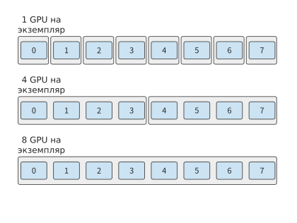
Рисунок 6-1. Три варианта группировки экземпляров на одних и тех же восьми картах. Каждая внешняя рамка обозначает отдельный экземпляр инференса, а внутренние линии — взаимодействие, необходимое для выполнения запроса. Если каждый экземпляр обрабатывает по одному запросу за раз, эти три варианта развёртывания позволяют одновременно обрабатывать соответственно восемь, два и один запрос.
Большее число карт обычно требуется по трём причинам: веса модели превышают объём памяти одной карты и должны храниться распределённо; отдельный запрос выполняется слишком медленно и вычисления нужно распределить между несколькими картами; одновременно поступает слишком много запросов и необходимо увеличить число экземпляров, способных обрабатывать запросы независимо. Эти три потребности соответствуют трём целям: ёмкости, задержке и пропускной способности.
6.1.2 Сквозной пример: ёмкость и время одного шага Qwen3-235B-A22B¶
Сквозной пример этой главы — запуск Qwen3-235B-A22B на одном сервере HGX H100 после завершения обработки входных данных, когда в кэше находятся 8192 контекстных токена и требуется продолжить генерацию. HGX H100 — распространённый сервер с восемью картами: каждая из восьми H100 SXM имеет 80 GB HBM с пиковой пропускной способностью 3350 GB/s и пиковой производительностью 989.4 TFLOP/s при операциях с плотными матрицами в BF16. Восемь карт соединены через NVSwitch — коммутационные микросхемы, организующие сеть NVLink, — посредством NVLink четвёртого поколения с пропускной способностью 450 GB/s на каждую карту в каждом направлении. Кроме того, каждая карта оснащена сетевым адаптером ConnectX-7 на 400 Gbit/s (50 GB/s) для подключения к другим серверам.35
При проектировании многокарточной системы сначала необходимо определить размещение данных. Одновременно хранящиеся на карте \(i\) веса \(W_i\), состояние KV \(K_i\), активации \(A_i\) и остальные рабочие области \(U_i\) должны удовлетворять условию
Здесь \(C_i\) — доступная задаче память этой карты. Объём весов определяется моделью, KV растёт вместе с контекстом сеанса, а объёмы активаций и рабочих областей зависят от способа выполнения. Все четыре составляющие одновременно используют физическую память одной карты.
Размер модели Qwen3-235B-A22B. Модель хранит веса и KV в BF16, содержит 94 слоя и имеет скрытую размерность 4096; в каждом слое 64 головы запросов и 4 головы KV, размерность головы равна 128. FFN состоит из 128 маршрутизируемых экспертов, для каждого токена выбираются 8 из них, а промежуточная размерность каждого эксперта равна 1536. GB и TB используются в десятичном смысле, MiB и GiB — в двоичном.
Сначала рассчитаем ёмкость. Веса всей модели в BF16 занимают приблизительно 470.2 GB. Для каждого контекстного токена необходимо хранить K и V каждого слоя, поэтому объём KV всей модели на один токен равен
KV для 8192 токенов занимает в общей сложности около 1.58 GB. Если зарезервировать для активаций и остальных рабочих областей 2 GiB, то есть приблизительно 2.15 GB, общая потребность одной карты составит около 473.9 GB — почти шестикратный объём памяти одной H100.
Чтобы разместить модель, эти данные необходимо распределить между восемью картами: веса разбиваются на восемь частей по строкам или столбцам матриц, и каждая карта хранит одну часть; рабочая область по-прежнему резервируется отдельно на каждой карте. KV разделяется по головам внимания, но у этой модели всего 4 головы KV: при использовании восьми карт каждые две карты совместно используют одну голову KV, причём каждая хранит собственную копию, поэтому на каждой карте находится четверть всего KV. Как такое разбиение сохраняет неизменным результат вычислений, объясняется в разделе 6.2.2. Требования к памяти каждой карты становятся следующими:
| Размещение | Веса | KV | Резерв для активаций и рабочих областей | Итого |
|---|---|---|---|---|
| Одна карта | 470.2 GB | 1.58 GB | 2.15 GB | 473.9 GB |
| Каждая из восьми карт | 58.96 GB | 0.39 GB | 2.15 GB | 61.50 GB |
Каждой карте требуется около 61.50 GB, что меньше 80 GB у H100; весь сервер использует суммарно около 492.0 GB, и из 640 GB остаётся примерно 148 GB. Объём весов на каждой карте немного превышает одну восьмую от 470.2 GB, поскольку параметры нормализации и маршрутизатор реплицируются на всех картах. Оставшиеся на каждой карте примерно 18.5 GB позволяют хранить дополнительные сеансы: при таком разбиении один сеанс из 8192 токенов занимает на каждой карте 0.39 GB, поэтому весь сервер может одновременно хранить не более 47 таких сеансов. Распределённое хранение снижает требования к памяти каждой карты, тогда как общий объём памяти экземпляра равен сумме объёмов, занятых на всех картах.1
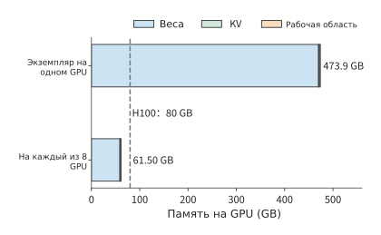
Рисунок 6-2. Требования к памяти однокарточного экземпляра и каждой карты после распределения по восьми картам. Одной карте требуется около 473.9 GB, что намного превышает 80 GB у H100 (пунктирная линия); после распределения по восьми картам каждой требуется около 61.50 GB. Рабочая область объёмом 2 GiB резервируется отдельно на каждой карте.
Теперь рассчитаем время выполнения. Ёмкость памяти определяет, можно ли сохранить эти данные, а объём обращений — сколько данных необходимо прочитать или записать за одно выполнение. Рассмотрим вычисления экспертов одного слоя: при генерации одного токена маршрутизатор выбирает 8 экспертов, у каждого из которых есть три матрицы с общим объёмом весов \(8\times3\times4096\times1536\times2=288\) MiB; все они должны быть один раз прочитаны из HBM. При скорости 3350 GB/s одно чтение занимает около 90.1 μs; матричные умножения требуют примерно 302 млн FLOPs и при производительности 989.4 TFLOP/s выполняются всего за 0.31 μs. Чтение весов занимает более чем на два порядка больше времени, чем вычисления, поэтому для сокращения времени этого вызова прежде всего следует уменьшить объём весов, читаемых каждой картой. При генерации одного токена всей модели необходимо прочитать около 43.1 GB весов и 1.58 GB KV. Если всё читает одна карта, это занимает около 13.3 ms; при равномерном распределении между восемью картами описанным выше способом каждая карта читает около 5.79 GB, что занимает примерно 1.73 ms.
При перекрытии вычислений оператора и обращений к памяти время выполнения можно оценить по формуле:
\(F\) — объём вычислений, \(P\) — производительность матричных операций, \(V\) — объём обращений к HBM в байтах. Вычисления и обращения к памяти выполняются одновременно, поэтому время выполнения оператора определяется более длительной из этих операций. Следующий оператор должен ждать результата предыдущего, поэтому длительности последовательных этапов складываются. Формула (6-2) представляет собой модель Roofline из раздела 4.8.1. Согласно определению из раздела 1.2.2, MFU вызова для одного токена не превышает \(0.31/90.1\), то есть составляет около 0.3%. Это аппаратный предел при batch, равном 1, не зависящий от качества реализации; все рассматриваемые в этой главе способы распараллеливания по-разному организуют чтение и повторное использование весов в рамках данного ограничения. В разделе 6.2 будет показано, как распределить веса и вычисления этого слоя между несколькими картами, а в разделе 6.4 будет рассчитано время обмена результатами между картами.
6.1.3 Различия в требованиях к ресурсам для Prefill, Decode и обучения¶
Значения 90.1 μs и 0.31 μs из раздела 6.1.2 соответствуют вызову для одного токена. Если за один раз обрабатывать больше токенов, одни и те же веса можно использовать для нескольких строк входных данных, а соотношение времени вычислений и чтения изменится. Когда один вызов обрабатывает \(m\) токенов, объём вычислений экспертов пропорционален \(m\), но веса выбранных экспертов могут повторно использоваться для этих токенов. Если заменить вызов для одного токена в приведённом выше примере на prefill для 8192 токенов, будут выбраны все 128 экспертов, а объём чтения весов экспертов одного слоя вырастет до 4.5 GiB, что при 3350 GB/s займёт около 1.44 ms. Объём матричных вычислений при этом вырастет примерно до 2.47 TFLOPs, что при 989.4 TFLOP/s потребует около 2.50 ms и превысит время чтения. При большом batch одни и те же веса используются для множества строк входных данных, поэтому основным ограничением времени выполнения вместо чтения весов становятся матричные вычисления.
Характер коммуникации также меняется в зависимости от формы данных. Скрытый тензор в BF16 имеет форму \(m\times4096\): один токен занимает 8 KiB, а 8192 токена — 64 MiB. Оба вызова проходят одинаковое число слоёв и выполняют одинаковое число обменов, однако объём данных каждой передачи различается в 8192 раза. На передачу малого объёма данных сильнее влияют накладные расходы запуска, а передача большого объёма в большей степени зависит от устойчивой пропускной способности.
Decode также имеет временную зависимость: текущий выходной токен определяет вход следующего шага. Один сеанс должен продвигаться последовательно, тогда как несколько сеансов могут одновременно предоставлять уже готовые входные данные. Чем больше сеансов, тем больше возможностей для повторного использования весов, но тем выше ёмкость и объём чтения KV; следовательно, одновременно изменяются время вычислений, время обращений к памяти и время ожидания в очереди.
При обучении после прямого прохода необходимо выполнить обратное распространение, вычислить градиенты входов и весов, а затем обновить параметры с помощью градиентов; активации прямого прохода должны сохраняться до завершения их использования при обратном проходе. Поэтому при многокарточном обучении также требуется синхронизировать градиенты и хранить больше состояний. В этой главе сначала рассматриваются разбиение модели и создаваемый им обмен данными, а в главе 10 — то, как эти операции образуют полный шаг обучения.
6.1.4 Обзор способов распараллеливания: какое измерение разбивать¶
Все три потребности из раздела 6.1.1 требуют распределения работы между несколькими картами, но способы распределения различаются. Они зависят от обрабатываемых моделью данных и структуры самой модели. Входные активации одного слоя имеют три измерения: число обрабатываемых за один раз образцов \(B\), которое при инференсе равно числу одновременно обрабатываемых запросов; число позиций последовательности в каждом образце \(S\); число скрытых признаков в каждой позиции \(H\). В матричном умножении из главы 5 измерения \(B\) и \(S\) объединялись в число строк \(M\), однако механизму внимания необходимо различать позиции внутри одной последовательности, поэтому здесь они рассматриваются отдельно. В структуре самой модели есть ещё два измерения, допускающих разбиение: слои \(L\) и множество экспертов \(E\) каждого слоя в модели MoE. На рисунке 6-3 эти пять измерений показаны вместе с местами разбиения для шести распространённых способов распараллеливания.
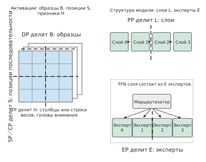
Рисунок 6-3. Слева показаны входные активации одного слоя: три измерения соответствуют местам разбиения при параллелизме по данным, параллелизме по последовательности и контексту, а также тензорном параллелизме. Справа показана структура модели: конвейерный параллелизм разделяет соседние слои, а параллелизм экспертов — экспертов одного слоя. Жирная пунктирная линия обозначает место разбиения, а не направление потока данных.
По разбиваемым измерениям шесть способов распараллеливания можно свести к следующей таблице. Под «обменом» понимаются данные, которые необходимо передавать между картами; их объём будет последовательно рассчитан в подразделах раздела 6.2.
| Способ распараллеливания | Разбиваемое измерение | Что хранит и вычисляет каждая карта | Чем необходимо обмениваться между картами |
|---|---|---|---|
| Параллелизм по данным (DP) | Образцы \(B\) | Полная копия модели, разные образцы | При инференсе обмена нет; при обучении объединяются градиенты всех карт |
| Тензорный параллелизм (TP) | Признаки \(H\): столбцы или строки весов, головы внимания | Часть матриц одного слоя | Фрагменты выходных данных при необходимости собираются; частичные суммы необходимо сложить |
| Параллелизм по последовательности (SP) | Позиции последовательности \(S\) для поточечных операторов над токенами | Отрезок позиций одной последовательности в этих операторах | Перед матричным умножением собираются все позиции; после суммирования частичных сумм данные снова разбиваются по позициям |
| Контекстный параллелизм (CP) | Позиции последовательности \(S\) в механизме внимания | Q, K и V для отрезка позиций одной последовательности | Удалённые K и V либо статистики внимания для каждого отрезка |
| Конвейерный параллелизм (PP) | Слои \(L\) | Непрерывная группа слоёв | Между соседними этапами передаются активации; при обучении в обратном направлении также передаются градиенты |
| Параллелизм экспертов (EP) | Эксперты \(E\) | Часть экспертов | Токен отправляется на карту с выбранным экспертом, а результат возвращается обратно |
Зачем нужны шесть способов распараллеливания: от узких мест к композиции.
Таблица показывает точки разделения и связанные с ними узкие места. Эти связи удобно представить в виде русской матрёшки. Внешний слой управляет образцами или запросами, поэтому параллелизм по данным (DP) определяет, сколько независимых работ продвигается одновременно. Затем одна работа проходит модель слой за слоем, а конвейерный параллелизм (PP) передаёт последовательные группы слоёв разным этапам. Внутри слоя параллелизм экспертов (EP) распределяет вычисления MoE по экспертам, тензорный параллелизм (TP) разделяет матрицы по признакам, а параллелизм по последовательности и контекстный параллелизм (SP/CP) распределяют активации и внимание по позициям последовательности. Каждый уровень имеет собственные зависимости данных, точки синхронизации и границы коммуникации. В сентябре 2026 года главный учёный Huawei по полупроводниковым технологиям доктор Ляо Хэн предложил Nested BSP, рекурсивно повторяющую «параллельную работу, синхронизацию, обмен и агрегацию» на разных уровнях; на рисунке 1 этой статьи используется та же программная матрёшка.32
Матрёшка показывает структуру композиции. DP может тиражировать полный экземпляр TP×PP×EP; SP обычно использует ту же группу карт, что и TP; CP добавляется при ограничении ёмкости состояния или вычислений внимания длинным контекстом; EP применяется к моделям с набором экспертов. Разные способы разделяют разные координаты одного пространства выполнения:
- DP обслуживает большое число образцов или запросов и повышает общую пропускную способность;
- TP распределяет вычисления, веса и промежуточные результаты внутри слоя и отдельного крупного запроса;
- SP распределяет хранение и обработку активаций для операторов над отдельными токенами внутри группы TP;
- CP распределяет состояние контекста и вычисления внимания для длинных последовательностей, обмениваясь удалённым контекстом;
- PP размещает большое число слоёв и крупные веса в конвейере с заданным порядком вычислений;
- EP распределяет веса экспертов и маршрутизацию токенов в MoE.
Каждый способ отвечает за своё основное узкое место. DP увеличивает число независимых работ, TP уменьшает размер матриц внутри слоя, SP снижает затраты на активации отдельных токенов, CP расширяет ёмкость контекста, PP позволяет разместить больше слоёв, а EP использует разреженность MoE. Их сочетание определяет конкретную раскладку по устройствам. Например, 16 карт можно организовать как DP2×PP2×TP4: две копии модели обрабатывают разные примеры, каждая копия разделена на два конвейерных этапа, а каждый этап использует четыре карты для матриц внутри слоя. Группы TP из четырёх карт могут одновременно применять SP, сохраняя общее число карт равным 16. При проектировании следует распределять работу, создающую основное узкое место, на подходящем уровне и размещать возникающий обмен на соответствующем физическом соединении.
Таблица также показывает два способа организации результатов. При разделении по примерам, позициям последовательности, слоям или экспертам каждая карта отвечает за разные данные или слои, а результаты передаются через сбор или межэтапную передачу. Если признаки разделены вдоль измерения редукции, каждая карта вносит часть одного и того же выхода, поэтому перед дальнейшим использованием результата необходимо сложить частичные суммы. При разбиении выходного измерения получаются разные выходные элементы, а не слагаемые одной суммы. В разделе 5.2.4 это различие рассматривалось внутри одной карты; между картами действует то же правило, а редукция проходит через межкарточное соединение.
Уточнение русского издания: у автора — «При разбиении по признакам каждая карта вносит часть одного и того же выхода, и перед следующим оператором нужно сложить частичные суммы». Здесь явно выделено разбиение измерения редукции: при разбиении выходного измерения суммировать разные выходные элементы не требуется. Источник: формула матричного произведения \(C_{ij}=\sum_k A_{ik}B_{kj}\); разбиение индекса \(k\) даёт слагаемые одного \(C_{ij}\), а разбиение \(j\) — разные столбцы результата.
Эти способы объединяются в одной конфигурации. Параллелизм по последовательности обычно использует ту же группу карт, что и тензорный параллелизм; параллелизм экспертов может использовать карты параллелизма по данным для части внимания; конвейерный параллелизм разделяет вычислительный граф по его последовательным зависимостям. В разделе 6.3 показано, как нумеровать карты в таких комбинациях.
Эксперимент 6-1 · Углублённое задание: как длина контекста и число входных строк влияют на ёмкость и узкое место выполнения
(a) Рассчитайте объём KV одного запроса Qwen3-235B-A22B при 4096, 8192 и 16384 контекстных токенах.
(b) При описанном в этом разделе разбиении по восьми картам и резервировании 2 GiB рабочей области на каждой карте рассчитайте, сколько сеансов по 32768 токенов может одновременно хранить один HGX H100; точное значение объёма весов приведено в примечании.
(c) Для 1, 64 и 8192 токенов отдельно рассчитайте объём матричных вычислений экспертов одного слоя и время чтения весов выбранных экспертов. Для 64 токенов оцените число выбранных экспертов по формуле (6-8) из раздела 6.3.2. Используя параметры H100, определите, чем главным образом ограничено время выполнения: вычислениями или обращениями к памяти.
(d) Уменьшите пропускную способность HBM вдвое и сравните увеличение времени вызова для трёх указанных количеств токенов.
6.2 Шесть способов распараллеливания¶
В этом разделе в порядке, показанном на рис. 6-3, последовательно рассматриваются шесть способов распараллеливания. Чтобы наглядно продемонстрировать распределение работы, в каждом подразделе сначала приводится пример с двумя ускорителями, а затем он обобщается на большее их количество.
6.2.1 Параллелизм по данным: копирование модели, разделение выборки¶
Параллелизм по данным (data parallelism, DP) предполагает, что каждый GPU хранит полную копию модели и обрабатывает отдельную часть выборки. На рис. 6-4 два GPU обрабатывают соответственно первые четыре и последние четыре примера из batch, каждый получая свою часть выходных данных.
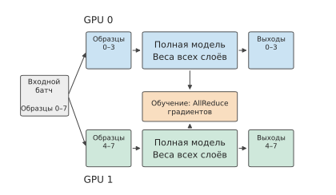
Рис. 6-4. Каждый из двух GPU хранит полную копию модели и обрабатывает отдельные примеры. При инференсе GPU не ждут друг друга; при обучении их градиенты сначала объединяются, после чего каждый GPU обновляет свою копию параметров.
Параллелизм по данным при инференсе — это развёртывание нескольких экземпляров. Если модель помещается на одном GPU и имеется несколько независимых запросов, самый прямой подход — распределить разные запросы между разными экземплярами. Каждый экземпляр хранит собственные веса и состояние сессии и независимо формирует результат. Если один GPU способен обрабатывать \(r\) запросов в секунду, то восемь экземпляров на отдельных GPU при постоянном наличии запросов смогут обрабатывать \(8r\) запросов в секунду.
Если объединить восемь GPU в один экземпляр и обозначить коэффициент ускорения отдельного запроса как \(S(8)\), этот экземпляр сможет обрабатывать \(S(8)r\) запросов в секунду. Оба варианта развёртывания используют одни и те же восемь GPU, поэтому отношение их пропускной способности равно \(S(8)/8\): пропускная способность совпадёт лишь в том случае, если отдельный запрос ускорится ровно в восемь раз. При наличии обмена данными и работы, не поддающейся распараллеливанию, совместно работающий экземпляр жертвует частью общей пропускной способности ради сокращения времени обработки отдельного запроса.
При параллелизме по данным во время обучения на нескольких GPU также размещается один и тот же набор параметров, однако градиенты со всех GPU совместно определяют следующее обновление. Например, если два GPU обрабатывают по четыре примера и вычисляют свои средние градиенты \(g_0,g_1\), то средний градиент по всем восьми примерам равен \((g_0+g_1)/2\). Каждый GPU вычисляет градиенты для половины примеров, после чего градиенты объединяются — так выполняется одно и то же обновление. Между экземплярами, выполняющими инференс, такой зависимости нет.
6.2.2 Тензорный параллелизм: разделение матриц внутри слоя¶
Несколько экземпляров позволяют одновременно обрабатывать больше запросов, но не сокращают время выполнения отдельного запроса на одной карте и не помогают с сессиями, которые не помещаются на одну карту. Чтобы две карты совместно обрабатывали один запрос, необходимо разделить вычисления и состояние внутри слоя. Тензорный параллелизм (tensor parallelism, TP) распределяет матрицы одного слоя между несколькими картами: каждая карта вычисляет свою часть, после чего карты обмениваются результатами. На рис. 6-5 показаны две точки разделения внутри слоя.
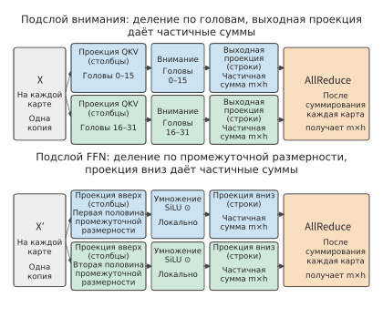
Рис. 6-5. Головы внимания распределены между двумя картами, а промежуточное измерение сети прямого распространения разделено между двумя картами. Последняя проекция в обоих местах даёт лишь частичную сумму, поэтому для сложения частичных сумм двух карт каждый раз требуется один AllReduce. \(m\) — число токенов, обрабатываемых за один раз, \(h\) — скрытая размерность.
Как длинный контекст вынуждает распределять плотную модель между картами. BF16-веса плотной модели Qwen3-32B занимают около 65,52 GB и помещаются на одной H100 с 80 GB памяти. Модель изначально поддерживает контекст длиной 32K токенов, а после четырёхкратной экстраполяции позиционного кодирования с помощью YaRN длина достигает 128K.36 KV-кэш одного токена занимает \(2\times64\times8\times128\times2=256\) KiB, поэтому для одной сессии 128K требуется сохранить около 34,36 GB. При развёртывании на одной карте веса, KV-кэш одной сессии 128K и рабочая область объёмом 2 GiB вместе занимают около 102,03 GB, что превышает 80 GB. При распределении на две карты на каждую приходится около 52,09 GB, и система вмещает две такие сессии; на четырёх картах на каждую приходится около 27,12 GB, и система вмещает семь сессий; на восьми картах помещается шестнадцать сессий. В этом случае тензорный параллелизм прежде всего нужен ради ёмкости: TP1 (число после TP обозначает количество карт в тензорном параллелизме, то есть TP1 — одна карта) не вмещает даже одну сессию 128K.
Однако некоторые модели используют новые механизмы внимания, уменьшающие требования к хранению KV-кэша при длинном контексте. Объём KV-кэша определяется устройством внимания: числом слоёв, количеством KV-голов, размерностью головы и тем, требуется ли сохранять KV на каждом слое. В следующей таблице сравниваются три модели близкого масштаба: плотная Qwen3-32B; MoE-модель того же поколения Qwen3-30B-A3B, по-прежнему использующая обычный GQA с 48 слоями, 4 KV-головами и размерностью головы 128; а также MoE-модель Qwen3.6-35B-A3B с гибридным вниманием, у которой лишь 10 из 40 слоёв используют полное внимание — по 2 KV-головы с размерностью 256 на слой, тогда как остальные 30 слоёв используют линейное внимание и сохраняют только рекуррентное состояние фиксированного размера.
| Показатель | Qwen3-32B | Qwen3-30B-A3B | Qwen3.6-35B-A3B |
|---|---|---|---|
| Постоянно размещённые BF16-веса | 65,52 GB | 61,06 GB | 69,32 GB |
| KV-кэш на токен | 256 KiB | 96 KiB | 20 KiB (только 10 слоёв полного внимания) |
| Фиксированное состояние одного запроса | — | — | 62,9 MB рекуррентного состояния (FP32) + 2,0 MB состояния свёртки |
| Состояние одного запроса 128K | 34,36 GB | 12,88 GB | 2,75 GB |
| Чтение весов за шаг (batch 1, контекст 32K) | 63,97 GB | 6,08 GB | 5,89 GB |
| Чтение весов за шаг (batch 64, контекст 32K) | 63,97 GB | 60,44 GB | 68,30 GB |
| Матричные вычисления за шаг (batch 64, контекст 32K) | 8,49 TFLOPs | 2,04 TFLOPs | 0,73 TFLOPs |
| Чтение состояния за шаг (batch 64, контекст 32K) | 549,8 GB | 206,2 GB | 47,1 GB |
| Число запросов 128K/32K на одной H100 | 0/1 | 1/5 | 3/11 |
| Число запросов 128K/32K на двух H100 | 2/10 | 7/29 | 31/117 |
Из таблицы следуют три вывода. Во-первых, при batch 1 обе MoE-модели на каждом шаге считывают лишь около одной десятой весов; при batch 64 эксперты, выбранные 64 токенами, охватывают почти всех экспертов, поэтому объём чтения весов возвращается к 60–68 GB, что сопоставимо с 64 GB у плотной модели. Во-вторых, объём матричных вычислений всегда составляет лишь от 1/12 до 1/4 объёма плотной модели — это постоянное преимущество MoE. В-третьих, при длинном контексте и большом batch чтение состояния становится основной частью каждого шага: при 3350 GB/s для batch 64 и контекста 32K чтение состояния трёх моделей занимает соответственно около 164, 62 и 14 ms, тогда как чтение весов требует лишь 18–20 ms. Эта разница обусловлена устройством внимания, а не MoE: хотя Qwen3-30B-A3B также является MoE-моделью, для каждого токена ей всё равно требуется сохранять 96 KiB KV-кэша.
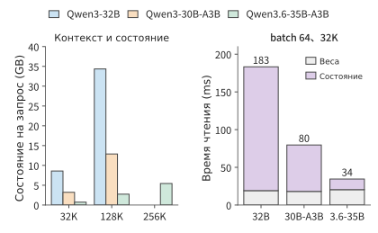
Рис. 6-6. Слева показано состояние одного запроса при контексте 32K, 128K и 256K; предел контекста Qwen3-32B и Qwen3-30B-A3B равен 128K. Справа показано время чтения весов и состояния за один decode-шаг при batch 64 и контексте 32K, рассчитанное для пропускной способности H100 в 3350 GB/s. Объём чтения весов у трёх моделей близок, тогда как объём чтения состояния различается более чем в десять раз.
Соответственно различается и ёмкость. Если на каждой карте зарезервировать 2 GiB рабочей области, одна H100 вмещает соответственно 0, 1 и 3 запроса 128K, а две H100 — 2, 7 и 31 запрос. Qwen3.6-35B-A3B изначально поддерживает 262 144 токена, причём состояние одного такого запроса занимает лишь около 5,43 GB. Поэтому необходимость многокарточного TP для сервиса масштаба 30B с контекстом 128K определяется прежде всего устройством внимания, а не тем, является ли модель плотной или MoE-моделью. Такие модели, как DeepSeek V4-Flash, дополнительно сжимают KV-кэш; в разделе 2.6.1 состояние и вычисления пяти моделей сравниваются при контексте 8K, 200K и 1M, поэтому здесь мы не будем повторять это сравнение.37
Вернёмся к двум точкам разделения внутри слоя, показанным на рис. 6-5. На последнем шаге в обеих точках получается лишь частичная сумма, поэтому необходимо с помощью AllReduce сложить частичные суммы всех карт, а затем предоставить каждой карте итоговую сумму. В каждом слое Qwen3-32B это требуется дважды, то есть 128 раз для 64 слоёв. Это число будет неоднократно использоваться далее при расчёте времени выполнения. Чтобы понять, почему при одном способе разделения достаточно конкатенации, а при другом обязательно требуется суммирование, рассмотрим минимальное матричное умножение. Когда его совместно выполняют две карты, сначала нужно определить, что вычисляет каждая из них: карты могут вычислять разные элементы результата либо каждая может вычислять часть одного и того же результата. В первом случае результаты требуется объединить, во втором — сложить.
Рассмотрим оба способа разделения на полном примере. Пусть вход равен \(x=[2,3]\), матрица весов — \(W=\begin{bmatrix}1&4\\2&5\end{bmatrix}\), а результат — \(xW=[8,23]\). Разделим матрицу весов по столбцам, то есть распределим выходные признаки между разными картами: карта 0 хранит первый столбец и получает первый элемент результата 8; карта 1 хранит второй столбец и получает второй элемент 23. Конкатенация этих двух элементов даёт полный результат.
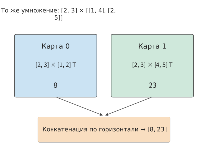
Рис. 6-7. При разделении матрицы весов по столбцам каждая карта использует полный вход и вычисляет разные элементы результата. Символ транспонирования T внутри ячейки означает, что записанные горизонтально в квадратных скобках числа следует рассматривать как вектор-столбец.
Теперь разделим матрицу весов по строкам, то есть распределим входные признаки одного токена между разными картами: карта 0 умножает входное значение 2 на первую строку и получает \([2,8]\); карта 1 умножает входное значение 3 на вторую строку и получает \([6,15]\). Обе карты получают вектор из двух элементов, но каждый вектор содержит вклад лишь одной строки весов. Полный результат \([8,23]\) получается только после поэлементного сложения.
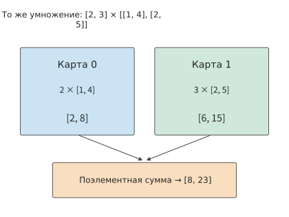
Рис. 6-8. При разделении матрицы весов по строкам две карты создают частичные суммы результата одинаковой формы. Поэлементное сложение восстанавливает полный результат умножения.
В FFN эти два способа разделения можно соединить последовательно, как показано в нижней части рис. 6-5. Здесь используется SwiGLU, представленная в главе 2: вход передаётся в управляющую и повышающую проекции, к результату управляющей проекции применяется функция активации SiLU, затем результаты двух ветвей поэлементно перемножаются, после чего выполняется понижающая проекция. Пусть одновременно обрабатывается \(m\) токенов, скрытая размерность равна \(h\), а промежуточная размерность — \(f\). Вход имеет вид \(X\in\mathbb{R}^{m\times h}\), повышающие проекции — \(W_g,W_u\in\mathbb{R}^{h\times f}\), а понижающая проекция — \(W_d\in\mathbb{R}^{f\times h}\):
Разделим промежуточную размерность \(f\) на левую и правую половины. Карта 0 хранит столбцы левых половин двух матриц повышающих проекций и строки верхней половины матрицы понижающей проекции, а карта 1 — столбцы правых половин двух матриц повышающих проекций и строки нижней половины матрицы понижающей проекции. Обе карты хранят полный вход \(X\) и получают соответственно промежуточные активации \(Z_0,Z_1\). SiLU и умножение выполняются поэлементно, поэтому каждая карта может непосредственно обработать свою половину.
Понижающая проекция соединяется вдоль той же промежуточной размерности:
Оба произведения в правой части имеют форму \(m\times h\), и каждое содержит вклад лишь половины компонентов промежуточной размерности. Только после их сложения получается вход, необходимый следующему слою.
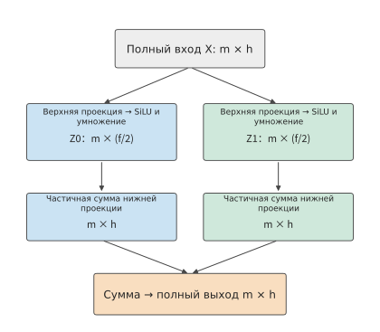
Рис. 6-9. Разделение SwiGLU между двумя картами. В повышающих проекциях выходные признаки разделяются по столбцам матрицы весов, а поэлементные операции выполняются локально; в понижающей проекции входные признаки разделяются по строкам матрицы весов. На обоих шагах сохраняются все \(m\) токенов, а разделяется размерность признаков каждого токена. Промежуточная активация на каждой карте имеет форму \(m\times(f/2)\), а частичная сумма результата по-прежнему имеет форму \(m\times h\); в конце выполняется поэлементное суммирование.
Если полный результат нужен обеим картам, выполняется AllReduce. Если следующий оператор может продолжить работу с разделёнными данными, выполняется ReduceScatter (редукция с распределением): сначала данные суммируются, а затем разные фрагменты суммы остаются на разных картах. Для восстановления полных данных из фрагментов выполняется AllGather (полный сбор), который объединяет фрагменты, хранящиеся на всех картах.
Пример: насколько разделение между четырьмя картами сокращает чтение весов и насколько увеличивает обмен данными? Возьмём \(h=5120,f=25600\) модели Qwen3-32B и поровну разделим промежуточную размерность между четырьмя картами.
Решение: на каждой карте матрицы управляющей и повышающей проекций имеют форму \(5120\times6400\), а понижающая — \(6400\times5120\). Три матрицы вместе занимают 187,5 MiB, то есть четверть от исходных 750 MiB. При 3350 GB/s время чтения для одного токена сокращается примерно с 234,8 μs до 58,7 μs: каждая карта считывает на 562,5 MiB меньше, что экономит около 176,1 μs. Цена этого — необходимость сложить частичные суммы результата объёмом 10 KiB с каждой из четырёх карт. В разделе 6.4 время такого объединения будет рассчитано с помощью конкретных алгоритмов.
Внимание также можно разделять по головам: проекции Q, K и V создают только головы, за которые отвечает текущая карта, а каждая карта независимо вычисляет внимание для этих голов; выходная проекция отображает результаты голов обратно в скрытую размерность, однако каждая карта по-прежнему получает лишь частичную сумму, и полный результат возникает только после сложения. Поэтому на каждом слое Qwen3-32B выполняется по одной редукции для результата внимания и FFN, всего 128 редукций для 64 слоёв. Эмбеддинги слов разделяются по словарю; выходная проекция на словарь также распределяется между картами по словарю.
Голову нельзя разделить дальше: это минимальная единица распределения. У Qwen3-32B есть 8 KV-голов, поэтому при TP8 на каждую карту приходится по одной. При TP16 запросные головы, совместно использующие одну KV-голову, распределяются между двумя картами, и обе карты должны хранить состояние этой KV-головы. При контексте 128K состояние каждой KV-головы занимает 4 GiB: суммарно 32 GiB на восьми картах и 64 GiB на шестнадцати. У Qwen3-235B-A22B всего 4 KV-головы, поэтому при распределении по восьми картам из раздела 6.1.2 каждая KV-голова уже хранится в двух экземплярах на двух картах. Как только число карт TP превышает количество KV-голов, дальнейшее увеличение числа карт приводит к дублированию KV-кэша.
В этой главе «числом экземпляров» называется количество независимых сервисов инференса, а \(p\) обозначает число карт TP в одном экземпляре. При наличии восьми карт число экземпляров равно \(8/p\). Далее сначала вычисляется время \(T(p)\), за которое один экземпляр генерирует один токен, а затем оно пересчитывается во время завершения группы запросов.
Вывод времени полного decode-шага из вычислений одного слоя. Рассмотрим одну сессию 128K модели Qwen3-32B. На каждом шаге веса каждой проекции один раз считываются из HBM, старый KV-кэш один раз считывается, а данные одного нового токена записываются. BF16-веса проекций внимания занимают
Здесь два слагаемых \(5120\times8192\) соответствуют Q и выходной проекции, а два \(5120\times1024\) — K и V. Если добавить 750 MiB весов FFN на слой, получится 930 MiB. При контексте из 131 064 токенов объём считываемого KV-кэша на каждом слое составляет около 512 MiB. Словарь содержит 151936 элементов, поэтому веса выходной проекции занимают около 1,56 GB. Таким образом, общий объём обращений к HBM за шаг можно записать как
где \(s\) — длина контекста перед началом текущего шага. При \(s=131\,064\) получается около 98,32 GB, из которых 63,97 GB приходится на веса, а 34,36 GB — на KV-кэш. При пропускной способности H100 в 3350 GB/s чтение занимает около 29,35 ms. Матричные вычисления на том же шаге составляют около 0,34 TFLOPs и при 989,4 TFLOP/s занимают лишь около 0,34 ms, поэтому время выполнения внимания и FFN на каждом слое ограничено пропускной способностью памяти. При TP на \(p\) карт (\(p\le8\)) веса и KV-кэш поровну распределяются между картами, поэтому эта часть занимает \(29,35/p\) ms. Нормализация, поэлементные операции и сэмплирование читают и записывают лишь несколько скрытых векторов, поэтому здесь они не учитываются.25 Вычисления и редукции выполняются последовательно, что даёт следующую модель времени выполнения, используемую в последующих разделах:
Здесь \(T_{\mathrm{AR}}(p)\) — время одного AllReduce на \(p\) картах. Формула (6-5) разделяет влияние увеличения числа карт TP на две составляющие: локальное время выполнения уменьшается с ростом числа карт, а время обмена данными зависит от алгоритма и способа соединения. При удвоении числа карт с \(p\) до \(2p\) экономия локального времени составляет \(T_{\mathrm{local}}/(2p)\). Следовательно, увеличение числа карт сокращает время выполнения при условии
Чем больше \(p\), тем меньше правая часть. Даже если каждая редукция становится медленнее лишь на один и тот же небольшой интервал, накопленная задержка может свести на нет сокращение локального времени выполнения.
При большем числе карт линейный слой также можно одновременно разделить по двум измерениям матрицы, расположив карты в группы обмена данными по строкам и столбцам. Рассмотрим проекцию \([8192,4096]\times[4096,12288]\): разделим результат на 16 частей и разместим их на 16 картах, каждая из которых изначально содержит лишь фрагмент входа объёмом 4 MiB и фрагмент весов объёмом 6 MiB. При размещении карт в сетке 4×4 каждая карта должна собрать по горизонтали фрагменты входа с трёх других карт той же строки, отправив 12 MiB, и собрать по вертикали фрагменты весов с трёх других карт того же столбца, отправив 18 MiB. В сетке 2×8 объёмы по двум направлениям составляют соответственно 28 MiB и 6 MiB, а в сетке 8×2 — 4 MiB и 42 MiB. Если каналы двух направлений независимы и имеют одинаковую скорость, время передачи определяется большим из двух объёмов, поэтому сетка 4×4 оказывается самой быстрой. MeshSlice продолжает разбивать данные на блоки вдоль такой раскладки, конвейерно совмещая сбор данных с матричным умножением; система инференса Arctic переключает распределение работы между разными этапами выполнения, а перенос её состояния рассматривается в главе 9.4
6.2.3 Параллелизм по последовательности: разбиение операторов, работающих с отдельными токенами, вдоль последовательности¶
При тензорном параллелизме каждый GPU хранит только часть матрицы, однако внутри слоя остаются операторы, не выполняющие матричное умножение, например LayerNorm (нормализация слоя), Dropout и остаточное сложение. Эти операторы обрабатывают каждый токен отдельно: результат для каждого токена зависит только от его собственного скрытого вектора. Параллелизм по последовательности (sequence parallelism, SP) разбивает работу этих операторов по позициям последовательности: каждый GPU в группе TP обрабатывает лишь часть позиций и больше не хранит собственную копию полных активаций. В этой книге используется это распространённое определение из фреймворка обучения больших моделей Megatron.31
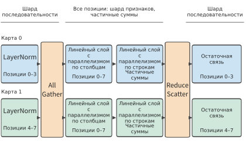
Рисунок 6-10. Для LayerNorm и остаточного сложения нужны только данные текущего токена, поэтому каждый из двух GPU обрабатывает половину позиций; перед входом в линейный слой с параллелизмом по столбцам все позиции собираются с помощью AllGather, а частичные суммы линейного слоя с параллелизмом по строкам суммируются с помощью ReduceScatter и снова разбиваются по позициям.
Линейному слою с параллелизмом по столбцам требуются полные строки входных данных, поэтому перед входом в него фрагменты последовательности со всех GPU сначала собираются с помощью AllGather. После того как линейный слой с параллелизмом по строкам сформирует частичные суммы, ReduceScatter одновременно суммирует их и снова разбивает по позициям. AllReduce по определению эквивалентен последовательности ReduceScatter и AllGather; параллелизм по последовательности лишь размещает эти две части на разных границах операторов, благодаря чему промежуточным операторам, работающим с отдельными токенами, не требуется хранить на каждом GPU полную копию активаций.
Например, BF16-активации размером \([8192,4096]\) занимают 64 MiB. Если четыре GPU хранят непрерывные фрагменты размером \([2048,4096]\), каждый GPU использует лишь 16 MiB, а суммарно — 64 MiB; если же каждый из четырёх GPU хранит полный тензор, суммарный объём составляет 256 MiB. Эта экономия достигается только на участке, где сохраняется разбиение последовательности; это не означает, что все активации и веса модели уменьшаются в четыре раза. Соотношение между измерением редукции и выходным измерением остаётся таким же, как на рисунке 6-9; меняется лишь раскладка данных, которую получает следующий оператор. В сопутствующем эксперименте на JAX (фреймворке численных вычислений с поддержкой автоматического дифференцирования и компилируемого выполнения) показаны два варианта прохождения через FFN: с сохранением разбиения и с повторной сборкой данных.3
6.2.4 Параллелизм контекста: разделение внимания одной последовательности¶
Параллелизм по последовательности охватывает только операции, выполняемые отдельно для каждого токена, тогда как при вычислении внимания каждая позиция должна видеть другие позиции последовательности. Параллелизм контекста (context parallelism, CP) распределяет позиции одной длинной последовательности между несколькими картами. Каждая карта хранит Q, K и V для своего участка позиций и вычисляет для него выход внимания. На рис. 6-11 разделение работы между двумя картами показано на примере восьми позиций.
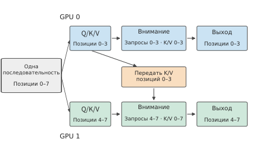
Рис. 6-11. Каждая карта хранит Q, K и V для своего участка позиций. При причинном внимании запросам карты 1 также нужны K и V карты 0, поэтому K и V необходимо передавать между картами; при непричинном внимании передача требуется в обоих направлениях.
Запросам на текущей карте по-прежнему нужны удалённые K и V в пределах, разрешённых маской. Можно сначала собрать все K и V либо передавать блоки K и V по кольцу между картами и по мере их поступления с помощью онлайн-softmax из раздела 5.3.3 накапливать максимум, сумму экспонент и взвешенный выход. Кольцевое внимание (Ring Attention) — это способ планирования и передачи данных, а параллелизм контекста — способ разделения работы; это не синонимы.31
На рис. 6-12 эта зависимость представлена как отношения видимости между восемью позициями.
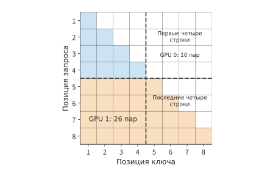
Рис. 6-12. Причинное внимание для восьми токенов: по горизонтальной оси расположены позиции ключей, по вертикальной — позиции запросов. Закрашенные ячейки обозначают пары «запрос — ключ», которые необходимо вычислить; первые четыре строки относятся к карте 0, последние четыре — к карте 1. Пунктирная линия лишь обозначает границу между устройствами, поэтому удалённые зависимости в левой нижней области никуда не исчезают.
Непрерывное разделение позиций пополам также приводит к неравномерной вычислительной нагрузке. Причинное внимание для восьми позиций содержит всего \(1+\cdots+8=36\) пар «запрос — ключ»: на первые четыре позиции приходится лишь 10 пар, а на последние четыре — 26. Хотя количество токенов на двух картах одинаково, объём работы различается в 2,6 раза. Если объединить ранние и поздние позиции, например передать карте 0 позиции \(1,2,7,8\), а карте 1 — позиции \(3,4,5,6\), то каждая карта обработает по 18 пар. На практике часто применяется чередующаяся блочная раскладка «зигзаг», однако при этом необходимо сохранить исходные позиции и причинную маску, а также перестроить обмен данными; удалённый контекст нельзя отбросить как padding.
При Decode запросов для нового токена мало, а историческая последовательность K и V очень длинна. После её разделения по историческим позициям каждая карта сначала вычисляет для своего участка максимум \(m_r\), сумму экспонент \(l_r\) и ненормализованный взвешенный вектор \(u_r\), после чего они объединяются:
\(o\) — это выход внимания нового токена по всем историческим позициям. Это тот же способ объединения softmax между tile, что и в главе 5, но статистики и векторы требуется передавать между картами. Нельзя сначала независимо выполнить softmax на каждой карте, а затем просто усреднить выходы карт. Параллелизм контекста сокращает объём состояния контекста, хранящегося на каждой карте, и объём локальных вычислений внимания, но требует обмена K и V либо редукции статистик; зависимости между предыдущими и последующими токенами при генерации от этого не исчезают. В разных фреймворках названия параллелизма по последовательности и параллелизма контекста частично пересекаются, поэтому при анализе конфигурации следует смотреть, какие операции и тензоры разделяются и какая коммуникационная группа используется, а не только на аббревиатуру.
6.2.5 Конвейерный параллелизм: разделение этапов по слоям¶
Все описанные выше способы распределяют работу внутри одного слоя. Конвейерный параллелизм (pipeline parallelism, PP) вместо этого распределяет работу по слоям: слои модели последовательно разделяются на несколько этапов, за каждый из которых отвечает один или несколько ускорителей. На рис. 6-13 64 слоя Qwen3-32B разделены на два этапа.
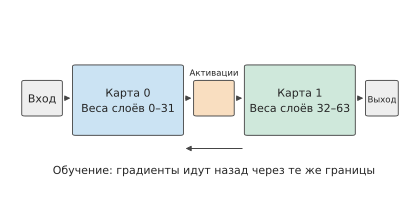
Рис. 6-13. Каждый из двух этапов хранит веса относящихся к нему слоёв. Между соседними этапами передаются только активации; при обучении градиенты передаются в обратном направлении через ту же границу.
Когда предыдущий этап завершает вычисления для относящихся к нему слоёв, он передаёт активации следующему этапу, который продолжает вычисления. Каждый этап хранит только веса своих слоёв, а между этапами передаются только промежуточные результаты.
Входные данные подаются в конвейер в виде микробатчей: один batch разделяется на несколько micro-batch, благодаря чему разные этапы могут одновременно обрабатывать разные micro-batch. Пусть модель разделена на \(q\) этапов, время выполнения каждого этапа, включая передачу активаций, равно \(t\), а входные данные состоят из \(b\) уже готовых и не зависящих друг от друга micro-batch. Рассмотрим случай с четырьмя этапами, каждый из которых выполняется за 1 ms. micro-batch 0 поступает на этап 0 в момент 0 ms и, пройдя четыре этапа, завершается в момент 4 ms; уже в момент 1 ms этап 0 может принять micro-batch 1, который завершится в момент 5 ms. Остальные micro-batch последовательно следуют за ними, и с интервалом 1 ms завершается один из них.
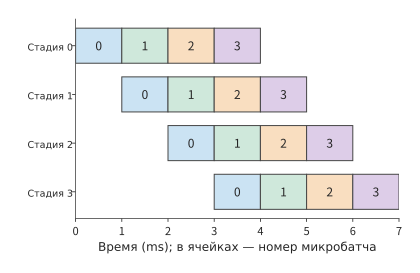
Рис. 6-14. Четыре этапа с одинаковым временем выполнения обрабатывают четыре независимых micro-batch. Каждая ячейка соответствует 1 ms, одинаковый цвет обозначает один и тот же micro-batch. Первый результат появляется в момент 4 ms, последний — в момент 7 ms; пустые области от левого верхнего до правого нижнего угла возникают из-за заполнения и опустошения конвейера.
Первый micro-batch требует \(qt\), а каждый следующий micro-batch увеличивает общее время лишь на \(t\), поэтому
В числителе указано суммарное время фактической работы всех этапов, а в знаменателе — произведение числа этапов на время обработки всех micro-batch. Для четырёх этапов и четырёх micro-batch коэффициент использования равен \(4/7\), то есть около 57 %; при увеличении числа micro-batch до 16 он равен \(16/19\), то есть около 84 %. Чем больше независимых micro-batch, тем меньше доля простоя, вызванного заполнением и опустошением конвейера.
Неодинаковое время выполнения этапов также приводит к простою ускорителей. Если четыре этапа требуют соответственно 1, 1, 2 и 1 ms, первый micro-batch завершится за 5 ms, а затем результаты смогут появляться не чаще одного раза в 2 ms. Входные данные поступают на этап длительностью 2 ms быстрее, чем он успевает их обрабатывать, поэтому очередь постепенно растёт; после заполнения буфера предшествующие этапы вынуждены приостановиться. Разделение этапов с учётом фактического времени выполнения каждого слоя позволяет выровнять длительность этапов и уменьшить накопление очереди.5
При авторегрессионном сеансе входные данные для следующего шага становятся готовы только после генерации текущего токена. Четыре независимых сеанса могут предоставить четыре micro-batch, тогда как четыре будущих токена одного сеанса образуют последовательную цепочку зависимостей. Поэтому коэффициент использования конвейера напрямую зависит от числа micro-batch, готовых к одновременному запуску.
6.2.6 Экспертный параллелизм: разбиение набора экспертов¶
Последний способ разбиения применяется к набору экспертов, характерному для MoE. В плотной модели для каждого токена используется один и тот же набор весов FFN; в модели MoE предусмотрено несколько сетей прямого распространения, выступающих в роли экспертов, а маршрутизатор вычисляет оценки выбора и для каждого токена определяет экспертов, которых необходимо выполнить. Каждый токен использует только выбранных экспертов, однако весь набор экспертов должен храниться на ускорителях, чтобы их могли выбирать последующие токены. Таким образом, MoE предоставляет ещё один способ распределения работы: экспертный параллелизм (expert parallelism, EP) размещает разных экспертов на разных картах, каждая из которых обрабатывает направленные ей входные данные. На рис. 6-15 восемь экспертов распределены между двумя картами.
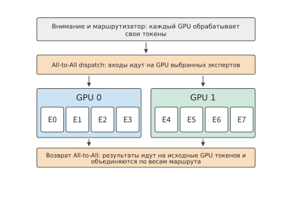
Рис. 6-15. Вычисления внимания и маршрутизатора выполняются на карте, где находится токен; входные данные отправляются на карту с выбранным экспертом, а после вычислений результат эксперта возвращается на исходную карту и объединяется с учётом весов маршрутизации. Оба обмена представляют собой All-to-All (полный обмен), то есть каждая карта отправляет каждой другой карте разные данные.
При экспертном параллелизме сначала необходимо определить, где будут находиться веса экспертов, и только затем — как выполнять обработку текущего токена.
Рассмотрим такое распределение работы на примере четырёх карт и восьми экспертов. На карте 0 хранятся эксперты 0 и 1, на карте 1 — эксперты 2 и 3 и так далее. В данный момент на карте 0 находится токен A, для которого маршрутизатор выбрал экспертов 1 и 6: эксперт 1 находится на этой же карте, а эксперт 6 — на карте 3. Карта 0 должна не только выполнить локального эксперта 1, но и отправить входные данные A на карту 3, а затем получить оба выходных результата и объединить их с учётом весов маршрутизации.
Процесс отправки входных данных эксперта на карту, где он находится, называется dispatch (диспетчеризация), а процесс возврата выходных данных на исходную карту и их объединения — combine (объединение). Продолжим рассматривать токен A: если выходы двух экспертов равны соответственно \(y_1,y_6\), а веса маршрутизации — \(a_1,a_6\), то полный выход MoE равен \(a_1y_1+a_6y_6\). Карта-отправитель сохраняет номер токена и информацию о маршрутизации, карта-получатель выполняет эксперта, после чего возвращённый результат снова сопоставляется с тем же токеном.
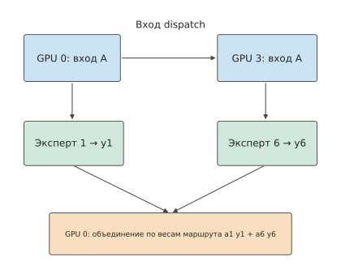
Рис. 6-16. На карте 0 находится токен A, для которого выбраны локальный эксперт 1 и эксперт 6 на карте 3. При dispatch входные данные отправляются по верхнему пути, а при combine выходы экспертов возвращаются по нижнему пути и объединяются с весами. Сколько экспертов выбрано для каждого токена, столько вычислений и требуется выполнить; расположение эксперта определяет, куда следует отправить входные данные.
Если на одной карте находится несколько экспертов, достаточно отправить одну копию входных данных. Если восемь экспертов, выбранных для одного токена, попарно распределены между четырьмя удалёнными картами, то вход размерности 4096 в формате BF16 занимает 8 KiB: при отправке отдельно каждому эксперту потребуется 64 KiB, а при отправке по одной копии на каждую целевую карту — только 32 KiB, поскольку два эксперта на одной карте совместно используют одну копию входных данных.
При совместной обработке нескольких токенов каждая карта должна отправлять другим картам разное количество данных — это и есть All-to-All на рис. 6-15. Получатель сначала перегруппировывает полученные строки входных данных по экспертам, выполняет матричное умножение, а затем восстанавливает исходный порядок выходных данных по номерам токенов. Карте, получившей больше всего входных данных, обычно приходится выполнять и больше всего вычислений экспертов.
В Qwen3-235B-A22B этот пример масштабирован до 128 маршрутизируемых экспертов в каждом слое, из которых для каждого токена выбираются 8; всего модель содержит 94 слоя. Каждый эксперт включает три проекции; при скрытой размерности 4096, промежуточной размерности 1536 и весах BF16 их объём составляет \(3\times4096\times1536\times2=36\) MiB. Все эксперты одного слоя занимают 4,5 GiB, а 94 слоя — около 423 GiB. При равномерном распределении экспертов между восемью картами на каждую приходится около 52,9 GiB; кроме того, каждая карта должна хранить веса слоёв внимания, маршрутизаторов, входного и выходного слоёв, а также KV-кэш и рабочую область. Набор экспертов можно распределить между картами, тогда как головы и состояния внимания хранятся согласно собственной схеме распараллеливания внимания.
Эксперимент 6-2 · Основной: как тензорное разбиение и конвейер микробатчей изменяют время выполнения
(a) Укажите формы шести фрагментов весов и двух частичных сумм выходов для SwiGLU на двух картах. С помощью формулы (6-3) объясните, почему частичные суммы выходов с двух карт необходимо сложить.
(b) Для TP1, TP2, TP4 и TP8 рассчитайте время доступа к локальной памяти при обработке одного сеанса Qwen3-32B с контекстом 128K, пока не учитывая затраты на обмен данными; определите, сколько времени экономит каждое удвоение числа карт.
(c) Возьмите время редукции из раздела 6.4, подставьте его в формулу (6-5), повторно рассчитайте ускорение и объясните причину расхождения.
(d) Постройте временную диаграмму обработки восьми микробатчей в четыре этапа для двух случаев: когда каждый из четырёх этапов занимает 1 ms и когда этапы занимают соответственно 1, 1, 2 и 1 ms. Сравните время завершения в обоих случаях и укажите, перед каким этапом будут накапливаться микробатчи.
(e) Усложнённое задание: для одного и того же FFN сравните объём данных, который необходимо передавать между соседними операторами, в двух вариантах — при формировании полного выходного тензора и при сохранении фрагментов выхода. Можно также выбрать соответствующую схему с двумерной сеткой и дополнительно вывести способ разбиения передаваемых данных.
6.3 Комбинирование видов параллелизма и масштаб модели¶
Шесть подходов редко используются по отдельности. В этом разделе сначала объясняется, как комбинировать эти подходы и нумеровать каждую карту, а затем рассматриваются два вопроса, характерных для MoE: как выбор экспертов для батча токенов влияет на чтение весов и нагрузку каждой карты и как меняются комбинации при дальнейшем увеличении модели.
6.3.1 Схемы комбинирования и координаты устройств¶
Тензорный и конвейерный параллелизм можно комбинировать: например, разделить восемь карт на четыре конвейерных этапа, внутри каждого из которых две карты используют тензорный параллелизм. Редукция между двумя картами для каждого слоя выполняется внутри этапа, а между соседними этапами передаются активации. Если каждая из двух карт этапа хранит полный скрытый вектор размером 8 KiB и передаёт его соответствующей карте следующего этапа, то между двумя этапами необходимо отправить в сумме 16 KiB. Если между этапами передаются шарды, следующий этап повторно объединяет их в соответствии с требованиями вычислений. Поэтому при комбинировании этих двух видов параллелизма необходимо явно указать, какие шарды выводит каждый этап и какие шарды получает каждая карта следующего этапа.
При комбинировании нескольких подходов сначала каждой карте назначают координаты, а затем для каждого оператора указывают разбиение входных данных, весов и выходных данных, а также группы карт, между которыми требуется обмен данными. Например, схема с параллелизмом данных 2, конвейерным параллелизмом 2 и тензорным параллелизмом 4 обозначается как DP2×PP2×TP4 и занимает \(2\times2\times4=16\) карт. Если внутри той же группы TP4 включить параллелизм последовательности, количество карт не изменится, поэтому дополнительно умножать его на SP4 не нужно. Разбиение определяет, кому назначается каждая часть работы, а планирование — порядок готовности, выполнения, обмена данными и освобождения ресурсов. Только вместе они образуют полную схему параллелизма.
Экспертный параллелизм также можно комбинировать с тензорным параллелизмом внутри эксперта. Например, четыре группы экспертов содержат по 32 эксперта, а внутри каждой группы две карты делят промежуточную размерность экспертов, обрабатывая по 768 измерений каждая. Весь экземпляр по-прежнему занимает восемь карт, и каждая карта идентифицируется двумя номерами: номер группы экспертов указывает, за каких экспертов отвечает карта, а номер тензорного параллелизма внутри группы — какую половину матриц этих экспертов она обрабатывает. Далее обмен данными выводится для этой схемы TP2×EP4.
Входные данные экспертов формируются следующим образом: все четыре группы экспертов выполняют внимание для одного и того же запроса, причём каждая сохраняет KV этого запроса. После завершения внимания каждая группа содержит полный вход экспертов и может непосредственно выбрать строки, необходимые её экспертам, не рассылая входные данные между группами. В конце результаты всех групп объединяются посредством редукции.
| Группа экспертов | Карты | Номера экспертов | Промежуточная размерность эксперта на карту | KV-головы на карту |
|---|---|---|---|---|
| 0 | 0, 1 | 0—31 | 768 | чётная карта: 0, 1; нечётная карта: 2, 3 |
| 1 | 2, 3 | 32—63 | 768 | то же |
| 2 | 4, 5 | 64—95 | 768 | то же |
| 3 | 6, 7 | 96—127 | 768 | то же |
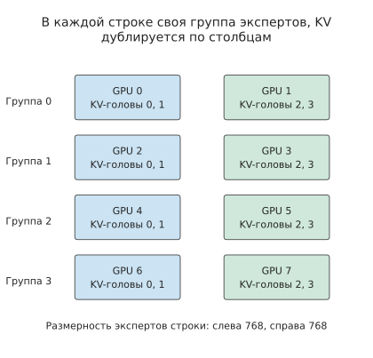
Рисунок 6-17. Восемь карт образуют четыре группы экспертов, в каждой из которых две карты делят работу по промежуточной размерности экспертов. Головы внимания и KV в одном столбце дублируются четыре раза, поэтому каждая группа может локально получить одинаковый вход экспертов.
После определения размещения данных необходимо проследить, как объединяются выходные данные. Две карты внутри группы вычисляют каждая свою половину промежуточной размерности экспертов, после чего результаты сначала суммируются внутри группы, образуя полный вклад экспертов этой группы. Затем суммируются вклады четырёх групп.
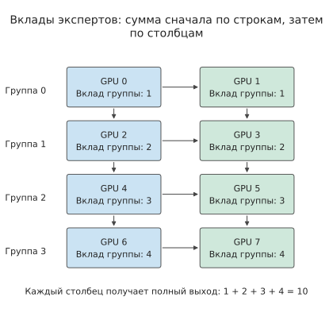
Рисунок 6-18. Горизонтальные стрелки обозначают суммирование результатов двух карт внутри группы, вертикальные — суммирование результатов четырёх групп. Число в ячейке — значение некоторого элемента выхода после суммирования внутри группы. Оба столбца получают одинаковый полный результат 10.
На втором этапе суммирование выполняется между картами с одинаковыми номерами внутри групп. Например, если вклады четырёх групп в некоторый элемент выхода равны соответственно 1, 2, 3 и 4, то одна группа из четырёх чётных карт получает посредством редукции 10, а другая группа из четырёх нечётных карт также получает 10. В этот момент каждая карта содержит одинаковый полный выход и может перейти к вычислению следующего слоя.
Отказ от рассылки входных данных требует дополнительных затрат на хранение и вычисления. В этой схеме каждая карта хранит примерно 64,8 GB весов, а все восемь карт — 518,6 GB, что приблизительно на 48,4 GB больше 470,2 GB, необходимых при хранении каждого параметра только в одном экземпляре. При контексте из 8192 токенов объём KV на каждой карте равен 752 MiB, а на восьми картах — 5,875 GiB, то есть в четыре раза больше фактического объёма KV данного запроса. Каждая группа повторно выполняет внимание, получая взамен локальный вход экспертов.6
Пример: какой объём трафика редукции требуется при дублировании внимания и разбиении экспертов? Для редукции используется FP32, поэтому полный скрытый вектор одного токена занимает \(4096\times4=16\) KiB. При редукции между двумя картами кольцевым алгоритмом из раздела 6.4.2 каждая карта отправляет объём одного полного вектора; при редукции между четырьмя картами — в 1,5 раза больше. На каждом слое выполняются три объединения результатов: внутригрупповая редукция внимания, внутригрупповая редукция экспертов и редукция между четырьмя группами экспертов. Поэтому каждая карта отправляет
В сумме восемь карт отправляют 448 KiB. При prefill для 8192 токенов используется то же распределение работы, и каждая карта отправляет 448 MiB.
6.3.2 Повторное использование внутри батча и дисбаланс нагрузки¶
В предыдущем подразделе было определено, на каких картах размещаются эксперты, но не было определено, какие карты наиболее загружены на каждом шаге: это зависит от того, какие эксперты выбраны в текущем батче. Один токен выбирает только восемь экспертов, однако батч может охватить весь набор экспертов. Пусть 64 токена выбирают по восемь экспертов, что даёт в общей сложности 512 назначений пар «токен — эксперт».
Если эти назначения равномерно распределены между 128 экспертами, каждый эксперт обрабатывает векторы признаков четырёх токенов. Если все токены выбирают одних и тех же восемь экспертов, каждый эксперт обрабатывает векторы признаков 64 токенов. Полезный объём матричных вычислений одинаков в обоих случаях. Если предположить, что в пределах одного батча веса каждого выбранного эксперта считываются из HBM только один раз, в первом случае потребуется \(128\times36\) MiB, то есть 4,5 GiB, а во втором — \(8\times36\) MiB, то есть 288 MiB. Объёмы чтения различаются в 16 раз.
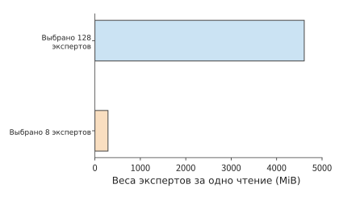
Рисунок 6-19. 64 токена, по восемь экспертов на токен, всего 512 назначений. При равномерном распределении и концентрированном выборе полезный объём вычислений одинаков, однако объём чтения весов выбранных экспертов различается в 16 раз. BF16-веса каждого эксперта занимают 36 MiB и считываются один раз на батч.
Чем меньше активных экспертов, тем для большего числа входных строк можно повторно использовать веса каждого эксперта. Это одновременно сокращает повторное чтение и увеличивает количество строк в матричном умножении. Однако время завершения зависит и от того, на какой карте выполняются эти строки. В схеме TP2×EP4 при равномерном распределении каждая группа обрабатывает \(32\times4=128\) назначений. Если все восемь активных экспертов находятся в одной группе экспертов, эта группа должна выполнить все 512 назначений — в четыре раза больше, чем при равномерном распределении, — а остальные три группы могут только ждать.
Поэтому для анализа времени выполнения необходимо одновременно вычислять объём чтения весов для всего батча и объём вычислений наиболее загруженной группы экспертов. Небольшие матричные операции decode чаще ограничены скоростью чтения весов, тогда как крупные матричные операции prefill чаще ограничены временем вычислений наиболее загруженной группы экспертов. Распределение популярных экспертов между разными группами EP позволяет сохранить повторное использование внутри батча и одновременно снизить вычислительную нагрузку на отдельную группу экспертов.
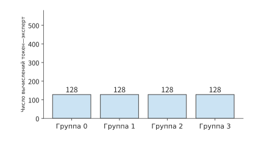
Рисунок 6-20. При равномерном использовании 128 экспертов каждая из четырёх групп EP выполняет 128 вычислений «токен — эксперт», а общий объём чтения весов составляет 4,5 GiB.
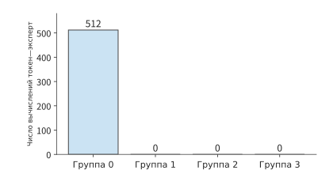
Рисунок 6-21. Все восемь выбранных экспертов находятся в группе 0: объём чтения весов снижается до 288 MiB, однако все 512 вычислений приходятся на одну группу.
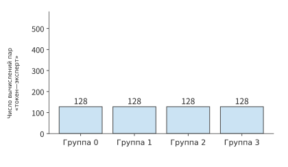
Рисунок 6-22. Распределение тех же восьми экспертов между четырьмя группами сохраняет объём чтения на уровне 288 MiB, при этом каждая группа выполняет 128 вычислений. Диапазон вертикальной оси одинаков на всех трёх рисунках.
В двух последних схемах на рисунках считывается одинаковый объём весов, однако время завершения может различаться, поскольку в вычислениях участвует разное количество карт. Поэтому повторное использование внутри батча следует анализировать совместно с распределением экспертов между картами.
Помимо случаев равномерного покрытия и концентрированного выбора можно вычислить средний результат при равномерном случайном выборе экспертов. Пусть каждый токен выбирает \(k\) экспертов из \(E\), а выборы разных токенов независимы. Вероятность того, что один токен не выберет некоторого эксперта, равна \(1-k/E\), а вероятность того, что этот эксперт не будет выбран ни одним из \(m\) токенов батча, равна \((1-k/E)^m\). Для каждого эксперта определим индикаторную переменную: она равна 1, если эксперт выбран внутри батча, и 0 в противном случае. Суммирование этих переменных с последующим вычислением математического ожидания даёт ожидаемое количество выбранных в батче экспертов:
При \(E=128,k=8,m=8\) ожидается около 52 активных экспертов, а идеальный объём чтения составляет приблизительно 1,8 GiB. Если все восемь токенов выбирают одних и тех же восемь экспертов, по-прежнему считывается только 288 MiB. С увеличением батча количество выбранных экспертов постепенно приближается к общему количеству экспертов, и дальнейшее увеличение числа входных строк главным образом повышает степень повторного использования каждого набора весов.7
Фактические результаты маршрутизации совместно определяются входными данными и моделью. Записи маршрутизации DeepSeek V4-Flash из сопроводительных материалов охватывают четыре входа и 43 слоя и содержат в общей сложности около 1,31 миллиона выборов экспертов. Частоты выбора разных экспертов различаются. Если преобразовать количество полученных каждым экспертом токенов в количество строк матрицы, а затем просуммировать значения по набору экспертов на каждой карте, по этим записям можно получить распределение вычислительной нагрузки между картами. Послойная тепловая карта приведена в сопроводительных материалах.8
6.3.3 От сотен миллиардов до триллионов параметров: как меняются комбинации параллелизма¶
Анализ повторного использования и нагрузки в разделе 6.3.2 основан на предположении, что весь набор экспертов уже помещается в память ускорителей. При дальнейшем увеличении модели сначала необходимо повторно проверить общую ёмкость памяти, а затем решить, как комбинировать TP, PP и EP. Все BF16-веса Qwen3-235B-A22B занимают около 470 GB, если каждый параметр учитывать только один раз. DeepSeek V4-Flash содержит около 284B параметров, что в том же формате соответствует примерно 568 GB. Восемь H100 в одном HGX H100 располагают в общей сложности 640 GB памяти, поэтому для состояния и рабочего пространства остаётся уже немного места. Каждый слой DeepSeek V4-Flash содержит 256 маршрутизируемых экспертов, из которых каждый токен выбирает шесть; кроме того, выполняются общие эксперты. Поскольку набор экспертов больше, при размещении весов необходимо одновременно учитывать общих и маршрутизируемых экспертов.2
DeepSeek V4-Pro содержит около 1,6T параметров, и даже при половине байта на параметр веса занимают приблизительно 800 GB. Для примерно 2,8T параметров Kimi K3 требуется около 1,4 TB. Требования этих моделей к памяти уже превышают общую ёмкость одного HGX H100. Увеличение количества групп EP позволяет распределить экспертов между большим количеством карт. Увеличение числа карт TP внутри эксперта уменьшает объём матриц экспертов, сохраняемый на каждой карте. Увеличение количества этапов PP сокращает количество слоёв модели, хранящихся на каждом этапе.
Представление входных данных экспертов также влияет на объём обмена между картами. Маршрутизируемые эксперты Kimi K3 работают в латентном пространстве размерностью 3584, тогда как скрытый вектор основной части модели имеет размерность 7168. Если сначала выполнить проекцию, а затем отправку, размер BF16-вектора уменьшается с 14 KiB до 7 KiB. Если сначала отправить данные, а затем выполнить проекцию, передаваться будет вход без уменьшения размерности. При одинаковых вычислениях экспертов размещение проекции до отправки или после получения определяет размерность вектора, передаваемого между картами. На каждом слое модель выбирает 16 из 896 маршрутизируемых экспертов. Кроме того, присутствуют два общих эксперта, обрабатывающих полный вектор основной части модели; эти виды экспертов выполняют разные вычисления. Из 93 слоёв 69 слоёв KDA рекуррентно агрегируют контекст с помощью матрицы фиксированного размера, а 24 слоя MLA сохраняют контекст в низкоразмерном представлении. Требования к памяти для состояния KDA главным образом определяются его фиксированной размерностью, тогда как требования к памяти для состояния MLA дополнительно растут вместе с контекстом сеанса.2
Таким образом, изменения модели влияют на проектирование системы с двух сторон: увеличение количества весов повышает необходимую общую ёмкость памяти, а различия в графе вычислений изменяют состав данных, которыми необходимо обмениваться. Первое определяет минимальный объём необходимых ресурсов, а второе — способ их соединения.
Эксперимент 6-3 · Основной: как назначение и размещение экспертов изменяют нагрузку карт и объём обмена данными
(a) По рисунку 6-16 запишите последовательность отправки входа токена A, двух выполнений экспертов и взвешенного объединения.
(b) Повторно рассчитайте два варианта назначения экспертов для 64 токенов, определив объём чтения весов и количество задач наиболее загруженной группы EP.
(c) Равномерно распределите восемь популярных экспертов между четырьмя группами EP, сравните общий объём чтения и вычислительную нагрузку наиболее загруженной группы экспертов и объясните источник изменений.
(d) Используя таблицу TP2×EP4 из этого раздела, вычислите объём KV, который должна хранить каждая карта при длине контекста 8192 и 16384, и выведите объём отправки для трёх объединений результатов.
(e) Усложнённое задание: для DeepSeek V4-Flash, DeepSeek V4-Pro или Kimi K3 выберите конкретный формат хранения и по отдельности разместите маршрутизируемых экспертов, общих экспертов, состояние внимания и рабочее пространство.
6.4 Реализация коллективных коммуникаций и стоимость их выполнения¶
6.4.1 Определение требований к коммуникации по способу разбиения модели¶
В разделе 6.2 были определены такие операции коллективной коммуникации, как AllReduce и All-to-All; в этом разделе рассматриваются их реализация и стоимость выполнения. Сначала рассмотрим, как четыре карты могут свести четырёхэлементный вектор. Каждая карта содержит локальный вклад в четыре элемента, а цель состоит в том, чтобы каждая карта получила полную поэлементную сумму. Это можно сделать в два этапа: сначала выполнить суммирование так, чтобы на карте 0 осталась полная сумма элемента 0, на карте 1 — полная сумма элемента 1 и так далее; затем обменяться этими уже просуммированными элементами, чтобы все четыре карты получили полный вектор.
Первый этап — это ReduceScatter, второй — AllGather; вместе они выполняют одну операцию AllReduce. Эти два этапа изменяют соответственно значения и расположение значений. Плотным моделям и MoE также требуется объединять сегменты и отправлять входные данные экспертов на разные карты. По тому, какими данными располагает каждая карта в начале и в конце коммуникации, можно выделить следующие четыре операции коллективной коммуникации.
| Операция | Что находится на каждой карте в начале | Что находится на каждой карте после завершения | Назначение |
|---|---|---|---|
| AllReduce | Частичные результаты одного тензора | Полный результат редукции | Частичные суммы TP, градиенты обучения |
| ReduceScatter | Частичные результаты одного тензора | Разные сегменты результата редукции | Сегментированный вывод, сегменты градиентов |
| AllGather | Разные сегменты одного тензора | Полный объединённый результат | Восстановление полного входа |
| All-to-All | Данные для разных получателей | Данные, отправленные этой карте всеми исходными картами | Dispatch входов экспертов и возврат результатов |
Broadcast (широковещательная рассылка) отправляет данные одной указанной карты всей группе, а Reduce (редукция) передаёт результат редукции только одной указанной карте; в отличие от операций в таблице, обе они не оставляют результат у всей группы. AllGather объединяет данные по rank (номеру каждой карты внутри коммуникационной группы), не выполняя суммирование; All-to-All перераспределяет данные по получателям и также не объединяет автоматически выходы экспертов с учётом весов маршрутизации. Поэтому combine в MoE включает три этапа: возврат результатов, восстановление порядка токенов и суммирование с учётом весов маршрутизации. Нельзя считать его AllReduce только на основании названия.30
Название операции определяет, что вычисляется и на каких картах размещается результат, а конкретный алгоритм — на сколько раундов делятся данные и как они передаются. В следующем подразделе прослеживается передача одного блока по кольцу.
Алгоритм определяет продолжительность самого обмена, а момент запуска коммуникации каждой картой — длительность ожидания каждой карты: группа может начать обмен только после запуска последней картой, а карты, пришедшие раньше, ожидают, пока она завершит предшествующие вычисления. Поэтому чем сильнее различаются моменты запуска, тем меньше выигрыш от ускорения самого обмена. В разделе 7.6.1 это сравнение подробно разбирается на одном наборе данных.10
6.4.2 Кольцо, дерево и раунды коммуникации¶
Кольцевой AllReduce выстраивает участвующие карты в ориентированное кольцо. В каждом раунде каждая карта отправляет один блок следующей карте и получает блок от предыдущей. Пусть число участвующих карт равно \(n\), а полный объём частичных сумм на каждой карте — \(M\) байт. Разделим его на \(n\) блоков по \(M/n\) каждый.
Рассмотрим кольцо из четырёх карт 0→1→2→3→0. Изначально каждая карта содержит локальные вклады в блоки 0, 1, 2 и 3. В первом раунде карта \(r\) отправляет блок \(r\); получатель складывает полученный блок со своим соответствующим вкладом. Во втором раунде пересылается только что сформированная частичная сумма, а в третьем пересылка продолжается с добавлением последнего вклада.
Проследим за блоком 0: он отправляется с карты 0, проходит через карты 1 и 2 и в итоге попадает на карту 3. Если вклады четырёх карт в один из элементов блока 0 равны 1, 10, 100 и 1000, то по пути значение последовательно принимает значения 1, 11, 111 и 1111. После третьего раунда карта 3 содержит полную сумму блока 0; одновременно карты 0, 1 и 2 содержат полные суммы блоков 1, 2 и 3 соответственно.
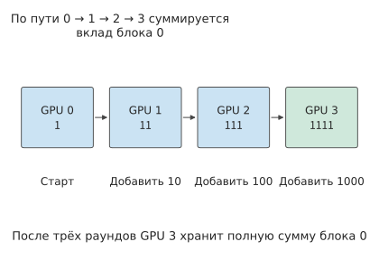
Рисунок 6-23. Отслеживается только один элемент блока 0: при прохождении каждой карты к нему добавляется вклад этой карты. После трёх раундов получается 1111, сохранённое на карте 3. Остальные три блока одновременно продвигаются по кольцу.
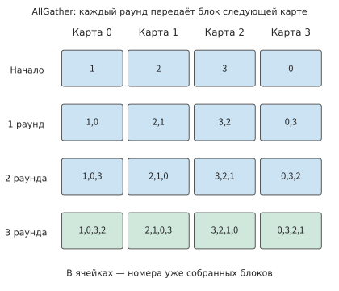
Рисунок 6-24. После завершения ReduceScatter карты 0, 1, 2 и 3 содержат блоки 1, 2, 3 и 0 соответственно. Затем в каждом раунде пересылается один блок; через три раунда каждая карта содержит все четыре блока с полными результатами.
Трёх раундов достаточно, поскольку блок уже содержит один вклад с начальной карты, а после прохождения остальных трёх карт — все четыре вклада. В общем случае ReduceScatter требует \(n-1\) раундов. Затем каждая карта пересылает завершённый ею блок следующей карте, получая в каждом раунде ещё один блок; ещё через \(n-1\) раундов каждая карта собирает все блоки. Поэтому общий объём отправки с каждой карты равен \(2(n-1)M/n\), а общее число раундов — \(2(n-1)\).
Обозначим фиксированные накладные расходы каждого раунда через \(\alpha\), эффективную пропускную способность каждого ориентированного ребра — через \(B\) и предположим, что каждая карта переходит к следующему раунду только после завершения отправки в текущем. Тогда модель времени имеет вид
Первое слагаемое растёт с числом карт, а второе постепенно приближается к \(2M/B\). Кольцевой алгоритм делит большие данные на небольшие блоки, позволяя картам передавать их одновременно; при малом объёме данных основную долю времени, наоборот, занимают запуски отдельных раундов.
Пример: насколько увеличение числа карт TP всё ещё ускоряет выполнение с учётом коммуникации редукции? Снова рассмотрим сеанс Qwen3-32B длиной 128K. Входом каждой редукции служит BF16-вектор скрытого состояния одного токена, \(M=10\) KiB; в HGX H100 пропускная способность каждой карты через NVSwitch в каждом направлении равна \(B=450\) GB/s; фиксированные накладные расходы раунда \(\alpha\) примем равными измеренной в статье о MSCCL++ односторонней задержке NVLink 0,822 μs на таком же восьмикарточном сервере H100. Найдём время одной редукции и время по формуле (6-5) для TP2, TP4 и TP8.
Решение: для TP8 требуется четырнадцать раундов, суммарные накладные расходы запуска равны 11,51 μs, каждая карта отправляет 17,5 KiB, передача занимает около 0,04 μs, а одна операция — около 11,55 μs. Для остальных конфигураций аналогично подставим значения в формулу (6-9). Строка TP1 приведена только для сравнения: одна карта не способна вместить даже один сеанс длиной 128K.
| Число карт TP | Локальный доступ к памяти | 128 редукций | Время шага |
|---|---|---|---|
| 1 | 29,35 ms | 0 | 29,35 ms |
| 2 | 14,68 ms | 0,21 ms | 14,89 ms |
| 4 | 7,34 ms | 0,64 ms | 7,97 ms |
| 8 | 3,67 ms | 1,48 ms | 5,15 ms |
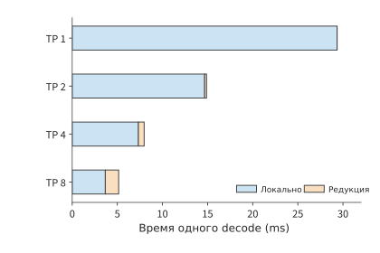
Рисунок 6-25. Время одного шага, рассчитанное по формуле (6-5) и модели кольцевой редукции. Время локального доступа к памяти уменьшается с ростом числа карт, а время редукции увеличивается; полная длина столбца соответствует времени выполнения одного шага. Локальная составляющая включает чтение весов и KV, а составляющая редукции — коллективную коммуникацию между картами.
На рисунке синяя часть сокращается с увеличением числа карт, а оранжевая постепенно растёт. При переходе от двух карт к четырём время локального доступа к памяти уменьшается примерно на 7,34 ms, а коммуникация увеличивается приблизительно на 0,42 ms, что даёт чистую экономию около 6,92 ms. При переходе от четырёх карт к восьми время локального доступа к памяти уменьшается ещё лишь примерно на 3,67 ms, а коммуникация увеличивается примерно на 0,84 ms, поэтому чистая экономия снижается приблизительно до 2,83 ms. Левая и правая части формулы (6-6) постепенно сближаются, но восемь карт всё ещё работают быстрее.
Повышение пропускной способности здесь почти ничего не даёт. При одной редукции на восьми картах 11,51 μs приходится на запуск; даже если время передачи снизить до нуля, всё равно придётся ждать завершения этих четырнадцати раундов. Удвоение пропускной способности экономит за весь шаг лишь около 2,5 μs, тогда как сокращение фиксированных накладных расходов каждого раунда вдвое позволяет сэкономить около 0,74 ms на 128 редукциях.9
Древовидный алгоритм сокращает число раундов. Четыре карты сначала выполняют попарную редукцию, после чего корневой узел объединяет результаты — для редукции требуется два раунда; широковещательная рассылка занимает ещё два раунда, итого четыре. Когда \(n\) является степенью двойки, несегментированное биномиальное дерево выполняет \(2\log_2n\) раундов, причём в каждом раунде на критическом пути передаётся полный тензор:
Для восьми карт и 10 KiB время составляет около 5,07 μs, что меньше 11,55 μs у кольцевого алгоритма. Если объём данных увеличить до 80 MiB, соответствующих 8192 токенам, кольцевому алгоритму потребуется около 0,34 ms, а древовидному — около 1,12 ms: экономия времени за счёт меньшего числа раундов не компенсирует время, добавленное многократной передачей полного большого тензора по критическому пути. Если приравнять две формулы, точка пересечения будет находиться примерно на 680 KiB; после превышения этого значения более быстрым становится другой алгоритм.
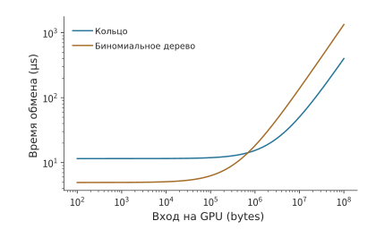
Рисунок 6-26. Модели времени для кольцевого алгоритма на восьми картах и несегментированного биномиального дерева при 0,822 μs на раунд и 450 GB/s в каждом направлении. Точка пересечения находится примерно на 680 KiB; вход decode размером 10 KiB расположен в области преимущественного влияния накладных расходов запуска, а вход prefill размером 80 MiB — в области преимущественного влияния времени передачи данных.
Эксперимент 6-4 · Расширение: при каком объёме данных кольцевая редукция становится быстрее древовидной?
(a) Следуя правилам отправки на рисунке 6-23, проследите три раунда редукции блока 1 и укажите, какая карта содержит этот блок после каждого раунда и вклады каких карт уже были в нём накоплены.
(b) Найдите объём данных, отправляемых каждой картой при кольцевой редукции на четырёх и восьми картах, а затем выведите время древовидной редукции для того же объёма данных.
(c) Найдите объём данных, при котором в восьмикарточной конфигурации времена двух алгоритмов редукции равны; повторите расчёт после уменьшения \(\alpha\) вдвое и объясните, почему изменяется объём данных, при котором времена алгоритмов совпадают.
(d) Подставьте время древовидной редукции 10 KiB данных в рассматриваемый в этой главе пример Qwen3-32B, найдите время одного шага на восьми картах и сравните выигрыш от выбора алгоритма с выигрышем от удвоения пропускной способности.
6.4.3 Конкуренция библиотеки коммуникации и вычислений за ресурсы¶
Кольцевой и древовидный алгоритмы должны фактически выполняться программным обеспечением на каждой карте. Библиотека коммуникации — это программное обеспечение, реализующее операции коллективной коммуникации, например NVIDIA Collective Communications Library (NCCL). Соответствующая реализация для Ascend — Huawei Collective Communication Library (HCCL). Приложение сначала создаёт коммуникационную группу (communicator), назначает каждой карте внутри группы свой rank, а затем отправляет операцию, указывая буфер, количество элементов, тип данных, операцию редукции и CUDA stream, в котором она должна выполняться. Вызовы на всех картах группы должны соответствовать друг другу согласно требованиям интерфейса, включая порядок вызовов и объём данных; возврат из вызова обычно означает лишь, что операция отправлена в stream, но не что ещё участвующий в передаче буфер уже можно использовать повторно. Сторона, использующая результат, должна дождаться его посредством порядка операций в том же stream или явной зависимости от event. Коллективную коммуникацию также нельзя использовать как глобальную точку синхронизации, доступную произвольному коду на хосте.
В MoE число токенов, отправляемых между каждой парой карт при dispatch, меняется в зависимости от batch. Равномерный All-to-All не может выразить такой обмен с разными объёмами, поэтому среда выполнения должна самостоятельно организовать счётчики, смещения, упаковку и пространство приёма. NCCL позволяет выразить обмен между любыми двумя картами с помощью сгруппированных двухточечных операций Send/Recv (отправки/приёма); каждой отправке должен соответствовать приём, а коммуникации, которые должны продвигаться совместно, необходимо помещать в одну группу, иначе они будут последовательно ожидать операций, ещё не запущенных другой стороной. Специализированные библиотеки коммуникации для экспертного параллелизма дополнительно используют сведения о маршрутизации при реализации dispatch и combine. Независимо от выбранной реализации необходимо фиксировать версию библиотеки и конкретный интерфейс; тест All-to-All с фиксированным размером нельзя считать измерением реальной коммуникации MoE.30
При измерении NCCL также нужно различать два сообщаемых ею вида пропускной способности: algbw — объём данных, определённый тестом, делённый на время, а busbw пересчитывается с учётом фактического объёма передачи коллективной операции. Для AllReduce на \(n\) картах при входе объёмом \(M\) на каждой карте \(\mathrm{algbw}=M/T\), а \(\mathrm{busbw}=2(n-1)M/(nT)\). Например, в общедоступной записи, сохранённой в эксперименте 7-3, AllReduce с 16 rank на двух HGX H100 и 64 MiB на карту занял 466,1 μs: algbw составил 143,99 GB/s, а busbw — в 1,875 раза больше, то есть 269,98 GB/s. busbw — нормализованный показатель, его нельзя напрямую считать фактической пропускной способностью каждой сетевой карты; иерархическую коммуникацию, редукцию внутри коммутатора и совместное использование каналов всё равно необходимо учитывать по отдельности согласно физическому пути, описанному в главе 7. При малом объёме данных следует смотреть на задержку, при большом — на устойчивую пропускную способность, а в контексте выполнения модели — на весь интервал от готовности данных до завершения их использования.30
При сравнении кольца и дерева в разделе 6.4.2 одна коммуникация рассматривалась как отдельная операция. На практике коммуникация часто перекрывается вычислениями другого micro-batch, и они конкурируют за ресурсы ускорителя. Для редукции требуется прочитать частичные суммы, выполнить сложение, записать результат и продвинуть коммуникацию. Эти действия занимают SM, HBM и межсоединение ускорителей; одновременно выполняемое матричное умножение также нуждается в этих ресурсах. Когда коммуникация и вычисления перекрываются, скорость, наблюдавшаяся при монопольном использовании ресурсов, изменяется.
Сопутствующий эксперимент 6-5 измеряет это влияние. В эксперименте Gloo — библиотека коллективной коммуникации с поддержкой сред выполнения, включая CPU, — выполняет AllReduce между четырьмя процессами CPU, одновременно с чем каждый процесс выполняет одно матричное умножение. Время обеих операций фиксируется как при раздельном, так и при одновременном выполнении; берётся медиана пяти серий:
| Объём данных редукции | Коммуникация отдельно | Вычисление отдельно | Коммуникация при одновременном выполнении | Вычисление при одновременном выполнении | Завершение всей группы при одновременном выполнении |
|---|---|---|---|---|---|
| 4 MiB | 2,67 ms | 11,53 ms | 6,14 ms | 11,52 ms | 11,58 ms |
| 64 MiB | 36,92 ms | 11,03 ms | 45,21 ms | 12,89 ms | 45,24 ms |
При 4 MiB одновременное выполнение коммуникации и матричного умножения замедляет коммуникацию более чем вдвое, однако она всё равно завершается раньше матричного умножения. Вся группа выполняется за 11,58 ms — почти столько же, сколько одно матричное умножение: коммуникация скрыта вычислениями. При 64 MiB время коммуникации увеличивается с 36,92 до 45,21 ms, а время матричного умножения — с 11,03 до 12,89 ms; раздельное выполнение занимает в сумме около 48,0 ms, а одновременное экономит лишь около 2,7 ms, а не все 11 ms матричного умножения. Для оценки перекрывающегося выполнения необходимо сравнивать время при одновременном запуске обеих операций, а не просто вычитать измеренные по отдельности времена.12
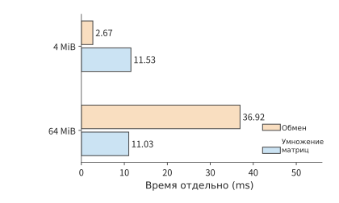
Рисунок 6-27. Время раздельного выполнения коммуникации и матричного умножения в эксперименте 6-5: четыре процесса CPU, медиана пяти серий. Коммуникация занимает около 2,67 ms для 4 MiB и около 36,92 ms для 64 MiB, а матричное умножение — около 11 ms.
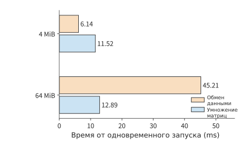
Рисунок 6-28. В том же эксперименте обе операции запускаются одновременно. Оранжевым показана коммуникация, синим — вычисление; последующая работа ожидает завершения обеих операций. Время коммуникации для 4 MiB увеличивается до 6,14 ms, но она по-прежнему скрыта вычислением; время коммуникации для 64 MiB возрастает до 45,21 ms, а вычисления — до 12,89 ms.
Для GPU действует тот же принцип. Увеличение числа коммуникационных потоков и каналов может ускорить отдельно выполняемую передачу, но одновременно занимает исполнительные ресурсы, необходимые для вычислений. Поэтому выбор конфигурации только по пропускной способности отдельно запущенной коммуникации может замедлить выполнение в целом. По этой причине система автоматической оптимизации коллективной коммуникации AutoCCL во время обучения фиксирует фактическое время коммуникации, чтобы обратная связь учитывала помехи от параллельного выполнения; сначала она выбирает алгоритм, протокол и реализацию передачи, а затем подбирает потоки, каналы и разбиение на блоки. Согласно статье, при помехах от повторных вычислений пропускная способность AllGather выросла с 18,26 до 32,44 GB/s. Сам поиск и переключение также требуют времени: если поиск дополнительно занимает \(S\), а каждый последующий вызов экономит \(\Delta\), для окупаемости требуется не менее \(S/\Delta\) вызовов.11
6.4.4 Слияние коммуникаций, запуск ускорителем и специализированная разгрузка¶
Ускорение коммуникации само по себе не обязательно ускоряет выполнение в целом, поэтому следует различать два вида улучшений: сокращение числа запусков коммуникации и операций чтения и записи данных, а также снижение потребления вычислительных ресурсов коммуникацией. В восьмикарточном примере с Qwen3-32B накладные расходы запуска 128 редукций составляют около 1,47 ms. Эти расходы можно уменьшать на трёх разных уровнях: сколько работы выполняется за один запуск, кто его инициирует и кто выполняет перемещение и редукцию.
Слияние позволяет выполнять смежные операции последовательно внутри одного ядра. Например, если после редукции требуется прибавить остаточную связь и выполнить RMSNorm, раздельное выполнение приводит к записи результата в память, его повторному чтению и нескольким запускам; после слияния обработку можно продолжить, пока данные всё ещё находятся рядом с вычислительными блоками. Нормализацию необходимо выполнять только после того, как редукция сформирует полный вход: если пренебречь малой константой epsilon для предотвращения деления на ноль и обучаемым коэффициентом масштабирования, то \(\operatorname{RMSNorm}([1,0]+[0,1])=[1,1]\), тогда как раздельная нормализация с последующим сложением даёт \([\sqrt2,\sqrt2]\). Чтобы получить тот же результат вычисления, слияние должно сохранять этот порядок выполнения.
Запуск ускорителем устраняет обмен между отправкой с хоста и выполнением на ускорителе: вычислившее данные ядро может напрямую запустить последующую коммуникацию, сократив ожидание между завершением вычислений и началом коммуникации. Специализированная разгрузка передаёт перемещение, редукцию или синхронизацию движку копирования, коммуникационному процессору либо логике внутри коммутатора, освобождая универсальные вычислительные блоки для матричных вычислений.
Коллективный коммуникационный блок Ascend (CCU) сосредоточивает перемещение, редукцию, синхронизацию и обработку завершения в коммуникационном блоке; в некоторых путях NCCL для перемещения данных используются внутрисерверный движок копирования (Copy Engine) и межсерверный прокси-поток CPU — поток хоста, отправляющий запросы сетевой карте от имени GPU. Эти механизмы меняют исполнителя такой работы. Если вычисления замедляются из-за конкуренции со связью за SM, освобождение SM сокращает время вычислений; если узким местом служит общий сетевой выход, объём передаваемых через него данных не уменьшается.2111
Сторона, запускающая коммуникационный запрос, определяет, сколько раз управляющий путь пересечёт PCIe и чьи ядра будут заняты. На рисунке 6-29 сравниваются три варианта размещения. Прокси-поток CPU: после вычисления данных GPU записывает в память хоста флаг готовности; поток CPU обнаруживает его при опросе, формирует дескриптор запроса — запись, описывающую одну передачу, — и звонит в «дверной звонок» сетевой карты, то есть записывает в один из её регистров, уведомляя о новом запросе; затем сетевая карта считывает дескриптор запроса из памяти хоста. Запись о завершении также помещается в память хоста, после чего CPU уведомляет GPU. Управляющий путь пересекает PCIe три раза, и каждое пересечение занимает сотни наносекунд; число запросов, которые один поток CPU способен обрабатывать за секунду, также ограничено, поэтому множество мелких запросов образует здесь очередь. SM GPU: GPU напрямую формирует дескриптор запроса в собственной памяти и звонит в «дверной звонок»; сетевая карта считывает дескриптор запроса из памяти GPU, а запись о завершении возвращается в память GPU, где её опрашивает SM. CPU исключается из критического пути, но управляющий путь по-прежнему дважды пересекает PCIe; цена этого решения — выделение части SM для формирования запросов и опроса завершения, из-за чего эти SM не могут одновременно выполнять матричные вычисления. NVIDIA GPUDirect Async и низкозадержечное ядро библиотеки коммуникации для экспертного параллелизма DeepEP используют именно этот путь. Процессор на сетевой карте: сетевые карты наподобие BlueField содержат многоядерный многопоточный процессор тракта данных, поэтому формирование дескриптора запроса, звонок в «дверной звонок» и получение дескриптора могут выполняться внутри сетевой карты, а хосту достаточно один раз запустить пакет операций; управляющий путь больше не пересекает PCIe и не занимает ядра SM и CPU. При всех трёх вариантах полезная нагрузка на стороне инициатора перемещается из памяти GPU, а запись о завершении возвращается в память GPU, по одному разу пересекая PCIe; эти две операции не зависят от места запуска. Сетевая карта другой стороны при чтении и записи памяти своего хоста должна ещё раз пересечь PCIe уже на той стороне. Поэтому выбор заключается в том, кто предоставляет ядра, какова длина управляющего пути и сколько запросов можно запустить в секунду. В разделе 7.3.3 будет просуммировано время каждого пересечения, а в разделе 7.3.4 скорость запуска будет включена в модель пропускной способности.29
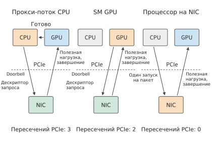
Рисунок 6-29. Три варианта размещения инициатора. Оранжевым обозначен компонент, формирующий дескриптор запроса; пунктиром — границы PCIe. Управляющий путь прокси-потока CPU пересекает PCIe три раза, при запуске с GPU — два раза, а при запуске процессором сетевой карты — ни разу; полезная нагрузка инициатора и запись о завершении во всех трёх вариантах пересекают PCIe по одному разу.
Вернёмся к 128 редукциям малого объёма, рассмотренным в начале раздела. Фреймворк выбирает реализацию коммуникации в зависимости от объёма данных и способа соединения. Когда Qwen3-32B обрабатывает за раз 1, 4 или 16 токенов, вход редукции составляет соответственно 10, 40 или 160 KiB; такие фреймворки, как vLLM, могут выбирать для этих малых объёмов специализированную реализацию. Таким образом, у \(T_{\mathrm{AR}}\) в формуле (6-5) есть два направления улучшения: уменьшение числа раундов алгоритма или сокращение программных и исполнительных накладных расходов каждого раунда.10
Эксперимент 6-5 · Расширение: сколько времени экономит оптимизация коммуникации и когда окупаются затраты на подготовку?
(a) По измеренным значениям на рисунках 6-27 и 6-28 найдите, сколько времени одновременное выполнение экономит по сравнению с раздельным для 4 MiB и 64 MiB, и укажите, что в каждом случае определяет общее время завершения: вычисление или коммуникация.
(b) Пусть одна оптимизация требует дополнительного времени \(S\) на поиск и переключение, после чего каждый вызов экономит \(\Delta\). Запишите минимальное число вызовов, после которого накопленная экономия впервые превысит \(S\); используя измеренный выигрыш от перекрытия для 64 MiB в качестве \(\Delta\), найдите это число при \(S=1\) s.
(c) На примере двух векторов по два элемента сравните результат выполнения RMSNorm после редукции с результатом редукции после раздельного выполнения RMSNorm и определите, можно ли менять эти операции местами.
(d) Дополнительное задание для ускорителя: сравните монопольное и параллельное выполнение для одной и той же формы, зафиксируйте события готовности, начала и завершения и объясните, какой интервал изменился сильнее всего после совместного использования ресурсов.
6.5 Физическая организация суперузлов¶
6.5.1 Прямые соединения, коммутация и многоуровневые топологии¶
Алгоритмы и библиотеки связи из раздела 6.4 определяют, кто, кому и сколько отправляет на каждом раунде, но не рассматривают, через какие физические соединения проходят данные. Коллективный алгоритм задаёт логических отправителей и получателей, а физическая топология определяет, через какие устройства и каналы фактически проходят данные. Две карты могут быть соединены напрямую либо передавать данные через коммутатор, другие карты или память хоста. Если несколько передач используют один интерфейс, они вынуждены делить его пропускную способность по очереди.
Пример: станет ли TP16 быстрее TP8, если добавить ещё один сервер? Два HGX H100 содержат в общей сложности 16 карт, а серверы соединены через отдельный сетевой адаптер ConnectX-7 каждой карты. Если перевести один сеанс Qwen3-32B с контекстом 128K на TP16, одна группа тензорного параллелизма охватит два сервера, и AllReduce на каждом слое будет проходить через сеть.
Решение: для доступа к локальной памяти объём весов на карту снова уменьшается вдвое, но у Qwen3-32B всего 8 KV-голов. При TP16 каждая KV-голова хранится по одной копии на двух картах, поэтому каждая карта считывает столько же KV-данных, сколько при TP8, а локальное время сокращается лишь с 3,67 до 2,48 мс. Что касается связи: если выстроить 16 карт в кольцо, на каждом раунде придётся ждать прохождения участка через сетевой адаптер. В статье о MSCCL++ для той же платформы измерена односторонняя задержка InfiniBand, то есть используемой между серверами коммутируемой сети с низкой задержкой, равная 3,76 мкс; одно сокращение требует 30 раундов, то есть около 113 мкс. Реальная библиотека связи так работать не будет. Сохранённая в эксперименте 7-3 общедоступная запись nccl-tests, программы тестирования производительности коллективных операций NCCL, относится как раз к AllReduce на двух HGX H100 с 16 rank. Для сообщения размером 10 KiB берётся строка записи для 16 KiB; измеренное значение составляет 32,74 мкс:
TP8 внутри одного сервера занимает 5,15 мс, поэтому TP16, наоборот, медленнее примерно на 1,52 мс. Дополнительные карты уменьшают объём чтения весов каждой картой, но взамен требуют более дорогой синхронизации между серверами. Даже с многоуровневым алгоритмом реальной библиотеки связи каждое сокращение по-прежнему занимает около 33 мкс — почти втрое больше, чем кольцевое сокращение внутри сервера, занимающее 11,55 мкс.
Чтобы большее число карт могло эффективно работать совместно, необходимы достаточное количество портов и достаточная коммутационная ёмкость. Если карта напрямую соединена со всеми остальными \(N-1\) картами, ей требуется \(N-1\) соединений. Коммутатор объединяет соединения: сначала карты подключаются к коммутационному уровню, который затем пересылает данные получателю. Число портов коммутационной микросхемы называется радиксом (radix).
Рассмотрим NVSwitch третьего поколения, используемый в HGX H100. Одна микросхема имеет 64 порта NVLink 4, каждый с пропускной способностью 25 GB/s в каждом направлении. Если использовать её как коммутатор уровня leaf: 32 порта подключить вниз к GPU, а остальные 32 — вверх к коммутаторам уровня spine, то совокупная пропускная способность со стороны GPU и совокупная пропускная способность восходящих соединений составят по 800 GB/s. Если выделить 48 нисходящих и 16 восходящих портов, число подключённых линий GPU возрастёт, но все они вместе смогут передавать вверх не более 400 GB/s — лишь треть совокупной пропускной способности нисходящих соединений. При неизменном общем числе портов подключение большего числа GPU оставляет меньше восходящих портов и меньшую пропускную способность восходящих соединений. В NVLink Switch System для DGX H100, готовой системы NVIDIA на базе HGX H100, несколько серверов подключаются к одной коммутируемой сети NVLink, и там применяется именно такой компромисс: за пределы каждого узла выводится лишь половина всей пропускной способности NVLink, то есть используется сужение 2:1.38
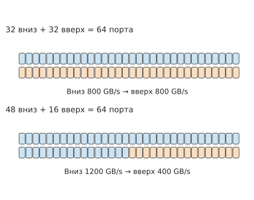
Рис. 6-30. Два варианта распределения портов одной 64-портовой NVSwitch; каждый порт обеспечивает 25 GB/s в каждом направлении. Восходящие линии служат общим выходом для всего трафика между коммутаторами. Распределение 32/32 обеспечивает 800 GB/s восходящей пропускной способности, а 48/16 — только 400 GB/s. Число ячеек на цветных полосах соответствует числу портов.
Расширим коммутационный уровень за пределы одной микросхемы: четыре коммутационные микросхемы уровня leaf имеют по 32 нисходящих порта, всего 128 нисходящих портов. К ним добавляются 32 коммутационные микросхемы уровня spine, каждая из которых соединена одной линией с каждой из четырёх микросхем уровня leaf; таким образом, все 32 восходящих соединения каждой микросхемы уровня leaf полностью задействованы. Если разделить систему на две части, совокупность всех соединяющих их линий называется разрезом. Если на некотором этапе \(V_{A\to B}\) байт должны пройти через разрез со стороны A на сторону B, а совокупная пропускная способность разреза в этом направлении равна \(B_{A\to B}\), передача займёт не менее \(V_{A\to B}/B_{A\to B}\). Распределение портов коммутатора определяет совокупную пропускную способность разреза.
Число портов определяет общее количество линий, а маршрутизация — то, на каких линиях концентрируются данные. Даже если все карты отправляют одинаковый объём данных, разные маршруты создают разные узкие места. Соединим 16 карт в двунаправленное физическое кольцо и рассмотрим первые три раунда ReduceScatter для входных данных размером 8 MiB. В рекурсивном алгоритме расстояние до партнёра удваивается на каждом раунде. Swing — алгоритм коллективной связи, разработанный для топологии тора; он распределяет нагрузку по линиям, меняя партнёра на каждом раунде. В обоих алгоритмах каждая карта на каждом раунде отправляет соответственно 4, 2 и 1 MiB, но получатели различаются:
| Первые три раунда | Рекурсивные маршруты | Маршруты Swing |
|---|---|---|
| Число физических переходов на передачу | 1, 2, 4 | 1, 1, 3 |
| Максимальный объём передачи по однонаправленной линии | 4, 4, 4 MiB | 4, 2, 2 MiB |
| Совокупный объём передачи по физическим линиям всей сети | 64, 64, 64 MiB | 64, 32, 48 MiB |
На третьем раунде данные рекурсивного алгоритма проходят четыре перехода, а самая загруженная линия одновременно переносит четыре порции по 1 MiB. Данные Swing проходят три перехода, а самая загруженная линия переносит лишь две порции. Если принять пропускную способность каждой линии ICI (межчипового соединения) TPU v4 равной 50 GB/s в каждом направлении, то время передачи первых трёх раундов, определяемое наиболее загруженной линией, составит соответственно около 252 и 168 мкс. Время передачи сократилось на треть благодаря уменьшению объёма данных на общих линиях.13
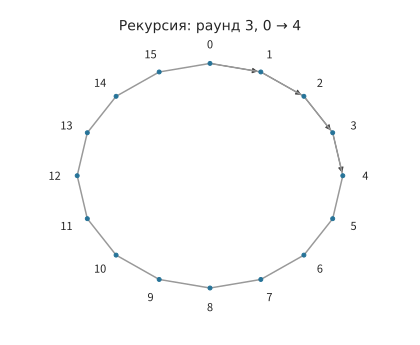
Рис. 6-31. На третьем раунде рекурсивного алгоритма карта 0 отправляет данные карте 4. Тонкие линии показывают физическое кольцо из 16 карт, а стрелками отмечены четыре проходимые линии.
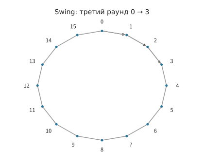
Рис. 6-32. На том же физическом кольце в третьем раунде Swing карта 0 отправляет данные карте 3 через три линии. Объём отправки каждой карты на этом раунде по-прежнему равен 1 MiB.
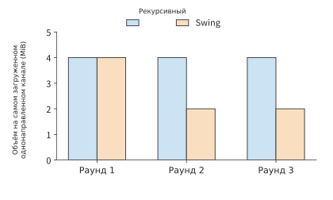
Рис. 6-33. Данные всех отправителей суммируются на каждой направленной линии, после чего для каждого раунда выбирается максимальное значение. В первых трёх раундах рекурсивного алгоритма оно равно 4 MiB, а для Swing — 4, 2 и 2 MiB.
Передача через память хоста — другая форма той же проблемы. Архитектура неоднородного доступа к памяти (NUMA) размещает память хоста рядом с разными CPU, а чтение через границу CPU проходит по интерфейсу между процессорами. Пусть карты 0 и 1 подключены к NUMA-узлу A, а карты 2 и 3 — к узлу B; при кольцевом сокращении четыре карты отправляют в общей сложности 48 MiB. Если разместить все промежуточные буферы в A, межпроцессорное соединение должно передать по 24 MiB в каждом направлении. Если разместить буферы рядом с отправляющими картами, а карты одного NUMA-узла расположить в кольце рядом, объём в каждом направлении снизится до 12 MiB. Если же изменить кольцо так, чтобы оно попеременно пересекало NUMA-узлы, объём снова возрастёт до 24 MiB в каждом направлении. Хост DGX H100 также имеет двухпроцессорную структуру: каждый из двух Xeon 8480C обслуживает свой NUMA-узел, между двумя CPU может быть до четырёх линий UPI (межпроцессорного соединения Intel) по 16 GT/s каждая, а каждая GPU подключается к хосту через PCIe Gen5 x16 с пропускной способностью 64 GB/s в каждом направлении. Во всех трёх вариантах каждая карта передаёт через PCIe в хост и обратно одинаковый объём данных, но объём данных, проходящих через UPI, изменяется в отношении 2:1:2, а вместе с ним меняется и время передачи между CPU. Положение буферов и порядок карт в кольце совместно определяют маршруты перемещения данных.14
Пример проектирования: тор с прямыми соединениями или коммутируемая сеть? В предыдущих примерах данные либо напрямую проходили по одной линии, либо шли через один коммутатор. При объединении 64 карт в один суперузел обычно выбирают один из двух подходов. Первый — напрямую соединить каждую карту с соседями: расположить 64 карты в кубе \(4\times4\times4\), подключить каждую карту к двум соседям вдоль каждого из трёх измерений и замкнуть начало и конец каждого измерения. Такая топология называется трёхмерным тором (torus). Тор — класс топологий, давно применяемый в суперкомпьютерах; его унаследовали TPU. Второй подход — подключить каждую карту только к коммутационным микросхемам, чтобы коммутационный уровень пересылал данные получателю. Этот подход применяется в NVL72 и CloudMatrix384. В обоих вариантах каждая карта имеет одинаковые шесть портов по 50 GB/s в каждом направлении — именно так сконфигурирован ICI каждой микросхемы TPU v4. Различие состоит в том, что на другом конце порта находится соседняя карта или коммутационная микросхема. На рис. 6-34 показан маршрут одной передачи при двух способах соединения.
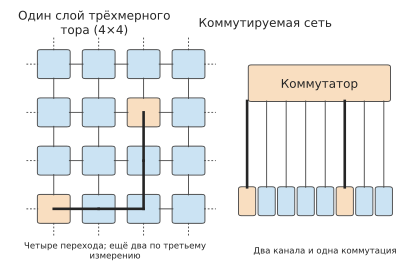
Рис. 6-34. Слева показан один слой трёхмерного тора: каждая карта напрямую соединена с четырьмя соседями, а пунктир показывает замыкание начала и конца каждого измерения. От угловой карты до центральной требуется четыре перехода, а с учётом третьего измерения — не более шести. Справа показана коммутируемая сеть: между любыми двумя картами находятся две линии и одна коммутация. Оранжевым обозначена наиболее удалённая пара карт, а толстыми линиями — маршрут передачи между ними.
Сначала сравним число переходов. В торе наиболее удалённые карты находятся друг от друга на расстоянии двух переходов в каждом измерении, всего шести по трём измерениям. В коммутируемой сети между любыми двумя картами находятся две линии и одна пересылка. Предположим, что прохождение данных через маршрутизатор микросхемы или коммутационную микросхему добавляет 200 нс. Это целевая задержка без нагрузки, заданная спецификацией открытого стандарта межсоединений ускорителей UALink 2.0 для коммутационной микросхемы со 128 lane, то есть последовательными каналами; временем распространения по линиям пренебрежём. Между наиболее удалёнными картами тора находятся 5 промежуточных микросхем, а в коммутируемой сети — лишь 1 коммутационная микросхема, поэтому каждая передача в торе занимает на 0,8 мкс больше. Разница для одной передачи невелика, но при decode на каждом слое выполняются два сокращения, то есть 128 операций для 64 слоёв Qwen3-32B. Если каждый раз приходится ждать наиболее удалённую карту, общее дополнительное ожидание в торе составляет около 0,10 мс — примерно 7% от полного времени сокращений для восьми карт TP, равного 1,48 мс. Когда число карт возрастает до \(8^3=512\), максимальное расстояние в торе достигает двенадцати переходов. В коммутируемой сети достаточно добавить ещё один уровень коммутации, и маршрут будет состоять из четырёх линий и трёх пересылок.
Теперь сравним паттерны трафика. Первый — сокращение вдоль измерений: AllReduce разбивается на кольцевые ReduceScatter и AllGather вдоль направлений x, y и z, причём на каждом шаге данные передаются только между соседними картами, а все шесть линий работают одновременно. В этом случае тор задействует всю пропускную способность портов каждой карты и работает так же быстро, как коммутируемая сеть. Именно так компилятор TPU сопоставляет группы параллелизма данных и модели с измерениями тора. Второй паттерн — равномерный All-to-All: каждая карта отправляет по одной порции каждой из остальных 63 карт; именно так работает dispatch в MoE. В торе каждая порция данных проходит в среднем три перехода, по одному на каждое измерение. Если каждая из 64 карт отправляет \(M\) байт, все линии в общей сложности должны перенести \(3\times64M\); при распределении по 384 направленным линиям на каждую приходится \(M/2\). В коммутируемой сети на каждый из шести портов карты приходится \(M/6\). При \(M=32\) MiB тору требуется не менее примерно 336 мкс, а коммутируемой сети — около 112 мкс, что даёт трёхкратную разницу. Для тора из 512 карт среднее число переходов равно шести, поэтому разница становится шестикратной. Оба паттерна сопоставлены на рис. 6-35.
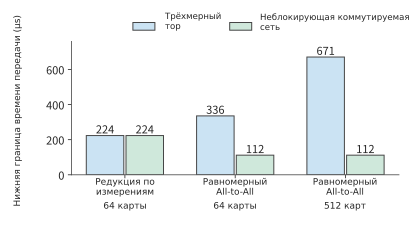
Рис. 6-35. Каждая карта имеет шесть портов по 50 GB/s и отправляет 32 MiB. При сокращении вдоль измерений обе топологии полностью задействуют пропускную способность портов. При равномерном All-to-All данные в торе проходят в среднем три перехода, из-за чего возрастает объём данных на общих линиях; при 512 картах среднее число переходов увеличивается до шести. На рисунке показана нижняя граница, определяемая нагрузкой на линии, без учёта накладных расходов запуска и очередей. Коммутируемая сеть считается неблокирующей, то есть коммутационный уровень не мешает всем портам одновременно принимать и передавать данные на полной скорости.
Наконец, сравним стоимость оборудования. Для тора из 64 карт требуется \(64\times6/2=192\) линии и не требуется ни одной коммутационной микросхемы, поскольку маршрутизатор встроен в каждую микросхему. Для коммутируемой сети нужны 384 линии и шесть 64-портовых коммутационных микросхем. Когда число карт превышает число портов одной коммутационной микросхемы, коммутируемой сети требуется ещё один уровень. В CloudMatrix384 для 384 NPU внутри каждого из 48 узлов установлено по 7 коммутационных микросхем первого уровня, которые соединены через 7 подплоскостей, содержащих по 16 коммутационных микросхем второго уровня. Всего используется 448 коммутационных микросхем, причём микросхемы второго уровня размещены в 4 коммуникационных стойках. В торе при любом масштабе каждой карте по-прежнему достаточно шести линий, но число переходов растёт вместе с масштабом, а приходящаяся на карту пропускная способность разреза уменьшается. Это будет рассчитано в разделе 6.5.4.
В совокупности три сравнения задают критерии выбора топологии: преобладают ли в нагрузке регулярные коллективные операции либо присутствует много небольших передач произвольным получателям и операций All-to-All; сколько карт должен охватывать домен совместной работы; готовы ли мы использовать коммутационные микросхемы и больше кабелей, чтобы расстояние между любыми двумя картами было одинаковым. В разделах 6.5.3–6.5.5 мы увидим, какой выбор по этим трём вопросам сделали NVIDIA, Google и Huawei.18
Эксперимент 6-6 · Продолжение: как топология связи и положение буферов влияют на время передачи
(a) Повторно рассчитайте время одного шага TP16 на двух HGX H100, а затем определите, до какого значения должно снизиться время одного AllReduce между серверами, чтобы время шага TP16 точно сравнялось со временем шага TP8 внутри одного сервера.
(b) Для 64-портовой NVSwitch сравните два варианта распределения нисходящих и восходящих портов: 32/32 и 48/16. Рассчитайте среднюю доступную пропускную способность каждой линии, когда все линии GPU одновременно передают данные вверх.
(c) По рис. 6-31 суммируйте объём данных третьего раунда, проходящий по одной направленной линии, и объясните различие между числом переходов и объёмом передачи по линии.
(d) В примере с NUMA сначала переместите буферы, а затем измените порядок кольца; отдельно изобразите появившиеся и исчезнувшие обращения через границу CPU.
(e) Замените в примере проектирования 64 карты на тор \(8\times8\times8\) и найдите максимальное число переходов, нагрузку на каждую направленную линию при равномерном All-to-All и число 64-портовых коммутационных микросхем, необходимое для двухуровневой неблокирующей коммутируемой сети. Объясните, какая из этих величин растёт быстрее всего при увеличении числа карт.
6.5.2 Среда соединения, электропитание и физический масштаб¶
В разделе 6.5.1 линии связи рассматривались как соединения с заданными пропускной способностью и задержкой. Однако для создания таких соединений в реальной системе необходимо также решить вопросы дальности передачи, прокладки кабелей и электропитания. При распространении низколатентного взаимодействия на бо́льшие расстояния должна меняться и среда соединения. На небольших расстояниях медные проводники могут непосредственно передавать высокоскоростные электрические сигналы. С увеличением расстояния усиливаются затухание сигнала и перекрёстные помехи, из-за чего приёмнику становится сложнее восстанавливать данные и тактовый сигнал, поэтому требуются более мощные схемы эквализации или ретайминга. Более толстые кабели и большее число соединений также занимают пространство в корпусах и кабельных трассах. При выборе среды соединения необходимо одновременно учитывать дальность передачи, потери сигнала и плотность кабельной разводки.
В оптических соединениях данные модулируют оптическую несущую, что подходит для передачи на бо́льшие расстояния, но одновременно увеличивает затраты на оптоэлектронное преобразование, электропитание компонентов и обслуживание. В подключаемых оптических модулях преобразование выполняется внутри заменяемого модуля, а совместно упакованная оптика (CPO) переносит оптический движок ближе к коммутационному или вычислительному чипу, сокращая высокоскоростной электрический тракт. Последний вариант повышает плотность соединений внутри корпуса, однако при совместной упаковке оптических компонентов с вычислительным или коммутационным чипом необходимо также совместно проектировать охлаждение, тестирование и замену компонентов. Среда соединения определяет стоимость реализации при заданных расстоянии и пропускной способности, а топология — то, как эти соединения образуют пути передачи данных.15
Возможности электропитания дополнительно ограничивают число устанавливаемых карт. Карты устанавливаются комплектами по числу карт в сервере. Пусть бюджет мощности системы равен \(P_b\), фиксированная мощность вспомогательного оборудования, такого как коммутаторы и хранилища, равна \(P_0\), в каждом сервере установлено \(g\) карт, а его мощность равна \(P_s\). Тогда
Предельная мощность системы DGX H100 с восемью H100, а также CPU, NVSwitch, сетевыми картами и вентиляторами составляет 10,2 кВт, то есть в среднем 1,275 кВт на карту. Предельная потребляемая мощность самой отдельной H100 SXM составляет 700 Вт, а остальная мощность приходится на вспомогательные компоненты сервера.39 Пусть бюджет мощности группы стоек составляет 120 кВт. Если в этом примере учитывать только серверы и принять \(P_0\) равным 0, можно установить не более 11 серверов, то есть 88 карт. Для 64 карт (8 серверов) требуется 81,6 кВт, для 72 карт (9 серверов) — 91,8 кВт, а для 96 карт (12 серверов) — 122,4 кВт, что превышает бюджет мощности. Конкретную конфигурацию вариантов с 64 и 72 картами необходимо дополнительно определить с учётом числа портов коммутаторов и доступного пространства для установки.
Охлаждение задаёт ещё один верхний предел. В стойках с воздушным охлаждением вентиляторы отводят тепло в воздух машинного зала. В техническом документе ASHRAE по жидкостному охлаждению указано, что стойке мощностью от 40 до 50 кВт требуется воздушный поток до 5 000 cfm (кубических футов в минуту), тогда как лучшие напольные вентиляционные решётки способны обеспечить лишь 1 900 cfm. В стойке мощностью 50 кВт сами вентиляторы потребляют не менее 5 кВт. В этом примере примем 40 кВт в качестве порога для стойки с воздушным охлаждением. В одну стойку можно установить не более трёх DGX H100, то есть 24 карты с общей мощностью 30,6 кВт. Четырём системам потребуется уже 40,8 кВт. В примере компоновки стоек из эталонной архитектуры DGX SuperPOD H100 мощность каждой стойки превышает 40 кВт. Если сосредоточить 64 карты мощностью 81,6 кВт или 72 карты мощностью 91,8 кВт в небольшом числе стоек, этот порог будет значительно превышен. Потребуется перейти на жидкостное охлаждение, передающее тепло непосредственно охлаждающей жидкости, а не воздуху машинного зала.16
Если один коммутационный блок способен подключить только 64 конечные точки, то для подключения 65-й карты может потребоваться полный дополнительный комплект коммутационного оборудования. При последовательном увеличении числа карт стоимость сопутствующего коммутационного оборудования растёт не плавно, а скачкообразно при пересечении подобных границ комплектных групп. После определения приблизительного диапазона по формуле (6-11) необходимо скомпоновать систему из таких единиц установки, как коммутаторы, лотки и стойки, и лишь затем можно получить конфигурацию, которую реально построить.
Эксперимент 6-7 · Дополнительное задание: как бюджет мощности и требования комплектного расширения ограничивают число ускорителей
(a) Отдельно пересчитайте общую мощность при установке 64, 72 и 96 карт. По формуле (6-11) определите максимальное число карт, которое можно установить при увеличении бюджета мощности до 150 кВт.
(b) Если после превышения 64 карт для коммутационного оборудования второго уровня необходимо зарезервировать 10,2 кВт, что соответствует мощности одного сервера, определите максимальное число карт при бюджете мощности 120 кВт.
(c) Используя бюджет мощности и условие о дополнительном коммутационном оборудовании из пункта (b), предположите, что расширение возможно только полными группами по четыре сервера (32 карты). Определите максимальное число устанавливаемых карт и объясните, почему верхние пределы в пунктах (a)–(c) различаются.
(d) Используя полученное ранее время обслуживания одного экземпляра, сравните обслуживающую способность двух из рассмотренных конфигураций ускорителей.
6.5.3 NVIDIA: от восьми GPU в сервере до серверной стойки¶
Порты, расстояние и мощность совместно ограничивают масштаб системы. В этих условиях несколько поколений систем NVIDIA развили межсоединение от прямых подключений внутри корпуса до коммутационной сети масштаба серверной стойки. В DGX-1 восемь GPU образуют гибридную кубическую ячеистую сеть NVLink: некоторые GPU соединены напрямую, а обмен данными между остальными требует промежуточной передачи. Размещение вычислительных задач с интенсивным обменом на соседних GPU позволяет снизить нагрузку на промежуточную передачу и общие каналы связи.
В DGX-2 используются 16 GPU V100 и NVSwitch. Коммутационная структура заменяет вопрос «соединена ли конкретная пара GPU напрямую» вопросом «сколько данных коммутационный уровень способен передавать одновременно», расширяя доступные возможности совместной работы. DGX A100 снова использует сервер с восемью GPU в качестве базового блока и оснащается NVLink/NVSwitch. Эти системы различаются количеством GPU и структурой межсоединений с учётом интерфейсов чипов, пространства в корпусе и требований приложений.17
GB200 NVL72 объединяет 72 GPU и 36 CPU Grace в системе NVLink масштаба серверной стойки. Благодаря этому большее число GPU внутри стойки может интенсивно обмениваться данными через NVLink. Вернёмся к примеру из раздела 6.5.1: когда TP16 для Qwen3-32B распределён между двумя HGX H100, 128 операций редукции по сети занимают около 4,19 мс, а один шаг — около 6,67 мс. Если эти 16 GPU находятся в одном коммутационном домене NVLink (NVLink Switch System в DGX H100 поддерживает подключение до 256 GPU H100), то при 0,822 мкс на раунд кольцевая редукция на 16 GPU требует в общей сложности 30 раундов, 128 операций занимают около 3,16 мс, а один шаг — около 5,64 мс, что всё ещё медленнее TP8 внутри одного сервера с его 5,15 мс. У этой модели всего 8 KV-голов: при TP16 объём KV, считываемый каждым GPU, уже не уменьшается, тогда как число раундов в кольце удваивается. Для таких моделей ценность более крупного домена межсоединения заключается не в ещё более мелком разделении одного сеанса, а в размещении большего числа экземпляров либо модели, размер которой превышает ёмкость одного сервера.19
Межсоединение масштаба серверной стойки позволяет большему числу GPU участвовать в работе одного экземпляра. Для небольших моделей, помещающихся на одном GPU, число экземпляров можно выбирать исходя из требований к задержке и пропускной способности; для крупных моделей, веса которых превышают суммарную ёмкость восьми GPU, можно использовать больше GPU для хранения весов, а обмен данными на каждом слое выполнять через внутристоечное межсоединение.
6.5.4 TPU: согласование топологии и нагрузки¶
Подход NVIDIA заключается в расширении области связности GPU с помощью коммутационного слоя. Тензорные процессоры Google TPU, напротив, используют тор, рассмотренный в примере проектирования из раздела 6.5.1, чтобы разбиение модели, раскладка компилятора и физические коммуникации соответствовали друг другу. Двумерный тор соединяет чипы по двум измерениям, причём в каждом измерении начало соединено с концом; в трёхмерном торе добавляется ещё одно измерение, поэтому данные могут передаваться в большем числе направлений.
В основе TPU v4 лежит модуль электрического соединения из 64 чипов размером \(4\times4\times4\), а несколько таких модулей соединяются с помощью оптических коммутаторов каналов (OCS, соединяющих порты устройств посредством изменения оптических маршрутов). Такое разбиение учитывает одновременно топологию сети и размещение оборудования: 64 чипа и 16 CPU-хостов помещаются в одну стойку, тогда как более крупный модуль \(8^3\) содержит 512 чипов и требует межстоечных соединений.20
Пропускная способность разреза позволяет анализировать коммуникационные возможности такой регулярной топологии после масштабирования. Если трёхмерный тор размером \(k\times k\times k\) разделить пополам вдоль одного из измерений, через две поверхности разреза пройдут в общей сложности \(2k^2\) физических соединений — рёбер этого разреза, называемых рёбрами бисекции. При увеличении \(k\) с 4 до 8 число чипов возрастает с 64 до 512, то есть в восемь раз, тогда как число рёбер разреза увеличивается лишь с 32 до 128, то есть в четыре раза. Если каждому чипу требуется передать в другую половину одинаковый объём данных, средняя пропускная способность разреза, приходящаяся на один чип, уменьшается вдвое. Различие между темпами роста числа чипов и пропускной способности разреза определяет, какие схемы параллелизма подходят для такой формы топологии.
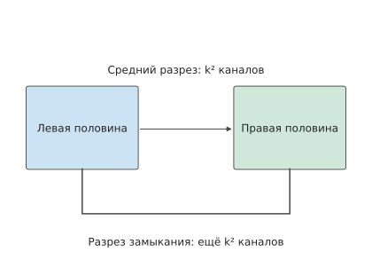
Рисунок 6-36. Чтобы разделить трёхмерную тороидальную сеть пополам вдоль одного измерения, необходимо разорвать соединения посередине и соединения между началом и концом. В каждом месте находится k² соединений, всего — 2k².
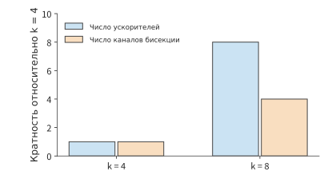
Рисунок 6-37. При увеличении k с 4 до 8 число чипов возрастает с 64 до 512, а число рёбер бисекции — с 32 до 128. Для обоих показателей за основу взято значение при k = 4. k обозначает число узлов в каждом измерении трёхмерного тора, а общее число узлов равно k³.
Фиксированная топология определяет пропускную способность между разделами, а расположение свободных чипов влияет на то, сможет ли задача получить требуемую конфигурацию. OCS на более крупном масштабе перекоммутирует эти модули электрического соединения, выделяя различным задачам подмножества чипов подходящей конфигурации; такие подмножества называются срезами. Рассмотрим сетку из 4×4 чипов: если свободны две смежные строки, на них можно разместить две задачи, каждой из которых требуется смежный блок из 2×2 чипов; но если те же восемь свободных чипов расположены в шахматном порядке, ни одного смежного блока 2×2 найти не удастся. Перекоммутация позволяет изменить доступную для выделения конфигурацию.
Перекоммутация целесообразна, только если сэкономленное время выполнения превышает затраты времени на неё саму. В исследовании Morphlux топология оптических соединений перестраивается под задачу, чтобы соединения соответствовали её коммуникационным потребностям. Предположим, восемь чипов TPU v4 выполняют кольцевую операцию AllReduce для входных данных объёмом 8 MiB, и каждый чип передаёт 14 MiB. Если изначально в этом срезе для данной коммуникационной группы каждому чипу доступно только одно соединение ICI со скоростью 50 GB/s, а после перекоммутации — три, то составляющая времени передачи снижается примерно с 293,6 μs до 97,9 μs, что даёт экономию около 195,7 μs за одну операцию. Переключение оптических маршрутов посредством OCS в TPU v4 занимает миллисекунды: если перекоммутация требует 1 ms, затраты окупятся после 6 повторений; если 100 ms — после 511 повторений. Чем дольше выполняется задача, тем выгоднее устанавливать более подходящие соединения.13
6.5.5 Unified Bus и CloudMatrix¶
Системы NVIDIA и TPU в основном исходят из задачи соединения ускорителей. UB компании Huawei расширяет постановку задачи до доступа к ресурсам: если соединить два хоста, сможет ли устройство на одном хосте напрямую использовать память другого? Первые размышления автора о Unified Bus возникли из-за границы между внутрихостовой шиной и межхостовой сетью. Даже при чтении одних и тех же данных после пересечения границы хоста программному обеспечению обычно приходится переходить на интерфейс передачи сообщений и заново организовывать буферы, а каждый дополнительный уровень абстракции увеличивает время. UB стремится устранить эти уровни абстракции и расширить область прямого доступа к ресурсам, чтобы вычислительные ресурсы, память и хранилища можно было перекомпоновывать под конкретные задачи.
В этой книге UB рассматривается в двух местах. В данном разделе UB представлен как межсоединение суперузла, что позволяет ответить на три вопроса, связанные с масштабом: где подключается контроллер, межсоединение какого размера помещается в кэш на кристалле и сколько времени занимает установление всех соединений. В главе 7 рассматривается путь одного удалённого обращения: в разделе 7.1.3 объясняются мотивы разработки унифицированного интерфейса, в разделе 7.3.3 поэтапно выводится задержка одного чтения, в разделе 7.3.4 вычисляется частота запросов, в разделе 7.4.2 выводятся рост состояния соединений и точка переполнения кэша на кристалле, а в разделе 7.4.3 обсуждается порядок указания по требованию. В обоих случаях используются один набор параметров и один вычислительный скрипт, а результаты расчётов сопоставляются со значениями, полученными при моделировании реализации UB автора — OpenURMA.28
Такая унификация прежде всего требует ответить на два разных вопроса: к кому обращается операция, что она читает или записывает и когда можно использовать результат; как данные этой операции проходят по сети и надёжно доставляются. В UB обязанности первого типа относятся к транзакционному уровню, а второго — к транспортному уровню. Здесь «транзакция» означает одну коммуникационную операцию, а не транзакцию базы данных с семантикой фиксации и отката.
Jetty на транзакционном уровне предоставляет приложению абстракцию конечной точки для отправки, приёма и уведомления о завершении, сохраняя идентичность приложения и необходимый для операции контекст. Транспортный канал на транспортном уровне (в UB он называется TP Channel, где TP — сокращение от Transport Protocol и не связано с тензорным параллелизмом) хранит состояние порядковых номеров пакетов, подтверждений, повторных передач и управления перегрузкой. Несколько конечных точек приложений, обращающихся к одному удалённому узлу, могут совместно использовать нижележащий транспортный канал: каждой связи между приложениями не требуется собственная полная копия состояния надёжной передачи. На рис. 6-38 показано это разделение. QP с надёжным соединением (queue pair, пара очередей — коммуникационная конечная точка, состоящая из очередей отправки и приёма) в традиционном удалённом прямом доступе к памяти (RDMA, позволяющем сетевому адаптеру напрямую читать и записывать разрешённую удалённую память) довольно тесно связывает отношения между конечными точками приложений с состоянием транспорта. UB позволяет независимо задавать количество, время жизни и область совместного использования состояний этих двух типов.27
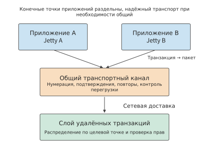
Рис. 6-38. Два локальных приложения сохраняют собственные Jetty и обращаются к удалённой конечной точке через общий транспортный канал. Транзакционный уровень различает операции и получателей уведомлений об их завершении, а транспортный уровень обеспечивает надёжную доставку пакетов. Совместное использование канала не отменяет проверку разрешений и не устанавливает автоматически глобальный порядок между приложениями.
Ещё один ключевой выбор — семантика памяти. В односторонней операции инициатор напрямую указывает уже разрешённый адрес удалённой памяти, а удалённому приложению не требуется подготавливать соответствующий запрос на приём для каждой операции. UB поддерживает два способа инициации: Load/Store инициируются инструкциями процессора, а Read/Write — явно отправленными запросами. Оба способа позволяют обращаться к удалённой памяти, но ни один из них не предполагает автоматического поддержания когерентности кэшей между устройствами. В разделе 7.3.3 сравниваются эти способы, а в разделе 7.4.1 объясняется, когда данные становятся видимыми и когда операция считается завершённой.
Расположение контроллера. Традиционный сетевой адаптер представляет собой периферийное устройство PCIe; этот путь инициации уже был прослежен в разделе 6.4.4. Когда процессор инициирует удалённое чтение, дверной звонок, чтение дескриптора, чтение данных на целевом узле, обратная запись данных и запись сведений о завершении в сумме пять раз пересекают PCIe, причём каждый переход занимает несколько сотен наносекунд. UB подключает контроллер к шине процессора на кристалле: процессор выполняет инструкцию Load, запрос по шине на кристалле напрямую поступает в контроллер, а возвращённые данные непосредственно записываются в регистр. На рис. 6-39 сопоставлены эти два пути инициации. В разделе 7.3.3 этапы обоих путей последовательно суммируются: при односторонней задержке линии 100 ns чтение 64 B через периферийный сетевой адаптер PCIe занимает около 2,2 μs, из которых около 1,65 μs приходятся на пять пересечений PCIe; чтение через контроллер на шине кристалла занимает около 0,42 μs. Экономия времени достигается не сокращением продолжительности прежних этапов, а их устранением благодаря общему адресному пространству процессора и контроллера. Устранение уровней абстракции, позволяющее процессору обращаться к удалённой памяти как к локальной, и есть источник преимуществ UB. Оставшиеся 0,42 μs в основном определяются задержкой линии и доступом к памяти удалённого узла, что уже близко к аппаратному пределу.
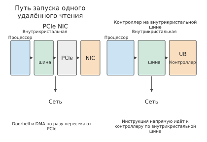
Рис. 6-39. Слева сетевой адаптер подключён через PCIe: дверной звонок, дескриптор запроса, возвращаемые данные и сведения о завершении по одному разу пересекают PCIe между процессором инициирующего узла и сетевым адаптером, а при чтении данных сетевым адаптером целевого узла происходит ещё одно пересечение. Справа контроллер подключён к шине на кристалле, поэтому инструкция процессора поступает в него напрямую. Участки обоих путей от контроллера до сети одинаковы.
Масштаб межсоединения и ёмкость состояния на кристалле. Сетевой адаптер кэширует на кристалле контекст каждой коммуникационной связи; здесь принимается ёмкость кэша 256 KiB. Пусть межсоединение содержит \(H\) хостов, а каждый хост — \(A\) конечных точек приложений, причём конечные точки любых двух хостов могут обмениваться данными. Состояние соединений можно организовать двумя способами. Первый — попарные соединения, примером которых служат надёжные соединения RoCE (RDMA поверх Ethernet): каждая локальная конечная точка устанавливает отдельное соединение с каждой конечной точкой на остальных \(H-1\) хостах, а для каждого соединения хранится контекст размером 512 B. Второй — применяемая в UB схема «конечная точка плюс канал»: для каждой локальной конечной точки хранится одна запись Jetty размером 20 B и одна запись сегмента памяти размером 32 B, а каждому удалённому хосту соответствует транспортный канал размером 56 B. Объём состояния, хранимого каждым сетевым адаптером при этих двух способах, соответственно равен
Пусть \(A=8\). При попарных соединениях каждый дополнительный хост увеличивает состояние на 32 KiB, поэтому кэш размером 256 KiB вмещает состояние только для 8 хостов. При схеме «конечная точка плюс канал» каждый дополнительный хост увеличивает состояние лишь на 56 B, поэтому тот же кэш способен обслуживать более четырёх тысяч хостов. Для 192 хостов CloudMatrix384 попарным соединениям требуется около 6 MiB — в 24 раза больше ёмкости кэша, тогда как схеме «конечная точка плюс канал» нужно лишь около 11 KiB. Состояние, не помещающееся в кэш, приходится заново считывать из памяти хоста при каждой операции. Его стоимость вычисляется в разделе 7.4.2: при попарных соединениях к каждой операции добавляются два чтения PCIe DMA, занимающие около 1 μs.
Третий способ организации — межсоединение с когерентными кэшами, к которому относится NVLink: ускоритель может помещать данные из памяти удалённого узла в собственный кэш. Чтобы поддерживать согласованность копий, требуется каталог, указывающий, какие удалённые узлы хранят каждую строку кэша; для каждого удалённого узла необходимо не менее 1 bit на строку. Пусть каталог отслеживает \(W=2^{20}\) строк кэша (64 MiB данных), а каждая строка дополнительно имеет тег размером 8 B. Тогда каталог занимает \(W\,((H-1)/8+8)\) B: около 8 MiB для двух хостов и около 136 MiB для 1024 хостов. При каждой записи также требуется отправлять сообщения об инвалидации всем удалённым узлам, хранящим копии, поэтому число сообщений линейно растёт с \(H\). Эти две статьи расходов ограничивают масштаб межсоединения с когерентными кэшами несколькими десятками удалённых узлов; 72 GPU системы NVL72 находятся именно в этом диапазоне. UB не поддерживает когерентность кэшей между хостами: приложение самостоятельно определяет, когда данные становятся видимыми другим устройствам (раздел 7.4.1). Поэтому из трёх кривых состояния только кривая UB простирается до тысяч хостов. Эти три кривые показаны на рис. 6-40.
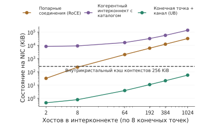
Рис. 6-40. Изменение состояния каждого сетевого адаптера в зависимости от числа хостов в межсоединении при 8 конечных точках на хост для трёх способов организации. Пунктирная линия обозначает кэш на кристалле размером 256 KiB. Попарные соединения превышают его ёмкость при 8 хостах, межсоединение с каталогом когерентности кэшей значительно превышает её уже при двух хостах, а схема «конечная точка плюс канал» помещается в кэш даже при тысячах хостов.
Время установления соединений. Количество состояний также определяет число управляющих операций, выполняемых при запуске задания. Каждое попарное соединение проходит создание и три перехода между состояниями, то есть требует в общей сложности 4 системных вызова. Кроме того, с удалённым узлом необходимо один раз обменяться идентификаторами соединения, что требует одного внеполосного кругового обмена (одного обмена туда и обратно по каналу вне тракта данных). Если один системный вызов занимает 5 μs, а один внеполосный круговой обмен — 500 μs, установление одного соединения занимает около 0,52 ms. Для доступа \(N\) локальных конечных точек к \(M\) удалённым конечным точкам необходимо установить \(NM\) соединений. В схеме «конечная точка плюс канал» достаточно выполнить по 1 системному вызову для каждой из \(N\) конечных точек, а для каждого из \(M\) удалённых хостов — по 1 системному вызову и 1 круговому обмену. При \(N=M=1024\) для попарной схемы необходимо установить 1 048 576 соединений, что последовательно занимает около 545 s, а параллельно на 32 ядрах — около 17 s. В схеме «конечная точка плюс канал» требуется создать лишь 2048 объектов, что при параллельном выполнении занимает около 16 ms. На рис. 6-41 показан весь диапазон \(N\) от 1 до 1024. Этот процесс повторяется при каждом перезапуске задания и каждом масштабировании, поэтому напрямую влияет на время восстановления после сбоя, рассматриваемое в разделе 6.7.2.
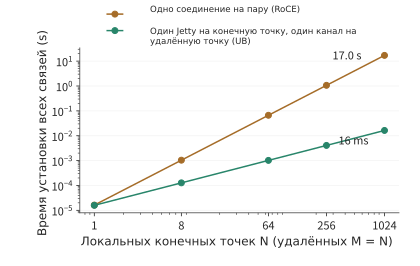
Рис. 6-41. Время установления всех соединений между N локальными и N удалёнными конечными точками при параллельном выполнении на 32 ядрах. Время для попарных соединений растёт пропорционально N², а для схемы «конечная точка плюс канал» — пропорционально N. При N = 1024 значения различаются примерно в тысячу раз.
Конкретным воплощением этих механизмов UB служит система Huawei CloudMatrix384: в ней 384 NPU Ascend 910C и 192 CPU Kunpeng объединены коммутационной структурой UB, а за пределами суперузла используется сеть RDMA. Подключение сервисов обеспечивается сетью виртуального частного облака (VPC), которая изолирует и соединяет ресурсы арендаторов. Если проложить отдельное прямое соединение между каждой парой из 384 NPU, потребуется \(384\times383/2=73\,536\) соединений; коммутационный уровень обеспечивает связь между устройствами посредством портовых соединений и маршрутизации.22
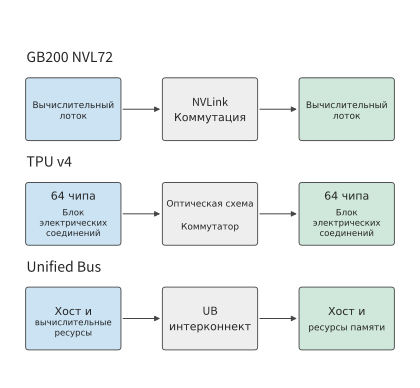
Рис. 6-42. Уровни соединений в трёх публично представленных системах. NVIDIA соединяет устройства посредством NVLink, TPU v4 использует OCS для соединения электрических блоков межсоединения, а Unified Bus подключает вычислительные ресурсы и память хостов к единому межсоединению.
Во всех этих системах можно применять схему параллелизма TP2×EP4 из раздела 6.3.1, однако соответствие между группами и физическими границами различается. Частые операции редукции внутри группы тензорного параллелизма целесообразно размещать в пределах соединения с низкой задержкой, а для обмена результатами между различными группами экспертов требуется достаточная межгрупповая пропускная способность. Только сопоставив коммуникационные группы алгоритма с физическими коммутационными уровнями, можно определить, какие порты задействованы при каждой операции объединения.
При расчёте времени передачи по пропускной способности интерфейса необходимо различать однонаправленную и суммарную двунаправленную пропускную способность. Например, суммарная двунаправленная линейная скорость UB в Ascend 950 составляет 2016 GB/s, а при 72 линиях по 112 Gbit/s однонаправленная скорость равна 1008 GB/s. UBoE — способ передачи трафика UB поверх Ethernet, а UB Link — собственный тип канала UB. Они совместно используют один набор сериализаторов/десериализаторов (SerDes — схемы, преобразующие параллельные данные внутри микросхемы в последовательный сигнал канала и обратно) в соответствии с предварительной конфигурацией, поэтому один набор физических каналов необходимо распределять между этими двумя назначениями. Способ распределения определяет пропускную способность, фактически доступную заданию.21
Эксперимент 6-8. Расширение: объяснение структуры межсоединения суперузла через требования к обмену данными
(a) Выберите DGX-1, DGX-2 или DGX A100 и изобразите прямые соединения или коммутационные уровни, через которые проходит одна коммуникационная группа.
(b) Повторно вычислите количество микросхем и число сбалансированных бисекционных каналов для торов размером 4³ и 8³ и объясните, почему доступная каждой микросхеме пропускная способность между разделами снижается.
(c) Разместите TP2×EP4 на двух хостах с четырьмя картами на каждом и отметьте межхостовую редукцию группы экспертов.
(d) Увеличьте число конечных точек на каждом хосте до 64 и определите, сколько хостов ещё помещается в кэш размером 256 KiB при попарных соединениях. Затем увеличьте кэш до 1 MiB и определите, поместится ли состояние 192 хостов CloudMatrix384.
(e) Измените длительность одного внеполосного кругового обмена на 50 μs, заново вычислите время установления соединений обоими способами при N = M = 1024 и укажите, какой из них чувствительнее к задержке кругового обмена.
(f) Выберите одну из конструкций UB или TPU и объясните, какое требование к установке, обмену данными или доступу к ресурсам привело к такой структуре системы.
6.6 Пул памяти¶
6.6.1 Нехватка локальной ёмкости при наличии свободной памяти в системе¶
После того как UB расширил доступ к ресурсам за пределы одного хоста, у него появляется конкретное применение: узлы с недостатком памяти могут заимствовать свободную память других узлов. Тензорный параллелизм, конвейерный параллелизм и параллелизм экспертов из раздела 6.2 распределяют вычисления и веса между разными ускорителями, снижая требования к памяти каждого из них. Другой подход — не менять место вычислений, а разместить часть данных на других узлах. В этом и состоит основное назначение пула памяти: предоставлять распределённую свободную ёмкость задачам, которым она нужна.
Рассмотрим четыре узла, каждый с одним H100 на 80 GB. Задачам требуется соответственно 100, 60, 40 и 40 GB. Общая потребность составляет 240 GB, что меньше совокупной ёмкости 320 GB, однако задаче 0 требуется на 20 GB больше, чем доступно на её узле. На остальных узлах свободно соответственно 20, 40 и 40 GB — всего 100 GB.
Если целиком перенести задачу 0 на другой узел, её потребность всё равно превысит ёмкость одного узла, равную 80 GB. Если же разместить 20 GB её данных в свободной области узла 1, физическое использование памяти составит 80, 80, 40 и 40 GB. Рабочий набор задачи 0 по-прежнему равен 100 GB, из которых 80 GB находятся локально, а 20 GB — удалённо. Так задача 0 сможет использовать память, которая прежде оставалась свободной на других узлах.
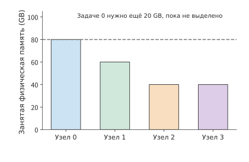
Рисунок 6-43. Физическое использование памяти до заимствования. Ёмкость каждого узла составляет 80 GB, а задаче 0 требуется 100 GB, из которых для 20 GB место хранения ещё не найдено. Цвет обозначает задачу, которой принадлежат данные.
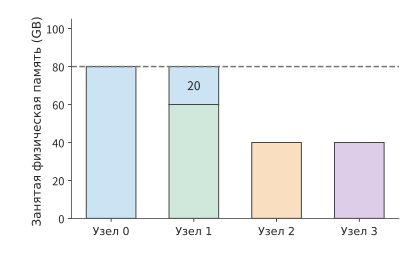
Рисунок 6-44. Дополнительные 20 GB задачи 0 размещены на узле 1. Зелёные 60 GB на узле 1 принадлежат задаче 1, а синие 20 GB — задаче 0; ни один узел не превышает ёмкость 80 GB.
Следует различать свободную ёмкость до и после заимствования: изначально на других узлах было свободно 100 GB памяти, а после передачи 20 GB задаче 0 на четырёх узлах в совокупности остаётся 80 GB. Заимствование не увеличивает объём физической памяти, а лишь позволяет задаче использовать свободное пространство других узлов. Именно такой дисбаланс между серверами находился в центре ранней концепции автора о пуле памяти UB; позднее конкретным вариантом его применения стало хранение и повторное использование KV.
6.6.2 Заимствование памяти и границы доступа¶
Для показанных на рисунке 20 GB уже найдено место хранения; следующий шаг — предоставить узлу 0 корректный доступ к этой памяти. При заимствовании прежде всего необходимо определить, какой узел предоставляет область памяти и какой её использует. Узел, предоставляющий память, открывает доступ к определённой области, узел-заёмщик создаёт соответствующее отображение адресов, а система управляет правами доступа и отслеживает, когда эту память можно освободить и перераспределить. На время эксклюзивного заимствования право использования передаётся заёмщику, а первоначальный владелец ждёт возврата памяти; при совместном доступе несколько потребителей могут обращаться к ней в соответствии с согласованными правилами согласованности и синхронизации.21
Например, если узел 1 предоставляет область памяти узлу 0, узел 0 должен сначала записать новые KV и лишь затем начать вычисление внимания. Вычисление можно начинать только после подтверждения завершения записи и доступности новых KV для чтения; в свою очередь, узел 1 должен дождаться окончания заимствования, прежде чем перераспределять эту область. Адрес отвечает на вопрос «где обращаться к памяти», права — «кто может обращаться», а порядок завершения операций и освобождения памяти — «когда её можно использовать». Удалённую память можно использовать корректно лишь при совместном учёте адреса, прав и порядка доступа.
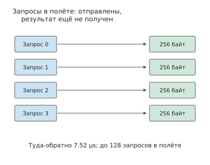
Рисунок 6-45. После отправки группы запросов чтения до получения результатов проходит время кругового пути L. Если одновременно в процессе выполнения может находиться не более u запросов, каждый из которых возвращает q байт, то за один круговой путь можно вернуть не более uq байт. Четыре запроса на рисунке служат лишь для демонстрации процесса; в расчёте в основном тексте используются 128 запросов по 256 байт и время кругового пути 7.52 μs.
Права доступа и порядок завершения операций обеспечивают корректность данных, а показанное на рисунке ожидание определяет скорость чтения. Между отправкой запроса и получением результата проходит некоторое время; чтобы канал оставался загруженным во время ожидания, необходимо одновременно отправлять несколько запросов. Пусть каждая транзакция чтения возвращает \(q\) байт, от отправки до завершения проходит время \(L\), а одновременно в процессе выполнения — то есть уже отправленными, но ещё не завершёнными — могут находиться не более \(u\) транзакций. Тогда за каждые \(L\) секунд можно вернуть не более \(uq\) байт. Совместно учитывая пропускную способность пути и ограничение на количество транзакций в процессе выполнения, получаем
Пусть два узла соединены путём RDMA через сетевые адаптеры ConnectX-7 с пропускной способностью 50 GB/s. Один запрос чтения от отправки до завершения проходит путь туда и обратно; примем \(L=7.52\) μs — удвоенную одностороннюю задержку InfiniBand в 3.76 μs, измеренную MSCCL++ на платформе с H100 и ConnectX-7. Для каждой транзакции чтения примем \(q=256\) байт — ровно столько занимает вектор K одной KV-головы Qwen3-32B на одном слое для одного токена: 128 измерений BF16. При \(u=128\) объём данных в процессе выполнения в каждой группе составляет 32 KiB, а верхний предел пропускной способности, определяемый количеством таких транзакций, равен приблизительно 4.36 GB/s. Для достижения пропускной способности пути 50 GB/s требуется как минимум
Если увеличить только линейную скорость, по-прежнему допуская не более 128 одновременно выполняющихся транзакций, эффективная пропускная способность чтения всё равно будет ограничена их количеством. Если увеличить допустимое количество до 4096, определяемый им предел составит приблизительно 139 GB/s, превысив пропускную способность пути, и узким местом станет сам путь с пропускной способностью 50 GB/s. Пропускная способность пути, размер транзакции и время кругового пути связаны объёмом данных в процессе передачи.
6.6.3 Общая ёмкость и KV-кэш¶
Чтобы определить, может ли удалённая память заменить локальную, необходимо сравнить рассчитанную в разделе 6.6.2 пропускную способность чтения с потребностью приложения. Даже для одних и тех же 20 GB удалённых данных требуемая средняя пропускная способность зависит от частоты чтения. Полное чтение раз в минуту требует в среднем около 0.33 GB/s, раз в секунду — 20 GB/s, а двадцать раз в секунду — 400 GB/s. При одинаковой ёмкости требуемая средняя пропускная способность различается более чем в тысячу раз.
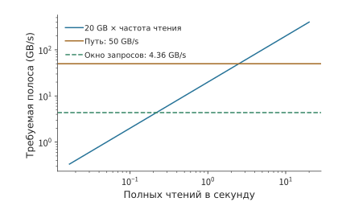
Рисунок 6-46. Частота полного чтения 20 GB и требуемая средняя пропускная способность. Пропускная способность пути составляет 50 GB/s; если каждая транзакция возвращает 256 байт, а время кругового пути равно 7.52 μs, то 128 одновременно выполняющихся транзакций ограничивают эффективную пропускную способность приблизительно до 4.36 GB/s.
При достаточном количестве одновременно выполняющихся транзакций полное чтение по пути с пропускной способностью 50 GB/s занимает около 0.40 s. Если начинать чтение раз в секунду, между двумя чтениями остаётся около 0.60 s простоя; если начинать его каждые 0.05 s, новая работа поступает ещё до завершения предыдущей и очередь непрерывно растёт. Если одновременно можно отправить не более 128 транзакций, чтение занимает около 4.59 s, поэтому даже при одном запуске в секунду очередь будет постепенно накапливаться.23
Способ использования KV определяет, где их целесообразно размещать. Пока сеанс ожидает следующего ввода пользователя, KV могут долго не считываться; в этом случае удалённая память используется главным образом для хранения состояния, которое извлекается при возобновлении сеанса. В активном сеансе состояние контекста считывается на каждом шаге, поэтому повторное сканирование удалённой памяти постоянно занимает пропускную способность. Размер самого состояния зависит от способа представления контекста в модели: в разделе 9.2.2 параллельно сравниваются число байт и время извлечения одного и того же контекста из 8192 токенов для GQA в Qwen3-8B и компактной MLA в DeepSeek-V3; во втором случае объём составляет приблизительно половину от первого.
Данные также можно сначала извлечь, а затем многократно использовать локально. Если один и тот же снимок объёмом 20 GB требуется прочитать десять раз, последовательное чтение по пути с пропускной способностью 50 GB/s займёт около 4.0 s. Однократное извлечение займёт 0.40 s, а десять последующих сканирований в локальной HBM H100 с пропускной способностью 3350 GB/s — около 0.06 s, то есть всего приблизительно 0.46 s. Второй вариант занимает 20 GB локальной памяти, но экономит около 3.54 s времени доступа. Поэтому для многократно считываемых данных необходимо также сравнивать время удалённого чтения со временем доступа к локальному кэшу, чтобы определить, когда данные следует извлекать в локальную память.
Эксперимент 6-9 · Расширение: когда удалённую память следует читать напрямую, а когда — кэшировать локально
(a) Повторно рассчитайте физическое использование памяти четырёх узлов до и после заимствования: отдельно определите свободную ёмкость остальных узлов до заимствования и суммарную оставшуюся ёмкость всех узлов после него.
(b) Каждая транзакция передаёт 256 байт, а время кругового пути составляет соответственно 7.52 μs и 15.04 μs. Определите минимальное количество одновременно выполняющихся транзакций, необходимое для достижения пропускной способности 50 GB/s в каждом случае.
(c) Сравните время однократного чтения при 128 и 4096 одновременно выполняющихся транзакциях. Предполагая, что следующее чтение начинается только после завершения предыдущего, определите максимальное количество полных чтений в секунду при непрерывном чтении.
(d) Используя приведённые в этом разделе значения пропускной способности удалённой и локальной памяти, определите, начиная с какого количества повторных чтений предварительное извлечение данных в локальную память даёт меньшее суммарное время доступа; также укажите необходимую ёмкость локальной памяти.
6.7 От параллельных решений к масштабу суперузлов¶
6.7.1 Более крупные группы совместной работы и больше экземпляров инференса¶
В этом разделе результаты предыдущих разделов используются для размещения нескольких сеансов Qwen3-32B на восьми GPU одного HGX H100. Во всех четырёх сеансах уже завершён prefill, и для каждого сохранён KV-кэш из 131 064 токенов контекста. В каждом сеансе также есть один уже сгенерированный, но ещё не записанный в KV-кэш токен, который служит входными данными для следующего шага. Все четыре сеанса одновременно запрашивают генерацию ещё восьми токенов, в точности заполняя 131 072 позиции, поддерживаемые YaRN. Один экземпляр одновременно обслуживает один сеанс и, завершив эти восемь шагов, переходит к следующему; запросы распределяются между экземплярами по кругу. Все восемь GPU находятся на одном сервере и остаются выделенными этой группе задач до завершения всех четырёх сеансов.
Время каждого шага определяется по формуле (6-5). При продолжении генерации длина контекста в формуле (6-4) последовательно принимает значения от 131 064 до 131 071, а объём обращений к KV-кэшу постепенно растёт. Сумма времени восьми шагов даёт время обслуживания сеанса. Ожидающие сеансы хранят только собственные KV-кэши, а сеансы одного экземпляра совместно используют веса модели. Проверка ёмкости сразу исключает восемь экземпляров на одном GPU: на одном GPU не помещается даже один сеанс с контекстом 128K. Согласно алгоритму из раздела 6.2.2, экземпляр на двух GPU вмещает не более двух сеансов, экземпляр на четырёх GPU — семь, а экземпляр на восьми GPU — шестнадцать; в трёх вариантах развёртывания на каждый экземпляр приходится соответственно один, два и четыре сеанса, поэтому во всех случаях ёмкости достаточно.
| Вариант развёртывания | Восемь шагов одного сеанса | Моменты завершения четырёх сеансов | Завершение всех сеансов |
|---|---|---|---|
| Восемь экземпляров на одном GPU | Не помещается | — | — |
| Четыре экземпляра на двух GPU | 119,1 мс | 119,1, 119,1, 119,1, 119,1 мс | 119,1 мс |
| Два экземпляра на четырёх GPU | 63,8 мс | 63,8, 63,8, 127,6, 127,6 мс | 127,6 мс |
| Один экземпляр на восьми GPU | 41,2 мс | 41,2, 82,4, 123,5, 164,7 мс | 164,7 мс |
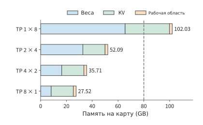
Рисунок 6-47. Требования к памяти каждого GPU для четырёх вариантов развёртывания при сеансах с контекстом 128K, включая веса, KV-кэши всех ожидающих сеансов внутри экземпляра и рабочую область объёмом 2 GiB. Экземпляру на одном GPU требуется 102,03 GB на каждый GPU, что превышает 80 GB у H100 (пунктирная линия); экземплярам на двух, четырёх и восьми GPU требуется соответственно около 52,09, 35,71 и 27,52 GB.
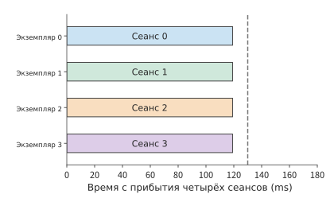
Рисунок 6-48. Четыре сеанса выполняются одновременно, каждый завершается примерно за 119,1 мс. Цвета сеансов совпадают с цветами на соседних схемах конфигураций. Здесь используются четыре экземпляра TP2, по два GPU на экземпляр; в каждом сеансе генерируется продолжение из восьми токенов. Пунктирной линией показан предельный срок 130 мс.
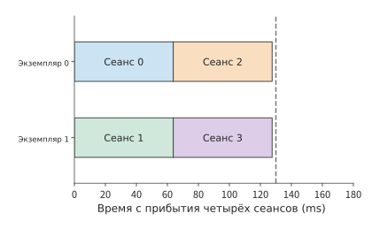
Рисунок 6-49. Каждый экземпляр последовательно обрабатывает два сеанса, которые завершаются примерно за 63,8 и 127,6 мс соответственно. Здесь используются два экземпляра TP4, по четыре GPU на экземпляр; в каждом сеансе генерируется продолжение из восьми токенов. Пунктирной линией показан предельный срок 130 мс.
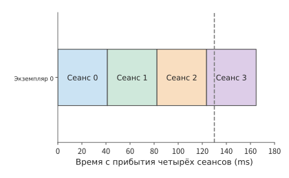
Рисунок 6-50. Время одного сеанса сокращается примерно до 41,2 мс, но четыре сеанса выполняются последовательно, и последний завершается примерно за 164,7 мс. Во всех трёх схемах используется одинаковый масштаб горизонтальной оси. Здесь используется один экземпляр TP8 на восьми GPU; в каждом сеансе генерируется продолжение из восьми токенов. Пунктирной линией показан предельный срок 130 мс.
Совместная работа восьми GPU сокращает время продолжения генерации одного сеанса примерно со 119 до 41 мс, однако четыре сеанса выстраиваются в очередь, и все они завершаются лишь примерно за 165 мс. При использовании четырёх экземпляров на двух GPU продолжение генерации одного сеанса занимает больше времени, зато четыре сеанса могут выполняться одновременно и завершаются примерно за 119 мс. Можно было бы запустить восемь экземпляров на одном GPU, но ни один из них не способен вместить даже один сеанс.
Здесь одновременно используются два вида параллелизма: параллельные вычисления внутри модели и конкурентное выполнение разных запросов. Внутрислойные матрицы можно распределить между несколькими GPU, а независимые сеансы — между несколькими экземплярами, но оба подхода конкурируют за одни и те же восемь GPU. Только разделив эти два уровня, можно выбирать размер группы совместной работы в соответствии с предельными сроками завершения запросов. Планирование обслуживания определяет количество одновременно выполняемых сеансов, разбиение модели — объём коммуникации на каждом шаге, а топология соединений — затраты времени на обмен данными и синхронизацию; вместе эти три фактора определяют приведённые в таблице моменты завершения.
Горизонтальная длина цветных блоков на рисунках обозначает время выполнения одного сеанса, а количество вертикальных дорожек — число сеансов, которые могут выполняться одновременно. Предельный срок завершения определяет компромисс между ними. Если сеанс всего один и его требуется завершить за 50 мс, этому требованию отвечает экземпляр на восьми GPU. Если нужно завершить четыре сеанса не более чем за 130 мс, требованиям отвечают варианты на двух и четырёх GPU, причём вариант на двух GPU завершает работу раньше. Чем жёстче срок для одного сеанса, тем крупнее должна быть группа совместной работы; если независимых сеансов достаточно много, можно использовать больше экземпляров.
При изменении способа соединения расчёты по-прежнему выполняются по исходным формулам. Если, как в разделе 6.5.1, объединить 16 GPU на двух серверах в TP16, каждый шаг займёт около 6,67 мс, а восемь шагов — около 53,3 мс, поэтому достичь цели в 50 мс уже не удастся. Второй сервер лучше использовать для запуска других экземпляров; если же для одного сеанса непременно требуется задействовать больше GPU, необходимо уменьшить дополнительные коммуникационные затраты: улучшить соединение между серверами, изменить алгоритм коллективных коммуникаций либо разместить эти GPU в домене с более тесными связями.
Архитектура с фиксированными весами из главы 4 меняет описанный выше компромисс. Когда веса предоставляет отдельное ROM, сокращается объём чтения весов из HBM, ранее распределённый между несколькими GPU, и доля времени синхронизации TP в длительности одного шага возрастает. Уменьшение количества GPU в TP позволяет исключить часть синхронизации, а освободившиеся GPU — объединить в большее число независимых экземпляров; при этом каждому GPU потребуется хранить бо́льшую долю состояния запросов. Приведённые в этом разделе таблицы ёмкости каждого GPU и времени сеансов по-прежнему можно использовать для сопоставления этих двух изменений; конкретные числовые значения приведены в разделе 6.7.4.
Применим тот же анализ к модели с более компактным состоянием. При расчёте количества GPU, необходимого для DeepSeek V4.1, помимо логической ёмкости состояния в 890 B на токен необходимо учитывать распределение состояния между GPU. В этом значении состояние, совместно используемое разными слоями, учитывается только один раз; если слои размещены на разных GPU, последующим слоям всё равно потребуется обращаться к данным, сохранённым тем слоем, который создал эти состояния. Связанные слои можно разместить на соседних GPU, реплицировать состояние на целевых GPU либо организовать путь удалённого доступа. Первый вариант ограничивает размещение слоёв, второй увеличивает затраты на хранение и обновление, а третий добавляет зависимость от коммуникаций, поэтому потребность в ресурсах следует рассчитывать отдельно по данным, которые каждый GPU фактически хранит и к которым обращается.26
6.7.2 Как мощность, стоимость и область распространения отказа меняют выбор¶
Временная шкала показывает момент завершения каждого сеанса и длительность использования восьми GPU, поэтому по ней можно непосредственно рассчитать стоимость и сравнить, сколько ресурсов требуется для своевременной обработки одного и того же набора запросов. Стоимость измеряется в GPU·s для H100, то есть одна секунда использования одного GPU. Оплата восьми GPU начинается с одновременного поступления четырёх сеансов и продолжается до завершения всех сеансов. Предельное время завершения составляет 130 ms; вовремя должны завершиться как минимум три из четырёх сеансов.
Общая стоимость четырёх экземпляров с двумя GPU составляет примерно \(8\times0.1191\approx0.953\) GPU·s. Все четыре сеанса завершаются вовремя, а средняя стоимость каждого своевременно завершённого сеанса составляет примерно 0.238 GPU·s. Общая стоимость двух экземпляров с четырьмя GPU составляет примерно 1.021 GPU·s. Все четыре сеанса также завершаются вовремя, а средняя стоимость каждого составляет примерно 0.255 GPU·s. Один экземпляр с восемью GPU завершает в установленный срок три сеанса, точно достигая минимально допустимой доли, однако восемь GPU остаются заняты до 164.7 ms. Общая стоимость составляет примерно 1.318 GPU·s, а средняя стоимость каждого своевременно завершённого сеанса — примерно 0.439 GPU·s. Восемь экземпляров с одним GPU не могут вместить сеанс.
Если в качестве знаменателя использовать число своевременно завершённых сеансов, средняя стоимость определяется как
Стоимость занятых ресурсов рассчитывается по полной продолжительности работы, включая время простоя из-за отказа и повторного выполнения; в знаменателе учитываются только сеансы, завершённые в установленный срок. Стоимость неудачных и повторных выполнений, а также запросов, превысивших предельное время, входит в числитель и поэтому распределяется между своевременно завершёнными сеансами.
В приведённом выше сравнении предполагается, что все GPU постоянно работают исправно. При отказе одного GPU содержащий его экземпляр приостанавливается, а назначенные этому экземпляру последующие сеансы также задерживаются. Добавим один отказ на ту же временную шкалу: в момент 20 ms GPU 0 выходит из строя, содержащий его экземпляр останавливается на 40 ms, а после восстановления в момент 60 ms повторно выполняет восьмишаговое продолжение генерации с начальной точки текущего сеанса. Остальные экземпляры продолжают работу и не затрагиваются этим отказом.
При использовании четырёх экземпляров с двумя GPU остальные три сеанса по-прежнему завершаются примерно за 119 ms, а затронутый сеанс — за \(60+119.1\approx179.1\) ms; доля своевременно завершённых сеансов составляет 75%. При использовании двух экземпляров с четырьмя GPU незатронутый экземпляр завершает два сеанса примерно за 64 и 128 ms, а затронутый — остальные два примерно за 124 и 188 ms; доля своевременно завершённых сеансов также составляет 75%. У экземпляра с восемью GPU четыре сеанса последовательно завершаются примерно за 101, 142, 184 и 225 ms; за 130 ms завершается только один.
Четыре экземпляра с двумя GPU по-прежнему удовлетворяют минимальному требованию, но стоимость возрастает до \(8\times0.1791\approx1.433\) GPU·s. Средняя стоимость каждого своевременно завершённого сеанса составляет примерно \(1.433/3\approx0.478\) GPU·s, то есть в 2.0 раза больше, чем без отказа; для двух экземпляров с четырьмя GPU она составляет примерно 0.500 GPU·s. Отказ изолирован внутри одного экземпляра, поэтому остальные три сеанса по-прежнему завершаются вовремя; однако из-за увеличения времени использования ресурсов и сокращения числа своевременно завершённых сеансов стоимость каждого такого сеанса всё равно удваивается.
Рис. 6-51. Зависимость средней стоимости своевременно завершённых сеансов от предельного времени при отсутствии отказов. Восемь GPU оплачиваются до завершения всех сеансов; каждая кривая начинается с точки, в которой вовремя завершаются как минимум три сеанса. Значение TP указывает число GPU, используемых каждым экземпляром; стоимость измеряется в GPU·s для H100. TP1 не вмещает сеанс с контекстом 128K, поэтому соответствующая кривая отсутствует.
Рис. 6-52. В момент 20 ms происходит отказ GPU 0, а в момент 60 ms затронутый экземпляр начинает повторное выполнение с начальной точки текущего сеанса. Используются тот же метод расчёта стоимости и тот же диапазон вертикальной оси, что и на графике без отказов. Значение TP указывает число GPU, используемых каждым экземпляром; стоимость измеряется в GPU·s для H100.
Область распространения отказа зависит от того, используют ли экземпляры общие устройства. Если два экземпляра используют один источник питания или коммутатор, отказ этого общего устройства затронет оба экземпляра. Разделение на экземпляры позволяет сохранить прогресс остальных экземпляров только в сочетании с изоляцией ресурсов. Чем больше устройств использует один экземпляр, тем от исправной работы большего числа устройств зависит выполнение запроса. Поэтому при разделении на экземпляры также необходимо учитывать совместное использование источников питания и коммутаторов.
Энергопотребление этих конфигураций развёртывания также можно рассчитать по мощности. Если принять указанный в разделе 6.5.2 предел мощности системы DGX H100, равный 10.2 kW, то без отказов четыре экземпляра с двумя GPU работают примерно 119.1 ms и потребляют около 1.21 kJ, а два экземпляра с четырьмя GPU работают примерно 127.6 ms и потребляют около 1.30 kJ. При одинаковом оборудовании и одинаковой мощности чем раньше завершается задача, тем меньше электроэнергии расходуется.
Требования модели к памяти ограничивают доступные конфигурации развёртывания. В данном примере первой исключается TP1: KV-кэш сеанса с контекстом 128K увеличивает потребность одного GPU в памяти до 102.03 GB. Если сократить контекст до 32K, один GPU сможет вместить один сеанс, однако восьмишаговое продолжение генерации занимает 173.3 ms, что всё равно превышает предельное время 130 ms. В этом случае TP1 исключается уже по времени. Сначала следует определить конфигурации развёртывания с достаточным объёмом памяти, а затем сравнить их время выполнения и стоимость.24
Эксперимент 6-10 · Основной: выбор конфигурации параллелизма по предельному времени завершения сеанса и стоимости
(a) Используя формулы (6-4) и (6-5), пошагово вычислите время восьмишагового продолжения генерации для четырёх конфигураций TP, а затем рассчитайте моменты завершения каждого из четырёх сеансов.
(b) Поочерёдно задайте предельное время 100, 130 и 170 ms, потребовав своевременного завершения как минимум 75% сеансов. Найдите удовлетворяющие требованиям конфигурации развёртывания и сравните их стоимость.
(c) Перейдите на TP16 на двух системах HGX H100, возьмите измеренное в эксперименте 7-3 значение межсерверного AllReduce, заново рассчитайте время продолжения генерации для одного сеанса и определите, можно ли уложиться в предельное время 50 ms.
(d) Повторно рассчитайте моменты завершения сеансов и стоимость после отказа; сократите время простоя с 40 до 10 ms и объясните, как изменится набор удовлетворяющих требованиям конфигураций развёртывания.
(e) Измените контекст на 32K, добавьте ограничение по мощности и укажите, какие конфигурации развёртывания первыми исключаются соответственно по ёмкости памяти, времени и мощности.
6.7.3 Как выбрать стратегию разбиения для заданных модели и оборудования¶
Вернёмся к вопросу, поставленному в начале главы. Выбор стратегии разбиения можно сформулировать как задачу оптимизации с входными данными и ограничениями: множество вариантов \(\pi\) включает степень параллелизма, физическое размещение, алгоритм коммуникации, разбиение на micro-batch и реализацию локальных операторов. Сначала определяется целевая функция \(J\), после чего ищется
Каждый вариант из допустимого множества \(\mathcal P_{\mathrm{feasible}}\) должен удовлетворять ограничениям на объём памяти каждой карты, зависимости данных при разбиении модели, поддержку со стороны ядер и предельному сроку обслуживания. Целевой функцией \(J\) может быть задержка отдельного запроса или рассмотренная в предыдущем разделе стоимость каждого сеанса, завершённого в срок. Если целью является пропускная способность, следует при одинаковом целевом уровне обслуживания (SLO) сравнивать частоту запросов, которую система способна стабильно принимать. Если нагрузка и цель не зафиксированы, единственного ответа о «наилучшей степени параллелизма» не существует.
Шаг 1. Зафиксировать модель, нагрузку и ресурсы. Для модели необходимо указать число слоёв, размеры матриц, число голов внимания и KV-голов, число экспертов и выбираемых для каждого токена экспертов, точность, общие веса и межслойное состояние. Для нагрузки необходимы длина prefill, контекст decode, число одновременно готовых запросов, распределение маршрутизации, целевая задержка и процесс поступления запросов. Для оборудования необходимы доступный объём HBM каждой карты, эффективные вычислительная мощность и пропускная способность для различных форм, а также пути в каждом направлении внутри узла и между узлами, накладные расходы на запуск и общие узкие места. Параметры оборудования приведены в главе 4, а фактические формы и локальное время выполнения — в главе 5. Нельзя делить общую пропускную способность кластера поровну между всеми коммуникационными группами.
Шаг 2. Перечислить варианты с учётом узких мест, а не выбирать сначала аббревиатуру. В следующей таблице перечислены варианты, которые следует рассматривать при различных ограничениях и узких местах. Она предназначена лишь для сужения области поиска: окончательное решение всё равно требует сравнения времени завершения.
| Текущее ограничение или узкое место | Приоритетные варианты | Затраты, которые необходимо дополнительно рассчитать |
|---|---|---|
| Веса не помещаются в память либо при малом batch их повторное чтение слишком медленно | TP, PP; для MoE можно использовать EP | Редукции, последовательное выполнение стадий, трафик экспертов и рабочая область |
| Много независимых запросов, полная модель уже помещается в память | Больше DP/сервисных реплик, меньшие группы TP | Очереди, переиспользование внутри batch, объём KV на каждую реплику |
| Активации в определённом диапазоне хранятся с дублированием | Включить SP внутри одной группы TP | Сбор и редукции на границах раскладки, поддержка со стороны ядер |
| При длинном контексте доминируют KV и внимание | Сочетание CP и TP | Обмен K и V, редукции статистик, неравномерность нагрузки при каузальном внимании |
| Большой объём весов множества слоёв, дорогие межузловые редукции | TP внутри узла + PP между узлами | Достаточно ли micro-batch, самая медленная стадия и простои конвейера |
| Большой набор экспертов, выраженные горячие точки маршрутизации | EP, реплики экспертов, отделение экспертов (размещение маршрутизируемых экспертов в отдельном пуле ресурсов экспертов) | Трафик dispatch/combine в обоих направлениях, наиболее загруженная карта и очередь пула экспертов |
Шаг 3. Для каждого варианта описать принадлежность данных и временную диаграмму. Для каждой карты укажите, какие слои, головы, эксперты, активации и KV она хранит. При расчёте пикового потребления памяти необходимо также учитывать буферы коллективных коммуникаций, двойную буферизацию, padding, находящиеся в обработке micro-batch и пространство для миграции реплик. Затем для каждого оператора рассчитайте время локальных вычислений и обращений к памяти, а для каждой межкарточной операции — число раундов, объём данных и общие пути; разместите их на временной шкале в соответствии с зависимостями. Последовательные слои одного токена не завершатся одновременно лишь благодаря конвейерному параллелизму, а результаты выбранных этим токеном экспертов не будут готовы раньше времени лишь потому, что сеть свободна. Для MoE необходимо подставлять показатели самой загруженной группы экспертов, а не среднее значение; конкретная модель skew (перекоса нагрузки) приведена в разделе 9.4.
Шаг 4. Ранжировать допустимые варианты по одной и той же цели. В примере этой главы с восемью картами зафиксированы плотная модель Qwen3-32B и сеансы с контекстом 128K; каждый экземпляр одновременно обрабатывает только один сеанс. В первом сравнении рассматриваются TP1, TP2, TP4 и TP8, а оставшиеся карты образуют независимые экземпляры. Параллелизм экспертов неприменим к плотной модели. Последовательный параллелизм изменяет только хранение части активаций и не даёт дополнительной выгоды в этом примере с последовательной обработкой токенов и фиксированной рабочей областью. Если при конвейерном параллелизме не чередовать несколько сеансов, отдельный сеанс всё равно должен последовательно пройти все стадии, поэтому этот вариант не рассматривается как приоритетный для сокращения времени одного сеанса. Контекстный параллелизм, межсеансовый конвейер и непрерывная пакетная обработка (перепланирование активных запросов на границе каждой итерации) могут быть включены в расширенный поиск, однако для них необходимо отдельно учесть временные модели контекстных редукций, планирования стадий и изменения batch; применять к ним масштабирование тензорного параллелизма \(1/p\) нельзя.
В двух предыдущих разделах уже приведены временная шкала и стоимость каждого сеанса. Фильтрация по этим полным значениям непосредственно даёт приведённый ниже выбор; при изменении цели, физических границ или ёмкости изменится и выбор.33
| Заданные условия | Выбор с учётом ограничений | Почему |
|---|---|---|
| Четыре сеанса, 128K, не менее 75% должны завершиться за 130 ms | Четыре экземпляра TP2 | TP1 не помещается в память; с TP2 все сеансы завершаются примерно за 119.1 ms, а стоимость каждого своевременно завершённого сеанса составляет около 0.238 GPU·s, что ниже 0.255 для TP4 и 0.439 для TP8 |
| Один сеанс, 128K, срок 50 ms | Один экземпляр TP8 | Около 41.2 ms; TP4 требует около 63.8 ms, что уже превышает срок |
| Два сервера HGX H100, всего 16 карт; один сеанс, 128K, срок 50 ms | По-прежнему один экземпляр TP8 | Межсерверный TP16 по измеренному времени AllReduce требует около 53.3 ms, что превышает срок; на другом сервере можно запускать другие экземпляры |
| Четыре сеанса, 32K, не менее 75% должны завершиться за 130 ms | Четыре экземпляра TP2 | TP1 помещается в память, но восемь шагов требуют 173.3 ms; с TP2 все сеансы завершаются примерно за 88.3 ms, а стоимость каждого своевременно завершённого сеанса составляет около 0.177 GPU·s |
Шаг 5. Корректировать оценки измерениями, не считая ранжирование по оценкам окончательным выводом. Для лидирующих вариантов проведите измерения при одинаковых запросах, маршрутизации и требованиях к качеству, зафиксировав пиковое потребление памяти, моменты готовности и завершения каждой стадии, объём принятых и отправленных данных на каждом порту и хвостовую задержку сервиса. Если фактическая эффективность матричных операций, конкуренция за коммуникационные ресурсы или очереди отличаются от оценок, подставьте измеренные параметры и выполните ранжирование заново. Если различие между двумя вариантами меньше разброса измерений, сохраните оба и проверьте их на более репрезентативной нагрузке. Итоговый результат должен включать выбранный вариант, исключённые варианты, пороговые значения, при которых вывод изменится, и диапазон измеренных значений. Сопутствующий скрипт позволяет пересчитать четыре группы условий из таблицы, но перебирает только явно заданные варианты и не является глобальным планировщиком для произвольных моделей и фреймворков.
Различные проектные решения влияют на разные временные затраты. Изменение TP прежде всего меняет объём вычислений и обращений к памяти на каждой карте, а также число карт, участвующих в редукции; изменение алгоритма — главным образом число раундов и объём отправляемых данных; изменение топологии — общие пути и фиксированное время ожидания; увеличение числа экземпляров — порядок независимых сеансов в очереди. Подставив эти изменения в одну и ту же модель времени выполнения, можно сравнить производительность различных проектных решений.
Для дальнейшей оптимизации можно выполнить анализ чувствительности формулы (6-5). В примере с восемью картами HGX H100 и малым объёмом данных удвоение пропускной способности NVLink экономит лишь около 2.5 μs, тогда как уменьшение вдвое накладных расходов на запуск каждого раунда экономит около 0.74 ms. Поэтому в первую очередь следует сокращать накладные расходы на запуск каждого раунда коммуникации. Если производительность MoE ограничена самой загруженной группой экспертов, сбалансированное распределение напрямую уменьшает объём вычислений этой группы. Если при чтении удалённого KV пропускная способность ограничена числом находящихся в обработке транзакций, полностью задействовать доступную пропускную способность канала можно лишь увеличением параллелизма транзакций. Это позволяет определить, какие затраты следует сокращать и какие ресурсы увеличивать в первую очередь.
6.7.4 Увеличение суперузла и размещение весов, таблиц Engram и KV: комплексный пример V4.1 Flash¶
В трёх предыдущих разделах обсуждалось, как распределить восемь карт одного сервера между несколькими экземплярами. Теперь изменим сам суперузел: сначала рассмотрим, что даёт его увеличение, затем, следуя подходу из раздела 4.7.3, зафиксируем веса в ROM и, наконец, обсудим размещение таблиц Engram и KV. В качестве примера по-прежнему используется DeepSeek V4.1 Flash из главы 2, а задача — decode с контекстом 200K. Аппаратная платформа состоит из 256 карт H100 SXM, размеры суперузла составляют соответственно 8, 64, 128 и 256 карт, причём каждый экземпляр инференса занимает ровно один суперузел. Внутри экземпляра внимание размещается с использованием параллелизма по данным: каждая карта обрабатывает и хранит внимание и KV только своих сеансов. Маршрутизируемые эксперты и таблицы Engram равномерно распределяются между картами с использованием экспертного параллелизма; на каждом слое выполняется по одному вызову dispatch и combine.34
Размер суперузла и число сеансов на карту. Веса на каждой карте состоят из двух частей: внимание, общие эксперты и выходная голова хранятся на каждой карте отдельной копией и занимают в сумме 9,5 GB; маршрутизируемые эксперты объёмом 288,8 GB и таблицы Engram объёмом 203,1 GB распределяются между \(S\) картами экземпляра. После вычета весов и рабочего пространства \(U\) вся оставшаяся HBM отводится под KV. Каждый сеанс занимает \(K=180{,}7\) MB, поэтому
Время шага по-прежнему оценивается по формуле (6-2): веса текущей карты и KV всех её сеансов считываются по одному разу, из времени чтения и вычислений выбирается большее, после чего добавляются по одному dispatch и combine на каждом слое — всего 80 операций All-to-All. Результаты для четырёх размеров суперузла приведены в таблице.
| Суперузел | Веса на карту | Сеансов на карту | Время шага | Пропускная способность на карту |
|---|---|---|---|---|
| 8 карт | 71,0 GB | 37 | 14,1 ms | 2 632 токена/s |
| 64 карты | 17,2 GB | 335 | 17,3 ms | 19 420 токенов/s |
| 128 карт | 13,4 GB | 356 | 18,4 ms | 19 392 токена/s |
| 256 карт | 11,5 GB | 367 | 18,9 ms | 19 378 токенов/s |
Когда суперузел состоит всего из 8 карт, каждая карта хранит по 48 экспертов на слой, и за один шаг выбираются почти все они, поэтому чтение весов экспертов занимает подавляющую часть времени шага. При увеличении до 64 карт число экспертов на карту сокращается в восемь раз, время их чтения падает более чем в десять раз, а освободившаяся HBM позволяет разместить в девять раз больше сеансов. В результате пропускная способность на карту возрастает в 7,4 раза. Дальнейшее увеличение уже не приносит пользы: чтение экспертов стало незначительным, тогда как чтение KV, вычисления и All-to-All растут пропорционально числу сеансов. Этот выигрыш в 7,4 раза обеспечен главным образом ёмкостью. Если перенести таблицы Engram в память хоста, каждая карта 8-карточного суперузла также сможет разместить 178 сеансов, и отставание от 64-карточного суперузла сократится до 1,9 раза.
Скорость отдельного пользователя от размера суперузла не зависит. При batch, равном 1, критический путь одного токена включает однократное чтение 8,2 GB весов, копия которых хранится на каждой карте, а затем последовательное чтение одного эксперта на каждом слое. Это занимает 2,76 ms, то есть даёт 362 токена/s, совершенно одинаково для 8 и 256 карт. Увеличение суперузла повышает ёмкость и общую пропускную способность, но не скорость отдельного сеанса; сократить время отдельного сеанса можно лишь с помощью тензорного параллелизма внимания, как в разделе 6.7.1. И наоборот, если те же 64 карты распределить по восьми серверам HGX H100, семь восьмых байтов dispatch и combine придётся передавать через сетевые карты. Время коммуникации возрастёт с 3,7 до 29,2 ms, а пропускная способность на карту снизится до 7 828 токенов/s. Именно эти затраты и устраняет суперузел.
Рисунок 6-53. Изменение пропускной способности decode на карту для V4.1 Flash на 256 картах H100 в зависимости от размера суперузла при целевом времени обслуживания 50 ms на токен. Синяя линия: все экземпляры находятся внутри одного суперузла; при переходе от 8 к 64 картам показатель возрастает примерно в 7,4 раза, после чего перестаёт расти. Оранжевая точка: те же 64 карты распределены по восьми серверам и образуют группу экспертного параллелизма.
Фиксация весов в ROM. На рисунке 6-54 показаны три варианта размещения весов и KV. GPU размещает и то и другое в HBM, поэтому на каждом шаге приходится заново считывать веса. В архитектуре из раздела 4.7.3 веса, которые после развёртывания больше не изменяются, записываются в масочную ROM, а в HBM остаётся только KV. KV также можно дополнительно перенести во внутрикристальную SRAM.
Рисунок 6-54. Три варианта размещения весов и KV. Слева: веса и KV GPU совместно используют HBM. В центре: веса записываются в ROM при производстве, а KV размещается в HBM. Справа: веса находятся в ROM, а KV — во внутрикристальной SRAM, ёмкость которой значительно меньше. Стрелками обозначены данные, считываемые на каждом шаге, а высота прямоугольников схематично показывает ёмкость.
Два последних варианта рассчитаны по результатам анализа V4.1 Flash в OpenTallas: две пластины ROM, изготовленные по техпроцессу N5, тот же контекст 200K и batch, равный 1. У весов и KV есть отдельные тракты передачи, поэтому чтение весов, чтение KV и вычисления могут перекрываться, а коллективная коммуникация начинается лишь после завершения всех трёх операций:
Коэффициент 0,9 учитывает невозможность совершенно равномерно распределить слои между двумя пластинами, а \(T_{\mathrm{fixed}}\) — фиксированную конвейерную задержку каждого слоя. В строке для GPU веса и KV совместно используют HBM, поэтому времена двух операций чтения складываются.
| Машина | Хранение и вычисления | Коллективная коммуникация | Скорость одного пользователя | Доля коммуникации |
|---|---|---|---|---|
| 8 карт H100, веса в HBM | 2 689 μs | 76 μs | 362 токена/s | 3% |
| 58 карт B200 с тензорным параллелизмом, веса в HBM | 165 μs | 562 μs | 1 357 токенов/s | 76% |
| Две пластины ROM, веса в ROM | 77 μs | 159 μs | 4 070 токенов/s | 65% |
После переноса весов из HBM время их чтения сокращается с 2,7 ms до 69 μs, но 80 внутрикристальных операций AllReduce по-прежнему требуют 159 μs и занимают 65% времени обработки каждого токена. При использовании тензорного параллелизма на 58 картах B200 время чтения весов также можно сократить до 148 μs, однако время коммуникации возрастает до 562 μs. Как только чтение весов перестаёт быть самой длительной операцией, скорость отдельного пользователя начинает определяться коллективной коммуникацией, и ключевым становится метод оценки коммуникации по числу переходов и задержке каждого перехода из раздела 6.5.1.
Рисунок 6-55. Состав времени обработки одного токена V4.1 Flash для одного пользователя на трёх машинах при контексте 200K и batch, равном 1. Когда веса находятся в HBM, основную часть времени занимает чтение из хранилища; после переноса весов в ROM самой длительной операцией становится коллективная коммуникация.
Где размещать таблицы Engram. V4.1 Flash содержит два модуля Engram, каждый из которых снабжён таблицей на 384 миллиона строк. Каждая строка содержит 256 значений FP8 и 8-байтовый scale; общий объём двух таблиц составляет 203,1 GB. При генерации каждого токена каждый из двух модулей считывает по 24 строки, всего 12,7 KB. Эти таблицы также являются весами и после развёртывания не изменяются. Выбор считываемых строк зависит только от последовательности токенов, а не от активаций, поэтому предварительную выборку можно начать в самом начале каждого шага. Если строки будут получены до завершения вычислений первого блока Transformer, поиск в таблице не увеличит время шага. Доступное для получения данных время составляет 69 μs на H100 и всего 6,1 μs на пластине ROM. На рисунке 6-56 показаны три варианта размещения и их стоимость.
Рисунок 6-56. Три варианта размещения таблиц Engram. Считываемые строки определяются ещё до начала вычислений первого блока Transformer. Варианты отличаются трактом получения этих 48 строк и типом хранилища, ёмкость которого занимает таблица.
| Размещение | Занимаемая ёмкость | Получение 48 строк |
|---|---|---|
| Память хоста, предварительная выборка через PCIe или RDMA | Не занимает HBM | Один обмен туда и обратно: 1,05 μs |
| Шарды в HBM каждой карты суперузла | Для 8 карт — 25,4 GB на карту, что эквивалентно 140 сеансам; для 64 карт — 3,2 GB на карту, что эквивалентно 18 сеансам | Один раунд обмена через NVLink: 0,83 μs |
| Масочная ROM | 21 651 mm², примерно половина пластины | Внутрикристальное чтение |
На H100 обе траектории получения данных значительно короче 69 μs, поэтому при выборе размещения достаточно учитывать только ёмкость. В 8-карточном суперузле эта таблица не помещается; после её переноса в память хоста число сеансов на карту возрастает с 37 до 178. Начиная с 64 карт на каждую приходится лишь 3,2 GB, и размещение таблицы в HBM сокращает число сеансов всего на 5%. Память хоста не становится узким местом и при пакетном обслуживании: в 64-карточном экземпляре каждая карта выполняет за шаг 16 080 случайных чтений. При измеренной в разделе 7.3.4 производительности 61 миллион операций в секунду это занимает всего 0,26 ms, или 1,5% времени шага. В развёртывании DeepSeek таблицы действительно размещаются в памяти хоста и предварительно выбираются через RDMA параллельно с вычислениями первого блока Transformer.
Для пластины ROM компромисс меняется. Вычисление первого блока занимает всего 6,1 μs, поэтому один обмен с памятью хоста туда и обратно отнимает шестую часть этого времени, а когда время шага становится меньше 42 μs, скрыть задержку уже невозможно. Запись таблицы в ROM требует дополнительной половины пластины, хотя на каждый токен из неё считывается всего 12,7 KB. Размещение таблицы в HBM на краю пластины занимает пространство лишь 1 124 сеансов, а чтение не проходит через интерконнект. После переноса таблицы из ROM весь checkpoint помещается на одной пластине, а скорость отдельного пользователя даже возрастает до 5 037 токенов/s. Чем быстрее машина, тем ближе к вычислениям следует размещать эту таблицу — в доступном для записи хранилище.
Перенос KV в SRAM. Внутрикристальная SRAM значительно быстрее HBM, однако прежде всего должна обладать достаточной ёмкостью. Checkpoint V4.1 Flash занимает 510,3 GB, поэтому даже при использовании 44 GB внутрикристальной SRAM, как в WSE-3 из раздела 4.7.2, только для весов потребуются 12 пластин. Таким образом, вариант с размещением весов в SRAM сразу исключается из-за недостаточной ёмкости. После переноса весов в ROM оставшейся на пластине SRAM хватает лишь для KV одного сеанса с контекстом 200K; если же разместить KV в HBM, те же две пластины смогут одновременно удерживать 9 637 сеансов. Скорость отдельного пользователя у двух вариантов одинакова, но общая пропускная способность различается на три порядка. Скорость одного сеанса определяется хранилищем и коммуникацией на критическом пути, а число одновременно обслуживаемых сеансов — ёмкостью для изменяемого состояния. Это и есть два уровня параллелизма, разделённые в разделе 6.7.1.
Во всех трёх шагах применяется один и тот же метод: сначала по формуле (6-1) проверяется ёмкость, затем по формуле (6-2) отдельно оценивается время каждой операции и, наконец, определяется самая длительная операция на критическом пути. Увеличение суперузла повышает пропускную способность, но не ускоряет отдельный сеанс. После фиксации весов задержка каждого перехода в интерконнекте ограничивает скорость отдельного пользователя. Такие доступные только для чтения большие структуры, как таблицы Engram, по мере ускорения машины следует размещать всё ближе к вычислениям. Ёмкость SRAM определяет число одновременно обслуживаемых сеансов.
Эксперимент 6-11. Расширение: комплексный пример с суперузлом, ROM и SRAM
(a) По формуле (6-14) повторно рассчитайте число сеансов в каждой строке таблицы. Измените целевое время обслуживания на 20 ms на токен и определите число сеансов, которое сможет обслуживать каждая карта при каждом размере суперузла.
(b) Переведите внимание внутри экземпляра на TP8, не меняя остальные условия. Повторно рассчитайте скорость одного пользователя при batch, равном 1, и сравните её с 362 токенами/s.
(c) Измените накладные расходы запуска каждого межсерверного раунда с 5 μs на 2 μs и установите на каждую карту по две сетевые карты. Определите, сможет ли межсерверный 64-карточный экземпляр сравняться с экземпляром внутри суперузла.
(d) Уменьшите вдвое задержку каждого внутрикристального перехода и по формуле (6-15) повторно рассчитайте скорость одного пользователя и долю коммуникации для строки с пластинами ROM.
(e) Измените размер контекста на 1M и повторно рассчитайте число одновременно размещаемых сеансов при хранении KV в SRAM и в HBM.
(f) Измените время одного обмена с памятью хоста туда и обратно на 2 μs. Определите, начиная с какой скорости отдельного пользователя поиск в таблице Engram начнёт увеличивать время шага на H100 и на пластине ROM.
Если объём весов, состояния или требования к обслуживанию продолжат расти, одного суперузла может оказаться недостаточно для работы экземпляра. В следующей главе к проанализированным здесь трактам передачи данных и зависимостям добавляются сетевые карты, коммутируемая сеть центра обработки данных, уведомления о завершении удалённых операций и сетевая перегрузка, после чего продолжается расчёт выгод и затрат от расширения области совместной работы.
Итоги главы¶
Параллельная работа на нескольких ускорителях продолжает принципы разбиения и планирования операций, применяемые на одном ускорителе. При разбиении по примерам, позициям последовательности, признакам, слоям и экспертам на каждом ускорителе различаются хранимые данные и зависимости; распространёнными способами организации такого разбиения служат параллелизм данных, тензорный параллелизм, параллелизм последовательности, параллелизм контекста, конвейерный параллелизм и параллелизм экспертов. Разбиение порождает обмен данными, планирование определяет моменты его запуска и синхронизации, а совокупность алгоритма и физических маршрутов определяет затраты. При выборе решения сначала проверяют, достаточна ли ёмкость и допустимо ли выполнение, а затем сравнивают варианты по задержке, пропускной способности или стоимости при полной нагрузке.
По мере масштабирования выигрыш от параллелизма уменьшается: объём вычислений и обращений к памяти на каждом ускорителе постепенно сокращается, но затраты времени на последовательную обработку сохраняются, а раунды редукции и ожидание обмена данными между серверами продолжают отнимать время. Повторное использование данных внутри батча, распределение горячих точек, транзакции в процессе выполнения и физические разрезы сети также по-разному влияют на скорость передачи данных и время выполнения самого медленного этапа. При анализе этих факторов следует исходить из того, где данные создаются, где хранятся и когда используются в следующий раз: это позволяет объяснить, как каждая статья затрат влияет на последующие вычисления. Пример расчёта для UB показывает: складывается ли состояние соединений по числу конечных точек или перемножается по числу пар конечных точек — от этого зависит, сколько хостов поместится в кэш на кристалле и сколько времени займёт установление всех соединений; подключён ли контроллер к шине на кристалле или расположен за PCIe — от этого зависит, сколько уровней приходится пересекать при каждом обращении.
В рассмотренной в этой главе задаче продолжения текста с контекстом 128K один сеанс не помещается на одном ускорителе; экземпляр с восемью ускорителями обеспечивает минимальное время продолжения одного сеанса, тогда как четыре экземпляра по два ускорителя позволяют раньше завершить все четыре сеанса. Сбои, длина контекста и маршруты между серверами дополнительно влияют на доступные варианты развёртывания. В конечном счёте масштаб суперузла служит конкретной задаче: обеспечить достаточный объём памяти, выполнить запросы в установленный срок и снизить ресурсные затраты на один запрос.
-
Полный набор весов BF16 для одной карты занимает 470 187 269 120 bytes, а KV для 8192 токенов — 1 577 058 304 bytes. При восьмикарточном TP каждая карта хранит 58 959 617 024 bytes весов, включая отдельную копию параметров нормализации и маршрутизатора на каждой карте, и 394 264 576 bytes KV; на каждой карте помещается не более 47 сеансов по 8192 токена. В таблице GB указаны в десятичной системе, а GiB/MiB — в двоичной; сначала точные значения суммируются, а затем результат округляется. В 2 GiB включён резерв для активаций и прочего рабочего пространства. Подробности приведены в материалах «Размещение Qwen3-235B-A22B на восьми картах» и соответствующем JSON, где считываются зафиксированные официальные конфигурация и индекс весов. Объём чтения и число операций за один шаг приведены в материалах «Decode одного запроса с контекстом 8K» и «Prefill 8192 токенов». ↩
-
Расчёт параллелизма для конкретных моделей, конфигурация Qwen3-235B-A22B, отчёт DeepSeek V4, таблица 1 и §2.3 отчёта Kimi K3. DeepSeek-V3 с 671B параметров используется как историческая модель для сравнения. ↩↩
-
Восемь итоговых конфигураций прошли проверку по эталону FP64; выходы парных TP/SP побитно совпали. Полные формы тензоров и критерии приёмки приведены в материале «Эксперимент 6-2: фактический путь FFN с JAX TP/SP». Эксперимент выполнялся на логических устройствах CPU. ↩
-
Формы матриц и конвейерные расчёты MeshSlice, состояние и дополнительное резидентное размещение при Shift Parallelism. Частичное перекрытие в MeshSlice является прогнозом; определение SP и границы динамического переключения Arctic взяты из описания зафиксированной реализации. ↩
-
Расчёт ограниченного числа слотов и обратного давления, базовые тракты коммуникации TP/PP. ↩
-
Упражнение по связям владения в Qwen235 и результаты независимой проверки. В этом примере используется заданная в основном тексте схема TP2×EP4. ↩
-
Материал об использовании экспертов и MoE Serving Tax. В формуле (6-8) предполагается, что каждый токен независимо и равномерно выбирает экспертов; в исходной статье сопоставление с плотной контрольной моделью выполняется отдельно по FLOPs активаций и по общему числу параметров. ↩
-
График и описание выборки приведены в материалах «Тепловая карта маршрутизации» и «Описание сопроводительной иллюстрации». Записи охватывают 43 слоя и четыре фактических входа decode для каждого задания, включая преждевременно выполненный планировщиком EOS forward. Источники: «Наблюдение за маршрутизацией DeepSeek V4-Flash» и анализ исходных счётчиков. ↩
-
Пораундовые результаты Ring и результаты несегментированного биномиального дерева, рассчитанные без конкуренции за ресурсы. Пропускная способность 18 каналов NVLink 4 карты H100 в каждом направлении в сумме составляет 450 GB/s; см. страницу 47 описания архитектуры H100. Накладные расходы каждого раунда взяты из работы C. Hwang и соавторов «MSCCL++: Rethinking GPU Communication Abstractions for AI Inference», ASPLOS 2026, таблицы 1 и 2: на платформе с 8 картами H100, NVLink 4 и одной сетевой картой ConnectX-7 400 Gbit/s на каждую карту утилита nvbandwidth показала задержку NVLink 822 ns и пропускную способность 397,5 GB/s, а RDMA perftest — задержку InfiniBand 3,76 μs и пропускную способность 48,94 GB/s. ↩
-
Тракты коллективной коммуникации и диагностика, включая зафиксированный исходный код фреймворка, диспетчеризацию custom AllReduce, расхождения в моментах готовности и область измерения. ↩↩
-
В AutoCCL используются 16/32 карты A40 и NCCL 2.18.3, а в восьмикарточной конфигурации NVLink карты соединены четырьмя парами. Непосредственной целью поиска по-прежнему остаётся производительность коммуникации; рост с 18,26 до 32,44 GB/s — это приведённое в таблице 6 статьи измерение AllGather при помехах от повторных вычислений. Путь AllGather/AlltoAll без CTA через сеть в NCCL 2.31.2 включает симметричное окно регистрации, внутрисерверный CE и межсерверный CPU proxy. Подробности приведены в материале «Настройка коммуникации, конкуренция с вычислениями и разгрузка». ↩↩
-
Эксперимент 6-5: фактическое перекрытие коммуникации и вычислений в четырёх процессах. Эксперимент выполнялся на одном M2 Max с версией PyTorch для CPU; четыре процесса обменивались данными по локальному TCP. Итоговые измерения проводились в пяти группах. В каждой группе по одному разу запускались три режима: только коммуникация, только вычисления и одновременное выполнение; порядок внутри группы выбирался случайно. Для каждого показателя сначала выбиралось время самого медленного процесса внутри группы, а затем медиана по пяти группам. Время коммуникации измерялось с момента отправки асинхронного AllReduce до получения хостом callback о завершении, которое могло произойти немного позже фактического окончания передачи данных. ↩
-
Физические тракты коллективной коммуникации и разнесение заданий по времени, расчёт физических трактов 96 сообщений, избранные материалы NSDI 2024, версия Morphlux и заметки по материалам. OCS в TPU v4 основан на MEMS-зеркалах, а переключение занимает миллисекунды; см. §2 статьи о TPU v4. ↩↩
-
Промежуточная передача через PCIe и размещение NUMA, расчёт буфера рядом с отправителем, из которого в этой главе используется только количество байтов. Модель CPU хоста HGX H100 указана в руководстве пользователя DGX H100. Xeon 8480C — специализированная версия Xeon Platinum 8480+, поддерживающего до 4 каналов UPI по 16 GT/s каждый; см. спецификацию Intel и таблицу 1 технического обзора Xeon четвёртого поколения. Intel не публикует пропускную способность UPI в GB/s для каждого направления, поэтому время передачи здесь не пересчитывается. Пропускная способность PCIe Gen5 x16 в каждом направлении составляет 64 GB/s; см. страницу 48 описания архитектуры H100. ↩
-
Анализ числа портов и среды интерконнекта. В примерах расчёта числа портов и мощности используются входные данные из условия. ↩
-
ASHRAE TC 9.9, «Emergence and Expansion of Liquid Cooling in Mainstream Data Centers», 2021, страницы 14 и 28: в техническом документе не указан единый предел воздушного охлаждения; значение 40 kW выбрано в этом примере как порог на основе приведённого сравнения воздушных потоков. В примере компоновки стоек на странице 10 эталонной архитектуры DGX SuperPOD H100 мощность каждой стойки превышает 40 kW. Ограничение мощности в расчёте на сервер приведено в поле
rackрезультатов вычислений для главы 6. ↩ -
Описание архитектуры V100, топология NVLink и приложение о DGX-1; описание архитектуры A100, приложения о NVLink/NVSwitch и DGX A100. Историческая 16-карточная конфигурация DGX-2 также приведена в описании платформы в статье о ZeRO. ↩
-
В проектном примере используются 6 портов на чип и 50 GB/s на порт в каждом направлении — параметры взяты из TPU v4. В таблице 1 обзора поколений TPU для каждого чипа TPU v4 указаны 6 каналов ICI по 50 GB/s, а в сноске 4 уточняется, что значение приведено для каждого направления; у TPU v5p и Ironwood каждый канал обеспечивает 100 GB/s. В таблице 4 статьи о TPU v4 также указаны 6 каналов по 50 GB/s. Задержка каждой пересылки 200 ns взята из §9.9.2 спецификации UALink 2.0, где она задана как целевая задержка без нагрузки для коммутатора на 128 линий; здесь это же значение применяется к маршрутизаторам внутри чипов тора. 32 MiB — заданный условием объём отправляемых данных на карту; нагрузка на каналы при равномерном All-to-All рассчитывается по среднему числу переходов при маршрутизации по измерениям. Остальные системные данные взяты из §2 статьи о TPU v4 — стоимость оптических каналов, доля OCS и сечение трёхмерного тора; из официальной спецификации NVLink — 18 каналов на GPU и неблокирующее соединение 72 GPU; из §3.3.2–3.3.3 статьи CloudMatrix384 v2 — число коммутаторов первого и второго уровней и неблокирующая конструкция. ↩
-
Официальный архив GB200 NVL72: в зафиксированном снимке описаны 72 GPU, 36 CPU и организация NVLink в масштабе стойки. NVLink Switch System поддерживает подключение до 256 карт H100; см. страницу 48 описания архитектуры H100. Время кольцевой редукции на 16 картах приведено в поле
two_servers.nvlink_domain_tp16результатов вычислений для главы 6. ↩ -
Статья о TPU v4, обзор нескольких поколений систем TPU: конструкция электрического интерконнекта cube, OCS, разделение на срезы и изоляция отказов. ↩
-
Проверка материалов об UB и Ascend 950, §4 эталонного проекта UB OS, §4.6 официального технического документа 950. ↩↩↩
-
§3.2, рисунок 2 и таблица 1 статьи CloudMatrix384 v2. Некоторые измерения NPU в таблице статьи приведены в расчёте на die, тогда как система из 384 компонентов считается по NPU. ↩
-
Поле
memory_poolрасчётов пула памяти для главы 6: занятое пространство четырёх узлов по 80 GB до и после заимствования, пропускная способность окна \(uq/L\), время чтения и сравнение с повторным чтением. Пропускная способность тракта принимается равной 400 Gbit/s для ConnectX-7, время обмена туда и обратно — удвоенной односторонней задержке InfiniBand 3,76 μs из таблицы 1 MSCCL++, а локальная пропускная способность — 3350 GB/s для H100. ↩ -
Поля
candidatesиcandidates_32kв повременной шкале сеансов, сбоев и GPU·s сгенерированы скриптом расчёта; отбор для четырёх наборов условий развёртывания приведён в результатах выбора разбиения. Энергопотребление рассчитано исходя из предельной мощности системы DGX H100, равной 10,2 кВт; см. результаты расчётов для главы 6. ↩ -
Сквозная модель и пошаговые расчёты приведены в описании модели, скрипте расчёта и полных результатах. Конфигурация Qwen3-32B взята из зафиксированных настроек, а объём HBM, пропускная способность и пиковая производительность матричных вычислений H100 — из таблицы оборудования. Время матричного оператора определяется как максимальное из времени доступа к памяти и времени вычисления, причём оба рассчитаны по пиковым значениям; коммуникации выполняются последовательно по слоям, а контекстный KV-кэш растёт на каждом шаге. ↩
-
Официальный технический отчёт DeepSeek V4.1, разделы 1, 2, 3 и 6; фиксированные условия и повторный расчёт сквозного межглавного сеанса. ↩
-
Ли Боцзе, «Размышления о принципах Unified Bus», разделы о Jetty, порядке транзакций и Load/Store; статья об OpenURMA, редакция от 2026-06-02 (arXiv:2605.28717), §3 — проектирование, §7–§9 — состояние и задержка, §11 — полносистемная проверка, §13 — сводка результатов. Источники и область применимости данной интеграции. ↩
-
Параметры и результаты для числа хостов и времени установления соединения приведены в расчёте межсоединения UB; расчёт можно воспроизвести командой
python3 calculations/calc.py ub-fabric --format md. Размер записи, задержки этапов и количество записей кэша взяты из таблиц 3 и 7, а также §7.2 статьи об OpenURMA. Когерентное межсоединение с каталогом рассчитано по формуле, согласно которой для каждой строки кэша хранится 1 бит на каждый другой узел; 72 GPU в NVL72 — публично известная конфигурация продукта этого поколения, а не результат, выведенный в этой книге. ↩ -
Технический блог NVIDIA, Improving Network Performance of HPC Systems Using NVIDIA Magnum IO NVSHMEM and GPUDirect Async (этапы двух путей: через прокси-поток CPU и с инициированием со стороны GPU); документация NVIDIA DOCA DPA (модель программирования, переносящая коммуникационный код на встроенный процессор сетевой карты BlueField-3); снимок README DeepEP. Количество переходов для трёх вариантов размещения рассчитано по соответствующим путям управления; конкретная реализация может объединять этапы или добавлять новые. Снимки полученных материалов см. в реестре источников. ↩
-
NVIDIA: семантика коллективных операций NCCL, операции «точка — точка» и обмен данными разной длины, методика измерения пропускной способности nccl-tests; снимки прочитанных материалов и хеши см. в реестре источников. ↩↩↩
-
Korthikanti и др., Reducing Activation Recomputation in Large Transformer Models, tensor parallelism и sequence parallelism в §3; документация Megatron Core по Context Parallelism; Liu и др., Ring Attention with Blockwise Transformers for Near-Infinite Context. В этом разделе SP используется в специфическом значении из Megatron, а пример CP с восемью позициями выведен в этой книге. ↩↩
-
Главный учёный Huawei по полупроводниковым технологиям доктор Ляо Хэн, Nested Parallel von Neumann Architecture and Nested BSP, arXiv:2609.16787, 15 сентября 2026 года. Раздел 2 и рисунок 1 описывают рекурсивное вложение программного параллелизма; снаружи внутрь на рисунке расположены DP, PP, EP, FSDP, CP и TP. Глава 6 использует иерархический взгляд статьи для объяснения сочетаний, а глава 10 — для различения FSDP и SP; пример с 16 картами является учебным примером этой книги. ↩
-
Входные данные для выбора разбиения, скрипт отбора вариантов, полные результаты. Используется модель времени выполнения из этой главы; объём KV-кэша рассчитывается по пиковому контексту всех поставленных в очередь сеансов внутри экземпляра. Ранжирование выполняется только среди явно указанных комбинаций TP и количества экземпляров. ↩
-
Фиксированный сценарий, скрипт расчёта и полные результаты. Веса суммируются по каждому тензору на основе заголовков шардов зафиксированного checkpoint V4.1 Flash; объём KV-кэша и количество матричных операций рассчитаны соответственно с помощью
kv-comparisonиv41-forwardпри контексте 200,000; параметры H100 взяты из таблицы оборудования; накладные расходы на запуск каждого раунда для NVLink и сетевой карты совпадают со значениями из разделов 7.6.3 и 7.6.4. Строки о пластине ROM и 58 ускорителях B200 взяты из roofline-анализа DeepSeek-V4.1-Flash в репозитории автора OpenTallas, commit c7093ba; использованные точки анализа сохранены в выдержке. Это результаты анализа при одинаковой площади кремния: чип OpenTallas ещё не изготовлен, а плотность ROM и пропускная способность чтения для техпроцесса N5 не измерялись. Число строк таблицы Engram, количество байтов в строке и число строк, считываемых двумя модулями, взяты из того же checkpoint и той же конфигурации; в развёртывании DeepSeek таблица размещается в памяти хоста и предварительно загружается по RDMA, см. технический отчёт V4.1, §2.4.2 и §3.1.3; время одного обращения к памяти хоста туда и обратно и скорость чтения, ограниченная числом меток запросов в обработке, взяты из измерений KV-Direct в разделе 7.3.4; площадь ROM пересчитана по плотности масочного ROM для N5 из OpenTallas, а проект одной пластины после переноса таблицы из ROM взят из анализа engram-host в том же commit. Объём встроенной SRAM WSE-3, равный 44 GB, указан в разделе 4.7.2. ↩ -
Техническое описание HGX H100: восемь GPU соединены через NVSwitch, пропускная способность NVLink между GPU составляет 900 GB/s, а скорость сети — до 400 Gbit/s; в спецификации NVIDIA H100 для H100 SXM указаны 80 GB, 3,35 TB/s, NVLink 900 GB/s и PCIe Gen5 128 GB/s, причём последние два значения представляют суммарную пропускную способность в направлениях приёма и передачи; описание архитектуры H100, стр. 47: 18 линий NVLink четвёртого поколения, по 25 GB/s в каждом направлении на линию; техническое описание ConnectX-7: до 400 Gbit/s на порт; руководство пользователя DGX H100: 8 ускорителей H100, 640 GB памяти GPU. Конфигурация с одной сетевой картой 400 Gbit/s на каждый ускоритель также приведена в публичном журнале выполнения эксперимента 7-3. Пропускная способность HBM и значение 989,4 TFLOP/s взяты из строки
h100-sxmв таблице оборудования. ↩ -
В таблице 1 технического отчёта Qwen3 для Qwen3-32B указаны 64 слоя, 64/8 голов запросов/KV и контекст 128K; в §3.2 сказано, что длина последовательности при предварительном обучении составляет 32,768, а во время инференса YaRN и DCA увеличивают поддерживаемую длину последовательности в четыре раза. ↩
-
Qwen3-32B, batch 1 и batch 64, Qwen3-30B-A3B, batch 1 и batch 64 с равномерной маршрутизацией, Qwen3.6-35B-A3B, batch 1 и batch 64, состояние Qwen3.6 при 128K и состояние при 256K. Число помещающихся запросов рассчитывается как \(\lfloor(n\times(80\ \mathrm{GB}-2\ \mathrm{GiB})-W)/S\rfloor\), где \(n\) — число ускорителей, \(W\) — постоянно размещённые в памяти веса, а \(S\) — состояние на запрос; сводные данные приведены в поле
dense_moeрезультатов расчётов для главы 6. Чтение состояния Qwen3.6 включает KV-кэш слоёв полного внимания, рекуррентное состояние слоёв линейного внимания и состояние свёртки. ↩ -
Описание архитектуры H100, стр. 47–48: один NVSwitch третьего поколения предоставляет 64 порта NVLink четвёртого поколения, а каждая линия NVLink — по 25 GB/s в каждом направлении; в NVLink Switch System вся внутренняя пропускная способность NVLink каждого узла выводится за его пределы с коэффициентом консолидации 2:1. ↩
-
Руководство пользователя DGX H100, таблица 3: максимальная мощность системы — 10,2 кВт; значение 700 W для H100 SXM приведено в таблице оборудования. Предельная мощность в расчёте на сервер приведена в поле
rackрезультатов расчётов для главы 6. ↩